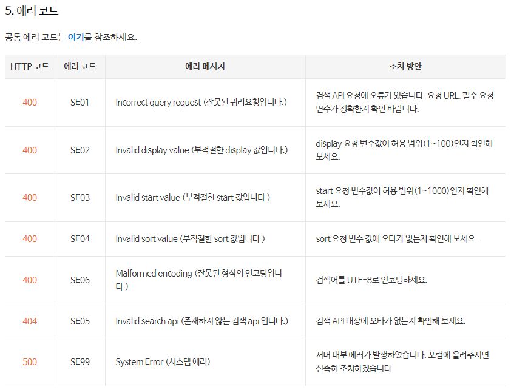
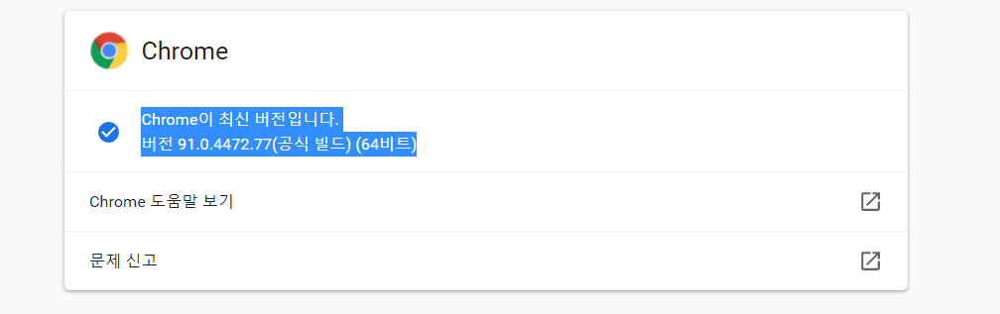

네이버 뉴스 데이터 가져오기
네이버 뉴스 데이터 가져오기
- 네이버 오픈 API로 기사 URL 크롤링
- bs4 + selenium으로 기사 제목 및 내용 크롤링
-
https://developers.naver.com/products/service-api/search/search.md 오픈 API 이용 신청 클릭하기
-
https://developers.naver.com/docs/serviceapi/search/blog/blog.md#%EB%B8%94%EB%A1%9C%EA%B7%B8 에서 네이버 검색 Open API 예제 (python) 볼수 있음
import os
import sys
import urllib.request
import requests
client_id = "7Rw0IMw6pollWxMoWmep"
client_secret = "MA_4fslk3O" # 발급받은 client_secret
encText = urllib.parse.quote("네이버")#url에 파이썬 글자 붙여줌
url = "https://openapi.naver.com/v1/search/news?query=" + encText # json 결과
# url = "https://openapi.naver.com/v1/search/blog.xml?query=" + encText # xml 결과
request = urllib.request.Request(url)
request.add_header("X-Naver-Client-Id",client_id)
request.add_header("X-Naver-Client-Secret",client_secret)
response = urllib.request.urlopen(request) #접속 하게끔 해줌
rescode = response.getcode() #request를 response 코드로 전달
#200 나오면 정상임
if(rescode==200):
response_body = response.read()
# result = requests.get(response.geturl(),
# headers={"X-Naver-Client-Id":client_id,
# "X-Naver-Client-Secret":client_secret}
# )
# news_data.append(result.json())
print(response_body.decode('utf-8'))
else:
print("Error Code:" + rescode)
{
"lastBuildDate": "Thu, 03 Jun 2021 13:20:51 +0900",
"total": 3164334,
"start": 1,
"display": 10,
"items": [
{
"title": "'알고있지만' 한소희x송강, 설렘 포텐 터지는 케미! 붙어만 있어도 심쿵♥",
"originallink": "http://www.osen.co.kr/article/G1111592396",
"link": "https://news.naver.com/main/read.nhn?mode=LSD&mid=sec&sid1=106&oid=109&aid=0004417589",
"description": "원작 <b>네이버</b>웹툰 ‘알고있지만’(작가 정서)) 측은 3일, 설렘 포텐을 제대로 터뜨린 포스터 촬영현장 메이킹... 동명의 인기 <b>네이버</b>웹툰을 원작으로 하는 ‘알고있지만,’은 사랑은 못 믿어도 연애는 하고 싶은 여자... ",
"pubDate": "Thu, 03 Jun 2021 13:19:00 +0900"
},
{
"title": "'잡동산' 승관, '랜덤 홈쇼핑' 준비...어린이 고객 만족도 100%",
"originallink": "http://www.slist.kr/news/articleView.html?idxno=256469",
"link": "http://www.slist.kr/news/articleView.html?idxno=256469",
"description": "사진=채널S '잡동산' 제공 3일 방송되는 채널S '잡동산' 측은 승관이 준비한 '랜덤 홈쇼핑'에서 노련한 진행 실력을 뽐내는 어린이 고객님의 활약을 담은 영상을 <b>네이버</b>TV 공식 채널을 통해 선공개했다. '잡동산'의 9번째 잡... ",
"pubDate": "Thu, 03 Jun 2021 13:18:00 +0900"
},
{
"title": "일동후디스, 필수 영양소로 채운 '하이뮨 프로틴 밸런스 음료' 출시",
"originallink": "http://www.seoulwire.com/news/articleView.html?idxno=444495",
"link": "http://www.seoulwire.com/news/articleView.html?idxno=444495",
"description": "일동후디스 '하이뮨 프로틴 밸런스 음료'는 일동후디스 건강기능식품 공식 쇼핑몰인 '하이뮨 몰' 및 <b>네이버</b> 스마트스토어 등으로 만나볼 수 있다. 일동후디스 관계자는 "'하이뮨 프로틴 밸런스 음료'는 기존 하이뮨에... ",
"pubDate": "Thu, 03 Jun 2021 13:18:00 +0900"
},
{
"title": "“상쾌한 민트와 카카오의 시원한 만남” 오리온, 여름 한정판 초코파이하우스...",
"originallink": "http://theviewers.co.kr/View.aspx?No=1658068",
"link": "http://theviewers.co.kr/View.aspx?No=1658068",
"description": "현재 전국의 편의점 냉장 코너를 비롯해 도곡본점, 압구정점 등 초코파이하우스 매장과 이커머스 채널 ‘<b>네이버</b> 스마트스토어 오리온 직영몰’, ‘쿠팡’, ‘마켓컬리’, ‘헬로네이처’ 등에서 판매 중이다. 오리온... ",
"pubDate": "Thu, 03 Jun 2021 13:18:00 +0900"
},
{
"title": "매일유업, 빨대 없는 멸균우유 ‘매일우유 빨대뺐소’ 출시",
"originallink": "http://www.mdtoday.co.kr/mdtoday/index.html?no=421899",
"link": "http://www.mdtoday.co.kr/mdtoday/index.html?no=421899",
"description": "매일우유 빨대뺐소는 매일유업 <b>네이버</b> 브랜드스토어에서 단독으로 판매한다. 매일유업은 최근 몇 년... 이벤트 기간 동안 매일유업 <b>네이버</b> 브랜드스토어에 제품을 음용하는 모습을 포토리뷰로 등록하면 매일 1명에게... ",
"pubDate": "Thu, 03 Jun 2021 13:18:00 +0900"
},
{
"title": "넷기어, 뮤럴 디지털 액자 대상 프로모션 실시",
"originallink": "https://zdnet.co.kr/view/?no=20210603131528",
"link": "https://news.naver.com/main/read.nhn?mode=LSD&mid=sec&sid1=105&oid=092&aid=0002223965",
"description": "행사 기간 중 <b>네이버</b> 넷기어스토어를 통해 21.5인치 MC315는 27% 할인한 68만 6천200원에, 27인치 MC327은 15% 할인한 106만 2천500원에 판매한다. 두 제품 모두 전세계 미술관·박물관의 명화 등을 1년간 무제한... ",
"pubDate": "Thu, 03 Jun 2021 13:17:00 +0900"
},
{
"title": "천안시태조산청소년수련관, 모바일 속 가상공간 구축",
"originallink": "http://www.ccdailynews.com/news/articleView.html?idxno=2061275",
"link": "http://www.ccdailynews.com/news/articleView.html?idxno=2061275",
"description": "제페토는 <b>네이버</b>제트가 운영하는 글로벌 메타버스(현실세계와 3차원 가상세계를 혼합한 공간) 플랫폼으로, 증강 현실(AR) 기술을 활용해 가상현실에서 나만의 아바타로 다양한 사람들과 교류할 수 있다.... ",
"pubDate": "Thu, 03 Jun 2021 13:16:00 +0900"
},
{
"title": "'알고있지만' 한소희X송강, 청춘 케미 제대로..웹툰 찢고 나온 비주얼",
"originallink": "http://biz.heraldcorp.com/view.php?ud=202106031313096524233_1",
"link": "https://news.naver.com/main/read.nhn?mode=LSD&mid=sec&sid1=106&oid=112&aid=0003440732",
"description": "비욘드제이·스튜디오N·JTBC스튜디오/원작 <b>네이버</b>웹툰 '알고있지만'(작가 정서)) 측은 3일, 설렘 포텐을... 동명의 인기 <b>네이버</b>웹툰을 원작으로 하는 ‘알고있지만,’은 사랑은 못 믿어도 연애는 하고 싶은 여자 유나비와... ",
"pubDate": "Thu, 03 Jun 2021 13:15:00 +0900"
},
{
"title": "당국, 60세 미만 잔여백신 접종 지침 번복 '혼선'",
"originallink": "http://www.yonhapnewstv.co.kr/MYH20210603011200038/?did=1825m",
"link": "https://news.naver.com/main/read.nhn?mode=LSD&mid=sec&sid1=101&oid=422&aid=0000488191",
"description": "이어 오후 6시 보충 자료에서 기존 예비명단 중 60세 미만은 오늘(3일)까지만 접종이 가능하고, 내일(4일)부터는 <b>네이버</b>·카카오 앱으로 공개되는 잔여량으로만 예약이 가능하다고 설명했습니다. 이후 오후 10시 다시... ",
"pubDate": "Thu, 03 Jun 2021 13:15:00 +0900"
},
{
"title": "매일유업, 빨대 없는 멸균우유 '매일우유 빨대뺐소' 출시",
"originallink": "http://www.finomy.com/news/articleView.html?idxno=94066",
"link": "http://www.finomy.com/news/articleView.html?idxno=94066",
"description": "매일우유 빨대뺐소는 매일유업 <b>네이버</b> 브랜드스토어에서 단독으로 판매한다. 매일유업은 최근 몇 년 이상기온과 생태계 파괴 등 환경 문제가 사회적으로 대두되자 발빠르게 환경을 고려한 제품을 출시하고 있다. 지난해... ",
"pubDate": "Thu, 03 Jun 2021 13:14:00 +0900"
}
]
}
import os
import sys
import urllib.request
import requests
news_data = []
client_id = "7Rw0IMw6pollWxMoWmep"
client_secret = "MA_4fslk3O" # 발급받은 client_secret
encText = urllib.parse.quote("네이버")#url에 파이썬 글자 붙여줌
url = "https://openapi.naver.com/v1/search/news?query=" + encText # json 결과
# url = "https://openapi.naver.com/v1/search/blog.xml?query=" + encText # xml 결과
request = urllib.request.Request(url)
request.add_header("X-Naver-Client-Id",client_id)
request.add_header("X-Naver-Client-Secret",client_secret)
response = urllib.request.urlopen(request) #접속 하게끔 해줌
rescode = response.getcode() #request를 response 코드로 전달
#200 나오면 정상임
if(rescode==200):
# response_body = response.read()
result = requests.get(response.geturl(),
headers={"X-Naver-Client-Id":client_id,
"X-Naver-Client-Secret":client_secret}
)
news_data.append(result.json()) # 키 , 값 형태인 json 형태로 만들기
# print(response_body.decode('utf-8'))
else:
print("Error Code:" + rescode)
# 먼저 패키지를 설치하고
# !pip install IPython
from IPython.display import Image # 주피터 노트북에 이미지 삽입
Image("navererror.png")

naver_news_link = []
for page in news_data:
#print(page)
page_news_link = []
for item in page['items']:
#print(item)
temp_link = item['link']
#print(temp_link)
if "naver" in temp_link:
page_news_link.append(temp_link)
naver_news_link.append(page_news_link)
# 사이트 확인하기에 편한 코드 구조.
for page in naver_news_link:
for link in page:
print(link)
https://news.naver.com/main/read.nhn?mode=LSD&mid=sec&sid1=106&oid=109&aid=0004417589
https://news.naver.com/main/read.nhn?mode=LSD&mid=sec&sid1=105&oid=092&aid=0002223965
https://news.naver.com/main/read.nhn?mode=LSD&mid=sec&sid1=106&oid=112&aid=0003440732
https://news.naver.com/main/read.nhn?mode=LSD&mid=sec&sid1=101&oid=422&aid=0000488191
네이버 OPEN API를 통해 가져온 데이터 확인하기.
news_data
[{'lastBuildDate': 'Thu, 03 Jun 2021 13:20:51 +0900',
'total': 3164334,
'start': 1,
'display': 10,
'items': [{'title': "'알고있지만' 한소희x송강, 설렘 포텐 터지는 케미! 붙어만 있어도 심쿵♥",
'originallink': 'http://www.osen.co.kr/article/G1111592396',
'link': 'https://news.naver.com/main/read.nhn?mode=LSD&mid=sec&sid1=106&oid=109&aid=0004417589',
'description': '원작 <b>네이버</b>웹툰 ‘알고있지만’(작가 정서)) 측은 3일, 설렘 포텐을 제대로 터뜨린 포스터 촬영현장 메이킹... 동명의 인기 <b>네이버</b>웹툰을 원작으로 하는 ‘알고있지만,’은 사랑은 못 믿어도 연애는 하고 싶은 여자... ',
'pubDate': 'Thu, 03 Jun 2021 13:19:00 +0900'},
{'title': '“상쾌한 민트와 카카오의 시원한 만남” 오리온, 여름 한정판 초코파이하우스...',
'originallink': 'http://theviewers.co.kr/View.aspx?No=1658068',
'link': 'http://theviewers.co.kr/View.aspx?No=1658068',
'description': '현재 전국의 편의점 냉장 코너를 비롯해 도곡본점, 압구정점 등 초코파이하우스 매장과 이커머스 채널 ‘<b>네이버</b> 스마트스토어 오리온 직영몰’, ‘쿠팡’, ‘마켓컬리’, ‘헬로네이처’ 등에서 판매 중이다. 오리온... ',
'pubDate': 'Thu, 03 Jun 2021 13:18:00 +0900'},
{'title': "일동후디스, 필수 영양소로 채운 '하이뮨 프로틴 밸런스 음료' 출시",
'originallink': 'http://www.seoulwire.com/news/articleView.html?idxno=444495',
'link': 'http://www.seoulwire.com/news/articleView.html?idxno=444495',
'description': "일동후디스 '하이뮨 프로틴 밸런스 음료'는\xa0일동후디스 건강기능식품 공식 쇼핑몰인 '하이뮨 몰' 및 <b>네이버</b> 스마트스토어 등으로\xa0만나볼 수 있다. 일동후디스 관계자는 "'하이뮨 프로틴 밸런스 음료'는 기존 하이뮨에... ",
'pubDate': 'Thu, 03 Jun 2021 13:18:00 +0900'},
{'title': "'잡동산' 승관, '랜덤 홈쇼핑' 준비...어린이 고객 만족도 100%",
'originallink': 'http://www.slist.kr/news/articleView.html?idxno=256469',
'link': 'http://www.slist.kr/news/articleView.html?idxno=256469',
'description': "사진=채널S '잡동산' 제공 3일 방송되는 채널S '잡동산' 측은 승관이 준비한 '랜덤 홈쇼핑'에서 노련한 진행 실력을 뽐내는 어린이 고객님의 활약을 담은 영상을 <b>네이버</b>TV 공식 채널을 통해 선공개했다. '잡동산'의 9번째 잡... ",
'pubDate': 'Thu, 03 Jun 2021 13:18:00 +0900'},
{'title': '매일유업, 빨대 없는 멸균우유 ‘매일우유 빨대뺐소’ 출시',
'originallink': 'http://www.mdtoday.co.kr/mdtoday/index.html?no=421899',
'link': 'http://www.mdtoday.co.kr/mdtoday/index.html?no=421899',
'description': '매일우유 빨대뺐소는 매일유업 <b>네이버</b> 브랜드스토어에서 단독으로 판매한다. 매일유업은 최근 몇 년... 이벤트 기간 동안 매일유업 <b>네이버</b> 브랜드스토어에 제품을 음용하는 모습을 포토리뷰로 등록하면 매일 1명에게... ',
'pubDate': 'Thu, 03 Jun 2021 13:18:00 +0900'},
{'title': '넷기어, 뮤럴 디지털 액자 대상 프로모션 실시',
'originallink': 'https://zdnet.co.kr/view/?no=20210603131528',
'link': 'https://news.naver.com/main/read.nhn?mode=LSD&mid=sec&sid1=105&oid=092&aid=0002223965',
'description': '행사 기간 중 <b>네이버</b> 넷기어스토어를 통해 21.5인치 MC315는 27% 할인한 68만 6천200원에, 27인치 MC327은 15% 할인한 106만 2천500원에 판매한다. 두 제품 모두 전세계 미술관·박물관의 명화 등을 1년간 무제한... ',
'pubDate': 'Thu, 03 Jun 2021 13:17:00 +0900'},
{'title': '천안시태조산청소년수련관, 모바일 속 가상공간 구축',
'originallink': 'http://www.ccdailynews.com/news/articleView.html?idxno=2061275',
'link': 'http://www.ccdailynews.com/news/articleView.html?idxno=2061275',
'description': '제페토는 <b>네이버</b>제트가 운영하는 글로벌 메타버스(현실세계와 3차원 가상세계를 혼합한 공간) 플랫폼으로, 증강 현실(AR) 기술을 활용해 가상현실에서 나만의 아바타로 다양한 사람들과 교류할 수 있다.... ',
'pubDate': 'Thu, 03 Jun 2021 13:16:00 +0900'},
{'title': "'알고있지만' 한소희X송강, 청춘 케미 제대로..웹툰 찢고 나온 비주얼",
'originallink': 'http://biz.heraldcorp.com/view.php?ud=202106031313096524233_1',
'link': 'https://news.naver.com/main/read.nhn?mode=LSD&mid=sec&sid1=106&oid=112&aid=0003440732',
'description': "비욘드제이·스튜디오N·JTBC스튜디오/원작 <b>네이버</b>웹툰 '알고있지만'(작가 정서)) 측은 3일, 설렘 포텐을... 동명의 인기 <b>네이버</b>웹툰을 원작으로 하는 ‘알고있지만,’은 사랑은 못 믿어도 연애는 하고 싶은 여자 유나비와... ",
'pubDate': 'Thu, 03 Jun 2021 13:15:00 +0900'},
{'title': "당국, 60세 미만 잔여백신 접종 지침 번복 '혼선'",
'originallink': 'http://www.yonhapnewstv.co.kr/MYH20210603011200038/?did=1825m',
'link': 'https://news.naver.com/main/read.nhn?mode=LSD&mid=sec&sid1=101&oid=422&aid=0000488191',
'description': '이어 오후 6시 보충 자료에서 기존 예비명단 중 60세 미만은 오늘(3일)까지만 접종이 가능하고, 내일(4일)부터는 <b>네이버</b>·카카오 앱으로 공개되는 잔여량으로만 예약이 가능하다고 설명했습니다. 이후 오후 10시 다시... ',
'pubDate': 'Thu, 03 Jun 2021 13:15:00 +0900'},
{'title': "매일유업, 빨대 없는 멸균우유 '매일우유 빨대뺐소' 출시",
'originallink': 'http://www.finomy.com/news/articleView.html?idxno=94066',
'link': 'http://www.finomy.com/news/articleView.html?idxno=94066',
'description': '매일우유 빨대뺐소는 매일유업 <b>네이버</b> 브랜드스토어에서 단독으로 판매한다. 매일유업은 최근 몇 년 이상기온과 생태계 파괴 등 환경 문제가 사회적으로 대두되자 발빠르게 환경을 고려한 제품을 출시하고 있다. 지난해... ',
'pubDate': 'Thu, 03 Jun 2021 13:14:00 +0900'}]}]
news_data[0]
{'lastBuildDate': 'Thu, 03 Jun 2021 13:20:51 +0900',
'total': 3164334,
'start': 1,
'display': 10,
'items': [{'title': "'알고있지만' 한소희x송강, 설렘 포텐 터지는 케미! 붙어만 있어도 심쿵♥",
'originallink': 'http://www.osen.co.kr/article/G1111592396',
'link': 'https://news.naver.com/main/read.nhn?mode=LSD&mid=sec&sid1=106&oid=109&aid=0004417589',
'description': '원작 <b>네이버</b>웹툰 ‘알고있지만’(작가 정서)) 측은 3일, 설렘 포텐을 제대로 터뜨린 포스터 촬영현장 메이킹... 동명의 인기 <b>네이버</b>웹툰을 원작으로 하는 ‘알고있지만,’은 사랑은 못 믿어도 연애는 하고 싶은 여자... ',
'pubDate': 'Thu, 03 Jun 2021 13:19:00 +0900'},
{'title': '“상쾌한 민트와 카카오의 시원한 만남” 오리온, 여름 한정판 초코파이하우스...',
'originallink': 'http://theviewers.co.kr/View.aspx?No=1658068',
'link': 'http://theviewers.co.kr/View.aspx?No=1658068',
'description': '현재 전국의 편의점 냉장 코너를 비롯해 도곡본점, 압구정점 등 초코파이하우스 매장과 이커머스 채널 ‘<b>네이버</b> 스마트스토어 오리온 직영몰’, ‘쿠팡’, ‘마켓컬리’, ‘헬로네이처’ 등에서 판매 중이다. 오리온... ',
'pubDate': 'Thu, 03 Jun 2021 13:18:00 +0900'},
{'title': "일동후디스, 필수 영양소로 채운 '하이뮨 프로틴 밸런스 음료' 출시",
'originallink': 'http://www.seoulwire.com/news/articleView.html?idxno=444495',
'link': 'http://www.seoulwire.com/news/articleView.html?idxno=444495',
'description': "일동후디스 '하이뮨 프로틴 밸런스 음료'는\xa0일동후디스 건강기능식품 공식 쇼핑몰인 '하이뮨 몰' 및 <b>네이버</b> 스마트스토어 등으로\xa0만나볼 수 있다. 일동후디스 관계자는 "'하이뮨 프로틴 밸런스 음료'는 기존 하이뮨에... ",
'pubDate': 'Thu, 03 Jun 2021 13:18:00 +0900'},
{'title': "'잡동산' 승관, '랜덤 홈쇼핑' 준비...어린이 고객 만족도 100%",
'originallink': 'http://www.slist.kr/news/articleView.html?idxno=256469',
'link': 'http://www.slist.kr/news/articleView.html?idxno=256469',
'description': "사진=채널S '잡동산' 제공 3일 방송되는 채널S '잡동산' 측은 승관이 준비한 '랜덤 홈쇼핑'에서 노련한 진행 실력을 뽐내는 어린이 고객님의 활약을 담은 영상을 <b>네이버</b>TV 공식 채널을 통해 선공개했다. '잡동산'의 9번째 잡... ",
'pubDate': 'Thu, 03 Jun 2021 13:18:00 +0900'},
{'title': '매일유업, 빨대 없는 멸균우유 ‘매일우유 빨대뺐소’ 출시',
'originallink': 'http://www.mdtoday.co.kr/mdtoday/index.html?no=421899',
'link': 'http://www.mdtoday.co.kr/mdtoday/index.html?no=421899',
'description': '매일우유 빨대뺐소는 매일유업 <b>네이버</b> 브랜드스토어에서 단독으로 판매한다. 매일유업은 최근 몇 년... 이벤트 기간 동안 매일유업 <b>네이버</b> 브랜드스토어에 제품을 음용하는 모습을 포토리뷰로 등록하면 매일 1명에게... ',
'pubDate': 'Thu, 03 Jun 2021 13:18:00 +0900'},
{'title': '넷기어, 뮤럴 디지털 액자 대상 프로모션 실시',
'originallink': 'https://zdnet.co.kr/view/?no=20210603131528',
'link': 'https://news.naver.com/main/read.nhn?mode=LSD&mid=sec&sid1=105&oid=092&aid=0002223965',
'description': '행사 기간 중 <b>네이버</b> 넷기어스토어를 통해 21.5인치 MC315는 27% 할인한 68만 6천200원에, 27인치 MC327은 15% 할인한 106만 2천500원에 판매한다. 두 제품 모두 전세계 미술관·박물관의 명화 등을 1년간 무제한... ',
'pubDate': 'Thu, 03 Jun 2021 13:17:00 +0900'},
{'title': '천안시태조산청소년수련관, 모바일 속 가상공간 구축',
'originallink': 'http://www.ccdailynews.com/news/articleView.html?idxno=2061275',
'link': 'http://www.ccdailynews.com/news/articleView.html?idxno=2061275',
'description': '제페토는 <b>네이버</b>제트가 운영하는 글로벌 메타버스(현실세계와 3차원 가상세계를 혼합한 공간) 플랫폼으로, 증강 현실(AR) 기술을 활용해 가상현실에서 나만의 아바타로 다양한 사람들과 교류할 수 있다.... ',
'pubDate': 'Thu, 03 Jun 2021 13:16:00 +0900'},
{'title': "'알고있지만' 한소희X송강, 청춘 케미 제대로..웹툰 찢고 나온 비주얼",
'originallink': 'http://biz.heraldcorp.com/view.php?ud=202106031313096524233_1',
'link': 'https://news.naver.com/main/read.nhn?mode=LSD&mid=sec&sid1=106&oid=112&aid=0003440732',
'description': "비욘드제이·스튜디오N·JTBC스튜디오/원작 <b>네이버</b>웹툰 '알고있지만'(작가 정서)) 측은 3일, 설렘 포텐을... 동명의 인기 <b>네이버</b>웹툰을 원작으로 하는 ‘알고있지만,’은 사랑은 못 믿어도 연애는 하고 싶은 여자 유나비와... ",
'pubDate': 'Thu, 03 Jun 2021 13:15:00 +0900'},
{'title': "당국, 60세 미만 잔여백신 접종 지침 번복 '혼선'",
'originallink': 'http://www.yonhapnewstv.co.kr/MYH20210603011200038/?did=1825m',
'link': 'https://news.naver.com/main/read.nhn?mode=LSD&mid=sec&sid1=101&oid=422&aid=0000488191',
'description': '이어 오후 6시 보충 자료에서 기존 예비명단 중 60세 미만은 오늘(3일)까지만 접종이 가능하고, 내일(4일)부터는 <b>네이버</b>·카카오 앱으로 공개되는 잔여량으로만 예약이 가능하다고 설명했습니다. 이후 오후 10시 다시... ',
'pubDate': 'Thu, 03 Jun 2021 13:15:00 +0900'},
{'title': "매일유업, 빨대 없는 멸균우유 '매일우유 빨대뺐소' 출시",
'originallink': 'http://www.finomy.com/news/articleView.html?idxno=94066',
'link': 'http://www.finomy.com/news/articleView.html?idxno=94066',
'description': '매일우유 빨대뺐소는 매일유업 <b>네이버</b> 브랜드스토어에서 단독으로 판매한다. 매일유업은 최근 몇 년 이상기온과 생태계 파괴 등 환경 문제가 사회적으로 대두되자 발빠르게 환경을 고려한 제품을 출시하고 있다. 지난해... ',
'pubDate': 'Thu, 03 Jun 2021 13:14:00 +0900'}]}
가져온 URL이 네이버 뉴스인지 확인하기.
news_data[0]['items'][0]['link'] #첫번째 link 가져온다
'https://news.naver.com/main/read.nhn?mode=LSD&mid=sec&sid1=106&oid=109&aid=0004417589'
print(news_data[0]['items'][0]['link']) #네이버 뉴스 확인했음
https://news.naver.com/main/read.nhn?mode=LSD&mid=sec&sid1=106&oid=109&aid=0004417589
page_news_link = []
for item in news_data[0]['items']:
link = item['link']
if "naver" in link: #naver 뉴스만 가져오기
page_news_link.append(link)
len(page_news_link)
4
네이버 뉴스 기사 크롤링! (여러 페이지 가져오기)
import os
import sys
import urllib.request
import requests
news_data = []
page_count = 3
client_id = "7Rw0IMw6pollWxMoWmep"
client_secret = "MA_4fslk3O" # 발급받은 client_secret
encText = urllib.parse.quote("암호화폐")#url에 파이썬 글자 붙여줌
for idx in range(page_count):
url = "https://openapi.naver.com/v1/search/news?query=" + encText + "&start=" + str(idx * 10 + 1)# json 결과
# url = "https://openapi.naver.com/v1/search/blog.xml?query=" + encText # xml 결과
request = urllib.request.Request(url)
request.add_header("X-Naver-Client-Id",client_id)
request.add_header("X-Naver-Client-Secret",client_secret)
response = urllib.request.urlopen(request) #접속 하게끔 해줌
rescode = response.getcode() #request를 response 코드로 전달
#200 나오면 정상임
if(rescode==200):
# response_body = response.read()
result = requests.get(response.geturl(),
headers={"X-Naver-Client-Id":client_id,
"X-Naver-Client-Secret":client_secret}
)
news_data.append(result.json()) # 키 , 값 형태인 json 형태로 만들기
# print(response_body.decode('utf-8'))
else:
print("Error Code:" + rescode)
print(len(news_data))
3
naver_news_link = []
for page in news_data:
naver_news_link = []
for item in page['items']:
link = item['link']
if "naver" in link:
page_news_link.append(link)
naver_news_link.append(page_news_link)
print(len(naver_news_link))
1
import pandas as pd
import numpy as np
from selenium import webdriver
from selenium.webdriver.common.alert import Alert
from tqdm import tqdm_notebook #파이썬 진행표시바 표시하기: tqdm
# tqdm 설치
# 시작 → Anaconda prompt → 마우스 우클릭 → 관리자권한으로 실행 을 눌러주시고.
# conda install tqdm 으로 설치하시거나,
# 콘다가 설치되어있지 않으시면 pip install tqdm 으로 하시면 됩니다.
import requests
import pickle #텍스트 상태의 데이터가 아닌 파이썬 객체 자체를 파일로 저장하는 것
import re
import ast
from bs4 import BeautifulSoup
from urllib.request import urlopen
import urllib
import time
# 가상 크롬드라이버를 불러옴.
# 윈도우 10의 경우 chromedriver.exe #If you are using Chrome version 91, please download ChromeDriver 91.0.4472.19
driver = webdriver.Chrome("driver/chromedriver") #91버전 으로 chromedriver 사용하기
Image("chromeversion.png")

#! conda install -c conda-forge tqdm
naver_news_title = []
naver_news_content = []
# tqdm_notebook
for n in tqdm_notebook(range(len(naver_news_link))):
#print(n)
news_page_title = []
news_page_content = []
for idx in tqdm_notebook(range(len(naver_news_link[n]))):
########### 긁어온 URL로 접속하기 ############
try:
driver.get(naver_news_link[n][idx])
print(naver_news_link[n][idx])
except:
print("Timeout!")
continue
try:
response = driver.page_source
#except UnexpectedAlertPresentExcepion:
except:
#driver.switch_to_alert().accept()
print("게시글이 삭제된 경우입니다.")
continue
soup = BeautifulSoup(response, "html.parser")
# 1. BeautifulSoup가 필요한 이유
# request.text를 이용해 가져온 데이터는 텍스트형태의 html 입니다.
# 텍스트형태의 데이터에서 어떻게 원하는 html 요소에 접근할 수 있을까요?
# 이를 쉽게 할 수 있게 도와주는 녀석이 바로 "뷰티풀수프"입니다!! (이름이 특이하죠)
# 즉, 날 것의 html을 의미있는 객체로 만들어서 사용자가 요리하기 쉽게 만드는 겁니다.
###### 뉴스 타이틀 긁어오기 ######
title = None
try:
item = soup.find('div', class_="article_info")
title = item.find('h3', class_="tts_head").get_text()
#print(title)
except:
title = "OUTLINK"
#print(title)
news_page_title.append(title)
###### 뉴스 본문 긁어오기 ######
doc = None
text = ""
data = soup.find_all("div", {"class" : "_article_body_contents"})
if data: #data가 가져왔으면
for item in data:
text = text + str(item.find_all(text=True)).strip() # 공백제거 / 인자로 전달된 문자를 String의 왼쪽과 오른쪽에서 제거한다
text = ast.literal_eval(text) # literal_eval => AST(Abstract Syntax Trees) module 에서 제공하는 함수 / AST 모듈은 문법을 구조화 시켜주는 모듈 이다
# 기본 type 정도만 변환해주는 용도로 사용 가능 / text 으로 변환 해준다
doc = ' '.join(text) # 리스트로 저장해줌
else:
doc = "OUTLINK"
news_page_content.append(doc.replace('\n', ' '))
#replace () 함수는 첫 번째 인자를 두 번째 인자로 대체한다 .
naver_news_title.append(news_page_title)
naver_news_content.append(news_page_content)
time.sleep(2)
print(naver_news_title[0])
print("==================================")
print(naver_news_content[0])
<ipython-input-17-6c4fa407f4e2>:5: TqdmDeprecationWarning: This function will be removed in tqdm==5.0.0
Please use `tqdm.notebook.tqdm` instead of `tqdm.tqdm_notebook`
for n in tqdm_notebook(range(len(naver_news_link))):
0%| | 0/1 [00:00<?, ?it/s]
<ipython-input-17-6c4fa407f4e2>:10: TqdmDeprecationWarning: This function will be removed in tqdm==5.0.0
Please use `tqdm.notebook.tqdm` instead of `tqdm.tqdm_notebook`
for idx in tqdm_notebook(range(len(naver_news_link[n]))):
0%| | 0/18 [00:00<?, ?it/s]
https://news.naver.com/main/read.nhn?mode=LSD&mid=sec&sid1=106&oid=109&aid=0004417589
https://news.naver.com/main/read.nhn?mode=LSD&mid=sec&sid1=105&oid=092&aid=0002223965
https://news.naver.com/main/read.nhn?mode=LSD&mid=sec&sid1=106&oid=112&aid=0003440732
https://news.naver.com/main/read.nhn?mode=LSD&mid=sec&sid1=101&oid=422&aid=0000488191
https://news.naver.com/main/read.nhn?mode=LSD&mid=sec&sid1=101&oid=053&aid=0000029126
https://news.naver.com/main/read.nhn?mode=LSD&mid=sec&sid1=105&oid=009&aid=0004803600
https://news.naver.com/main/read.nhn?mode=LSD&mid=sec&sid1=101&oid=003&aid=0010531901
https://news.naver.com/main/read.nhn?mode=LSD&mid=sec&sid1=101&oid=008&aid=0004596652
https://news.naver.com/main/read.nhn?mode=LSD&mid=sec&sid1=101&oid=003&aid=0010531815
https://news.naver.com/main/read.nhn?mode=LSD&mid=sec&sid1=101&oid=003&aid=0010531770
https://news.naver.com/main/read.nhn?mode=LSD&mid=sec&sid1=101&oid=003&aid=0010531761
https://news.naver.com/main/read.nhn?mode=LSD&mid=sec&sid1=105&oid=031&aid=0000602265
https://news.naver.com/main/read.nhn?mode=LSD&mid=sec&sid1=101&oid=025&aid=0003106796
https://news.naver.com/main/read.nhn?mode=LSD&mid=sec&sid1=101&oid=018&aid=0004946424
https://news.naver.com/main/read.nhn?mode=LSD&mid=sec&sid1=105&oid=018&aid=0004946419
https://news.naver.com/main/read.nhn?mode=LSD&mid=sec&sid1=104&oid=016&aid=0001843723
https://news.naver.com/main/read.nhn?mode=LSD&mid=sec&sid1=100&oid=008&aid=0004596619
https://news.naver.com/main/read.nhn?mode=LSD&mid=sec&sid1=101&oid=025&aid=0003106788
['OUTLINK', '넷기어, 뮤럴 디지털 액자 대상 프로모션 실시', 'OUTLINK', "당국, 60세 미만 잔여백신 접종 지침 번복 '혼선'", '중국의 ‘코인 죽이기’는 디지털 위안화 살리기', '매일 오르는 코인은 있어도 한주간 오른 코인은 없는 이유', '비트코인 급락에 금값은 반등…올들어 최고', 'SNT(Super-Net-Tech), 암호화폐 온라인쇼핑 플랫폼 LUS와 사업 MOU', '금융위, 암호화폐 논의 본격화…거래소 20곳 대면회의', "'5억 이상 해외 계좌 신고' 시작…숨기면 과태료 '폭탄'", "'고팍스' 운영사 스트리미, 코로나19 백신 휴가 시행", '가상자산 거래소 플라이빗, 자금세탁방지 실무 교육 실시', '상장ㆍ암호화폐 카드 출시…코인베이스 훈풍에 도지코인 급등', '금융위, 가상자산거래소와 첫 간담회…컨설팅 제공', "포블게이트, 가상자산 담보 대출 서비스 '넥스핀 2.0' 오픈", '中 가상자산 채굴 전면 퇴출?...지방정부도 압박', '"이준석 봤지?"…\'신선한 반란\'은 시작됐다', "車업계 반격에 뒤뚱거리는 '테슬라'…'소형차'로 위기 돌파?"]
==================================
['OUTLINK', " 본문 내용 TV플레이어 // TV플레이어 // flash 오류를 우회하기 위한 함수 추가 function _flash_removeCallback() {} 구매 후기 작성시 와이파이6 유무선공유기·증폭기 증정 (지디넷코리아=권봉석 기자) 넷기어 뮤럴 캔버스. (사진=넷기어) 넷기어가 오는 23일까지 뮤럴 디지털 액자를 최대 27% 할인판매한다. 대상 제품은 27인치 풀HD 디스플레이를 탑재한 'MC327', 21.5인치 풀HD 디스플레이를 탑재한 'MC315' 등 2종이다. 행사 기간 중 네이버 넷기어스토어를 통해 21.5인치 MC315는 27% 할인한 68만 6천200원에, 27인치 MC327은 15% 할인한 106만 2천500원에 판매한다. 두 제품 모두 전세계 미술관·박물관의 명화 등을 1년간 무제한 감상할 수 있는 뮤럴 멤버십 1년권을 기본 제공한다. 구매 후기를 남길 경우 MC327은 와이파이6 유무선 공유기 'RAX20'이나 와이파이6 증폭기 'EAX20'을 추가로 증정한다. MC315는 뮤럴 멤버십 1년권이나 와이파이5(802.11ac) 증폭기 'EX7700'을 받을 수 있다. 권봉석 기자(bskwon@zdnet.co.kr) ▶ 지디넷코리아 '홈페이지' ▶ 네이버 채널 구독하기 © 메가뉴스 & ZDNET, A RED VENTURES COMPANY, 무단전재-재배포 금지 \t // 본문 내용 ", 'OUTLINK', ' 본문 내용 TV플레이어 동영상 뉴스 // TV플레이어 // flash 오류를 우회하기 위한 함수 추가 function _flash_removeCallback() {} \t \t방역 당국이 코로나 19 잔여 백신 접종 지침을 하루 새 2차례 번복하면서 혼선이 빚어졌습니다. 코로나 19 예방접종대응추진단은 어제(2일) 오후 2시 10 분 보도자료를 통해 위탁의료기관 접종은 내일(4일)부터 60 세 이상만을 대상으로 한다고 발표했습니다. 이어 오후 6시 보충 자료에서 기존 예비명단 중 60 세 미만은 오늘(3일)까지만 접종이 가능하고, 내일(4일)부터는 네이버·카카오 앱으로 공개되는 잔여량으로만 예약이 가능하다고 설명했습니다. 이후 오후 10 시 다시 자료를 내고 기존 예비명단자는 9일까지 유예기간을 두고 접종이 가능하다고 지침을 또 바꿨습니다. 연합뉴스 TV 기사문의 및 제보 : 카톡/라인 jebo23 ▶ 네이버에서 연합뉴스TV를 구독하세요 ▶ 연합뉴스TV 생방송 만나보기 ▶ 균형있는 뉴스, 연합뉴스TV 앱 다운받기 // 본문 내용 ', ' 본문 내용 TV플레이어 // TV플레이어 // flash 오류를 우회하기 위한 함수 추가 function _flash_removeCallback() {} photo 셔터스톡 지난 5월 19 일, 암호화폐는 벼랑 끝으로 내몰렸다. 보통 2017 년의 불장을 ‘시즌 1’ , 올해의 불장을 ‘시즌 2’ 라고 부르는데, “시즌2의 종말이 시작됐다”며 투자자들은 아우성쳤다. 이날 1비트코인( btc )은 4만 3000 달러에서 3만달러까지 폭락했다. 1시간 사이에 15 % 이상 급락하기도 했다. 알트코인들은 더 큰 폭락을 겪으며 사람들의 패닉셀을 끌어냈다. 알트코인 중에서는 30 % 이상 폭락한 코인을 쉽게 찾아볼 수 있었다. 암호화폐 시장이 어느 정도 조정을 겪을 것이라는 건 예측 가능한 일이었다. 가격이 너무 올랐고, 금융당국 등에서 경고가 쏟아졌으며, 일론 머스크 테슬라 CEO 처럼 이 바닥의 인플루언서들이 부정적인 메시지를 쏟아냈다. 하지만 이 정도의 급락은 예측하지 못했던 일이었다. 폭락의 원인은 중국발 규제였다. 지난 5월 19 일 중국 당국은 ‘암호화폐 서비스 금지 명령’을 하달했다. 중국 국가인터넷금융협회, 중국은행협회, 중국결제청산협회 등 3개 단체는 금융 및 결제 서비스를 제공하는 업체들에 가상자산 서비스를 중단할 것을 촉구하는 성명을 냈다. “암호화폐? 中 안정 추구에 방해” 중국에서의 정책 영향력은 발언자를 살펴봐야 한다. 누구의 입에 의해 천명됐는지가 중요하다. 지난 5월 21 일 류허 중국 국무원 부총리는 “비트코인의 거래와 채굴 행위가 금융시스템 전반을 위협한다”며 3개 단체 성명의 내용을 재확인했다. 시진핑(習近平) 국가주석의 경제 브레인으로 통하는 류 부총리가 직접 못을 박고 나섰다는 점에서 이번 규제는 꽤 무겁게 느껴진다. 여전히 일각에서는 중국의 규제를 양치기 소년처럼 보는 시선이 있다. 과거 규제 속에서도 여전히 투자가 이뤄져 왔기 때문이다. 중국 당국은 2013 년과 2017 년에도 강력한 규제를 실행한 바 있다. 그 때문에 바이낸스( Binance ) 등 중국의 대규모 거래소들은 케이맨제도 등에 본사를 세워 역외에서 영업을 해야 했고, 중국의 법정화폐인 위안화로 암호화폐를 사는 길은 막혔다. 그런다고 규제가 개인의 암호화폐 소유까지 막은 건 아니었다. 중국인들은 규제를 피해 알음알음 암호화폐를 거래했다. 지난 2월 말 6500 만원을 찍던 비트코인이 5000 만원 초반대로 추락했다가 급반등으로 가격이 회복되는 일이 있었다. 중국인들의 매수세가 빠른 회복의 원동력이었다. 중국 투자자들은 알리페이나 위챗페이로 브로커와 p2p 장외거래를 통해 테더( USDT )를 사고 이 테더를 거래소에 입금해 비트코인을 구매한다. 테더는 달러화와 연동되는 스테이블 코인으로 1테더는 1달러의 가치를 갖는다. 지난 2월 반등했을 때, 위안화로 표시된 테더 가격에는 1~2 %의 프리미엄이 붙었는데 그만큼 수요가 많았다는 뜻이다. 반대로 이번 조치가 예사롭지 않다는 징후는 규제 직후 바로 나타났다. 일단 개인 시장이 일순간 침묵했다. 류허 부총리가 말한 거래의 금지는 그동안 묵인했던 테더를 활용한 개인의 거래다. 중국 사정을 잘 아는 암호화폐 관계자는 “이번 금지조치가 내려진 뒤 테더를 거래하는 대형 브로커들이 일시적으로 확 줄어들었다”고 말했다. 중국 당국의 조치가 내려진 직후 위안화로 매겨진 테더의 가격도 폭락했는데 현금화하느라 매도가 쏟아졌을 거라는 추측이 나왔다. 팬데믹 이후 커져가는 사회불안을 잠재우기 위해 중국은 지금 경제의 방향을 성장보다 안정에 맞추고 있다. 이사벨라 베버 매사추세츠대 교수는 “지금 중국의 금융구조는 안정에 힘을 실은 상태다. 암호화폐 거품이 꺼질 경우 생길 수 있는 경제적 충격을 막기 위해 중국 정부가 규제를 재차 언급하고 나선 것도 크게 놀랄 일은 아니다”라고 말했다. 경제가 국가의 지배 아래서 시장화된 중국에서 정부의 통제를 벗어난 자본은 쉽게 용납될 수 없다. 그런 점에서 암호화폐는 특별관리대상이다. 엄포와 방관 대신 관리와 통제의 시기가 왔다는 게 베버 교수의 지적이다. 자본 유출에 대한 위험도 마찬가지다. 중국 정부는 암호화폐가 자본 유출의 수단이 될 수 있다고 믿는다. 이런 경계심은 자본 통제의 욕망이 강한 중국 정부가 코인 시장을 죽일 수 있는 근거이기도 했다. 중국인이 법적으로 해외로 반출할 수 있는 외화는 1인당 5만달러지만 테더를 구입해 전송한다면 정부의 상한선은 무의미하다. 블록체인 분석업체 체이널리시스( Chainalysis )의 지난해 8월 보고서에 따르면, 이전 1년 동안 180 억달러 이상의 테더가 동아시아의 지갑에서 해외로 전송됐다. 보고서는 “해당 국가 투자자들이 해외 자본 이전 제한 규정을 피하기 위해 테더를 활용하고 있을지 모른다”고 지적했다. “비트코인 싹 잘라라” 사우스차이나모닝포스트는 “중국이 암호화폐 규제에 나선 건 디지털위안화와 암호화폐를 분명하게 구별하기 위해서” 라고 보도했다. 여기서 구별이란 제도권 내 유일한 디지털화폐는 인민은행이 발행하는 디지털위안화뿐이란 걸 뜻한다. 중앙은행이 직접 암호화폐를 발행하고 경쟁상대를 퇴출시킬 수 있다는 건 코인 시장의 가장 큰 리스크이다. 골드만삭스 출신으로 가상자산 유동성 제공업체인 B2C2 재팬을 이끌고 있는 필립 길레스피 CEO 가 “디지털위안화는 암호화폐 시장의 가장 큰 리스크가 될 것”이라고 말하는 이유다. 중국이 새로운 규제를 천명한 시점은 디지털위안화 등장이 임박한 때와 맞물린다. 2014 년부터 중앙은행 디지털화폐( CBDC ) 연구를 시작한 중국 인민은행은 내년 초 중국 대륙에 디지털위안화를 보급할 계획을 갖고 있다. 이미 디지털위안화는 실물과 동등한 권한을 갖도록 법적 정비까지 마친 상태다. 지난해 10 월 남부 대도시인 선전에서 실제 사용 테스트를 끝냈고 최근에는 홍콩에서 역외를 넘나드는 실험도 실시했다. 다른 두 도시 간의 연계 실험도 마무리됐고 지금은 태국, 아랍에미리트( UAE ) 등과 해외 결제를 실현하기 위한 플랫폼을 개발 중이다. 사우스차이나모닝포스트( SCMP )는 “중국이 암호화폐 규제에 나선 건 디지털위안화와 암호화폐를 분명하게 구별하기 위해서”라고 보도했다. 여기서 구별이란 제도권 내 유일한 디지털화폐는 인민은행이 발행하는 디지털위안화뿐이란 걸 뜻한다. 보리스 슐로스버그 BK 에셋 디렉터는 “디지털위안화는 모든 통화를 추적할 수 있다는 점에서 정부에 엄청난 통제력을 준다. 중국 정책 입안자들은 이제 모든 소비자의 선택을 알 수 있게 되고 소비 행태에까지 직접적인 영향을 줄 수 있다”고 말했다. 하지만 중앙은행이 발행하는 디지털화폐는 필연적으로 프라이버시 침해 논란을 몰고 온다. 내 계좌와 사용기록 등을 정부가 파악할 수 있다는 우려로 CBDC 에 대한 거부감도 크다. 이런 상황에서 암호화폐 시장이 커지는 건 새로 안착해야 할 CBDC 에 큰 장애물이다. 중국 내 첫 번째 디지털화폐는 비트코인이 아니라 디지털위안화가 돼야 한다는 것은 중국 정부 입장에서 체제 유지의 문제나 다름없고, 그러기 위해서 경쟁자의 싹을 자를 필요가 있었다는 게 이번 규제의 배경 중 하나다. 문제는 이후다. 류 부총리의 발언이 각 성에 하달되고 구체적인 지침과 단속으로 가시화할 때까지는 시간이 걸린다. 그 이후 나타나는 사회적 양상에 따라 암호화폐 시장은 또 한 번 충격을 받을 수 있다. 둥시먀오(董希淼) 푸단대 금융연구소 겸임연구원은 “(중국 정부가) 향후 비트코인 등 암호화폐의 불법 거래 행위를 타격하는 조치를 내놓을 것”이라고 예상했다. 유동성에 문제가 생길지 모를 또 한 번의 충격이 있을 수 있다는 얘기다. 김회권 기자 khg @ chosun.com ▶네이버 메인에서 [주간조선] 구독하기 ▶주간조선 홈페이지에서 더 많은 기사 보기 - Copyrights ⓒ 조선뉴스프레스 - 주간조선, 무단 전재 및 재배포 금지 - \t // 본문 내용 ', " 본문 내용 TV플레이어 // TV플레이어 // flash 오류를 우회하기 위한 함수 추가 function _flash_removeCallback() {} - 비트코인 일주일째 같은 가격.. 곧 방향성 결정날 것 - 바닥권 코인 단기 상승 후 조정 반복되는 시장 - 지금은 단기 혹은 관망으로 대응 필요 *디브리핑은 매일경제, 블록크래프터스, 고위드와 함께하는 디스트리트에서 제공하는 암호화폐 시황입니다. 안녕하세요. 2021 년 6월 3일 오후 12 시, 디브리핑의 문호준입니다. 지난 하루 동안의 암호화폐 주요 시황 살펴보겠습니다. [비트코인] △비트코인 차트, 출처: 업비트 비트코인은 일주일 가까이 4, 350 만 원 부근에서 횡보를 이어가고 있습니다. 비트코인 도미넌스(시가총액 점유율)는 41.5 %로 지난 5월 24 일 고점을 찍은 뒤 계속 하락하고 있으며, 김치프리미엄(해외보다 높게 형성된 가격)은 4%대로 해외보다 더 많이 하락할 리스크는 많이 없어졌습니다. [주요 코인] △시가총액 TOP 100 코인, 출처: Coinmarketcap 시가총액 TOP 100 코인을 보면 전일 엠덱스( MDX , -2.92 %)를 비롯한 6개 코인을 제외하고는 모두 상승했습니다. 그 중 거래소 코인인 오케이비( OKB , + 27 %)가 가장 크게 올랐으며, 도지코인( DOGE , + 15 %), 아이오타( IOTA , + 16 %), 아이콘( ICX , + 12 %) 등도 강세를 보였습니다. △아이오타( IOTA ) 차트, 출처: 업비트 비트코인이 횡보하자 상대적으로 덜 오른 코인들이 짧게 반등하는 순환 패턴이 이어지는 모습입니다. △최근 1주일 상승률 상위 코인, 출처: 업비트 최근 1주일동안 상승률이 가장 높았던 코인만 보더라도 얼마나 빠르게 순환매가 돌고 있는지 알 수 있습니다. 데일리로 보면 크게 오르는 코인들이 있지만 1주일 기준으로는 크게 오른 코인이 없다는 것은, 단기적으로 오른 코인이 다시 하락하는 순환이 돌고 있기 때문입니다. [총정리] 비트코인은 조만간 횡보를 깨고 반등이나 하락으로 방향을 잡을 것입니다. 반등에 이어 상승장으로 전환할 경우에는 ‘달리는 말에 올라타(오르는 코인을 매수)’는 것이 가능하지만, 지금처럼 횡보하거나, 반등하거나, 하락할 경우에는 바닥권 코인에 대한 단기 투자나 관망이 시장에 대한 가장 합리적인 대응법이라 생각됩니다. 이것으로 2021 년 6월 3일 디브리핑을 마치겠습니다. 감사합니다. [문호준 암호화폐 애널리스트] r_start // r_end // ▶ '경제 1위' 매일경제, 네이버에서 구독하세요 ▶ 매경이 전하는 지식레터 '매콤달콤' 받아보세요 ▶ 매경이 알려주는 '취업비법' 한달간 무료 [ⓒ 매일경제 & mk.co.kr , 무단전재 및 재배포 금지] \t // 본문 내용 ", ' 본문 내용 TV플레이어 // TV플레이어 // flash 오류를 우회하기 위한 함수 추가 function _flash_removeCallback() {} 1900 달러 선 재돌파…연초 수준 회복 지난달 26 일 6만 8430 원, 올해 최고치 "비트코인 급락에 안전자산 선호현상" "중장기적으론 박스권에서 움직일 듯" [서울=뉴시스]홍효식 기자 = 비트코인 등 암호화폐가 반토막 수준으로 급락하는 반면 금값이 올들어 최고치를 기록하고 있는 가운데 30 일 서울 종로구 한국금거래소 종로본점에 골드바가 진열돼 있다. 한국거래소에 따르면 30 일 오전 10 시 기준 1g 당 금 시세는 6만 7750 원을 기록하고 있다. 2021.05.30. yesphoto @ newsis.com [서울=뉴시스] 이승주 기자 = 올초 하락세를 이어가던 금값이 반등하더니 최근 올들어 최고치를 기록했다. 비트코인 등 암호화폐 시세가 절반 가까이 급락하자 안전자산으로 분류되는 금으로 투자수요가 돌아서는 것으로 분석된다. 3일 한국거래소에 따르면 전일 국제 금 시세는 종가 기준 온스 당 1916.08 달러를 기록했다. 전일( 1903.63 달러) 대비 0.65 % 오른 수치다. 금 시세는 지난해 역대 최고치를 기록하더니 올들어 하락세가 계속됐다. 특히 지난 1월8일 1907.42 달러를 기록한 뒤 1900 선을 밑돌더니 심지어 1600 달러 대까지 떨어졌다. 하지만 지난달부터 반등세를 이어가면서 1900 선을 재돌파했다. g당으로는 지난 2일 금 시세는 6만 8130 원을 기록했다. 이는 전일(6만 7990 원) 대비 0.21 % 상승한 수치다. 이는 올초 수준을 회복한 것은 물론 지난 1월4일(6만 6910 원)을 상회하는 수치다. 특히 지난달 26 일에는 6만 8430 원까지 올랐는데 이는 올들어 최고치다. 금값은 지난해 8월 역대 최고치인 7만 8440 원까지 올랐다. 전 세계적으로 코로나 19 사태가 진정될 기미가 보이지 않자 투자자들이 안전한 피난처로 여겨지는 금으로 몰려든 것으로 분석된다. 현물 금 가격은 지난해 들어서 8월까지 30 % 넘게 급등했는데, 이는 1979 년 이후 가장 많이 오른 것이다. 당시 투자업계에서는 이같은 상승세가 올해 상반기까지 계속될 것이란 전망이 우세했다. 하지만 금값은 이후 점차 하락해 올초 3월 31 일 기준 6만 1400 원까지 떨어졌다. 이는 올들어 최저치다. 그랬던 금값이 지난달부터 다시 반등하더니 올들어 최고치를 기록한 셈이다. 이에 대해 전규연 하나금융투자 연구원은 "지지부진하던 금 가격이 4월 이후 반등하더니 5월부터 추세적 상승을 시도하고 있다"며 "안정적인 금리 흐름과 달러 약세가 금 가격 상승을 지지하고 있다"고 분석했다. [서울=뉴시스] 고승민 기자 = 미국 코인베이스의 자사 전문투자자 거래소 \'코인베이스 프로\'에 상장된다는 소식에 도지코인이 상승세를 보인 3일 서울 빗썸 강남고객센터 모니터에 암호화폐 시세가 표시돼 있다. 2021.06.03. kkssmm99 @ newsis.com 투자업계는 이 같은 반등세를 암호화폐 급락에 따른 안전자산 선호 강화로도 풀이했다. 올들어 급등했던 암호화폐는 검은수요일이라 불리는 지난 19 일 이후 하락세다. 대표적인 암호화폐 비트코인은 지난달 14 일 역대 최고치( 8148 만 7000 원)까지 올랐지만 미국 전기자동차 기업 테슬라의 비트코인 결제 중단 소식에 이어 중국과 미국의 규제 움직임 등에 한달여 만에 반토막 수준까지 하락한 셈이다. 게다가 테슬라의 최고경영자( CEO ) 일론 머스크의 일관성 잃은 발언으로 변동성이 커지더니 한때 3000 만원대까지 떨어지면서 투자자들의 원성이 고조됐다. 암호화폐거래소 빗썸에 따르면 이날 오전 8시 19 분 기준 비트코인 가격은 4370 만 2000 원에 거래됐다. 비트코인은 6월들어 4200 만 ~4400 만원대에서 등락을 거듭하고 있다. 역대 최고치의 절반 수준을 조금 웃도는 수준이다. 업비트에선 4372 만 4000 원에 거래 중이다. 나중혁 하나금융투자 연구원은 "인플레이션에 대한 효율적인 헤지수단으로 인식되면서 지난해 4분기부터 비트코인 신탁으로 자금 유입이 빠르게 전개됐다"면서 "이달들어 비트코인 신탁의 자금이 급격히 줄어드는 가운데 금 상품으로는 자금 유입이 늘어났다. 최근 비트코인으로 옮겨갔던 인플레이션 헤지용 금 투자 수요가 돌아오는 것"이라고 분석했다. 나 연구원은 "암호화폐 변동성이 확대될수록 금 투자가 확대될 개연성이 높지만 올해 하반기 미 연준의 스탠스 전환을 고려하면 전고점 경신 가능성은 낮다"며 "금은 인플레이션 헤지와 안전자산 수요가 늘어나면서 단기적으로 상승한 뒤 중장기적으로 온스 당 1600~1950 달러 박스권 내에서 움직일 것 같다"고 전망했다. ☞공감언론 뉴시스 joo47 @ newsis.com ▶ 네이버에서 뉴시스 구독하기 ▶ K-Artprice, 유명 미술작품 가격 공개 ▶ 뉴시스 빅데이터 MSI 주가시세표 바로가기 <ⓒ 공감언론 뉴시스통신사. 무단전재-재배포 금지> \t // 본문 내용 ', ' 본문 내용 TV플레이어 // TV플레이어 // flash 오류를 우회하기 위한 함수 추가 function _flash_removeCallback() {} \t \t[머니투데이 중기&창업팀 허남이 기자] SNT ( Super-Net-Technology )는 명품 아울렛인 암호화폐 온라인쇼핑 플랫폼 LUS 와 전략적 사업 협약 ( MOU )을 체결했다. 사진제공= SNT SNT 는 이번 협약이 LUS 와의 핀 테크 기반 결제 플랫폼에 대한 새로운 전략적 계약으로 간주된다고 말했다. 두 회사의 전략적 계약에는 비즈니스 및 결제 기술에 대한 협력을 수행하는 블록체인의 상호 운용성 향상에 동의하는 것으로 포함된다. 두 회사는 암호화폐 자산 결제 등 다양한 분야에서 블록체인 노하우를 공유하고 협업을 통한 시너지 효과를 기대한다고 전했다. 또한 이번 계약을 통해 SNT 와 LUS 는 기존 LUS 인프라를 기반으로 온라인 브랜드 비즈니스 협력 시스템을 공동 구축할 예정이며, 거기에서 동남아 브랜드 블록체인 시장을 연결하는 시장을 구축할 것이라고 말했다. SNT 는 SNT 지갑과 같은 현재 암호화폐 시장의 핫키를 결합한 몇 안되는 플랫폼 중 하나이기 때문에 DEFI ; P2P , 쇼핑몰이 시장의 주목을 받고 있다. SNT LAB 은 Juda Mall 및 Fintech 결제 시스템과 2021 년 7월 오픈 예정인 블록체인 결제 프로젝트를 결합하기 위한 계약을 체결했으며, LUS 은 계속해서 자체 사업 영역을 확장하고 있다. 거기에서 사람들이 토큰으로 서비스 비용을 지불할 수 있는 서비스도 제공된다. 그리고 오는 6월 13 일에 SNT 는 글로벌 거래소 SPexchange 에 IEO 로 상장이 된다. SNT LAB 재단 이현호 대표는 " LUS 쇼핑과의 협력을 통해 많은 사용자에게 블록체인 기반 결제 서비스를 제공할 수 있게 되었다"며 "다양한 기술을 도입하여 사용자에게 더 많은 편의와 혜택을 제공할 것이다"고 말했다. 또한 LUS 관계자는 "파트너십을 통해 끊임없이 확장되는 블록체인 기술을 통해 아울렛 시장에 대해 더욱 밝은 미래와 시장을 선보이게 됐다"고 전했다. article_split 중기&창업팀 허남이 기자 nyheoo @ ▶부동산 투자는 [부릿지] ▶주식 투자는 [부꾸미TALK] ▶부자되는 뉴스, 머니투데이 구독하기 <저작권자 ⓒ \'돈이 보이는 리얼타임 뉴스\' 머니투데이, 무단전재 및 재배포 금지> \t // 본문 내용 ', ' 본문 내용 TV플레이어 // TV플레이어 // flash 오류를 우회하기 위한 함수 추가 function _flash_removeCallback() {} 금융위 주무부처 결정 이후 첫 회의 금융위 "신고 관련 사항 등 논의 예정" [서울=뉴시스] 박민석 기자 = 금융위원회(뉴시스 DB ) 2020.04.23. *재판매 및 DB 금지 [서울=뉴시스] 최현호 기자 = 금융위원회(금융위)가 국내 암호화폐 거래소들과의 대면회의를 진행한다. 금융위가 암호화폐 주무부처로 지정된 뒤 첫 회의다. 3일 금융위에 따르면 금융정보분석원( FIU )은 이날 오후 4시 은행연합회에서 암호화폐 거래소 20 곳 관계자들과 간담회를 가진다. 이번 간담회는 지난달 금융위가 암호화폐와 관련 사업체 관리 감독 주무부처로 결정된 후 첫 회의다. 이날 간담회는 비공개로 진행된다. 간담회에선 가상자산 사업자 주의사항, 취급금지 가산자산 규정 추진 방향 등을 논의하는 것으로 전해졌다. 금융위 관계자는 "지난 정부 발표 대책 내용과 신고 관련 사항 정도(를 논의할 예정)"이라고 말했다. 간담회는 금융위가 주무부처로 결정된 뒤 가상자산사업자들의 납세, 시행령 개정방향 등 관련 문의가 몰리자 긴급히 결정된 것으로 알려졌다. 금융위는 추후 다른 가상자산사업자 등과도 회의를 진행할 예정이다. 다만 금융위 관계자는 "아직은 구체적인 계획이 없다"고 밝혔다. ☞공감언론 뉴시스 wrcmania @ newsis.com ▶ 네이버에서 뉴시스 구독하기 ▶ K-Artprice, 유명 미술작품 가격 공개 ▶ 뉴시스 빅데이터 MSI 주가시세표 바로가기 <ⓒ 공감언론 뉴시스통신사. 무단전재-재배포 금지> \t // 본문 내용 ', ' 본문 내용 TV플레이어 // TV플레이어 // flash 오류를 우회하기 위한 함수 추가 function _flash_removeCallback() {} 국세청, 잔액 5억 이상 해외 계좌 신고 안내 매월 말일 중 어느 하루라도 초과 시 알려야 이달 말까지 신고 않으면 최대 20 % 과태료 지난 10 년간 1475 억 과태료 ·63 명 형사 고발 [홍콩= AP/ 뉴시스] 홍콩의 홍콩상하이은행( HSBC ) 건물 앞 모습. 이 사진은 기사 내용과 직접적 관련 없음 [세종=뉴시스] 김진욱 기자 = 해외 금융 계좌 신고 기간이 다가왔다. 해외 계좌 잔액 합계가 \'매월 말일 중 어느 하루\'라도 5억원을 초과했다면 이달 말까지 반드시 신고해야 한다. 이를 숨겼다가는 미·과소 신고 금액의 20 %를 과태료로 내야 한다. 지난 10 년간 총 1475 억원의 과태료가 부과됐다. 숨긴 금액이 50 억원을 넘으면 형사 처벌도 받을 수 있다. 국세청은 3일 이런 내용의 해외 계좌 신고 의무를 안내했다. 신고 의무자는 거주자(국내에 주소를 뒀거나, 183 일 이상 거소를 둔 개인)·내국 법인이다. 지난해 보유한 해외 계좌 중 거래가 없거나, 같은 해 해지했더라도 기준을 충족한다면 신고해야 한다. 신고 대상에는 예·적금뿐만 아니라 주식(주식예탁증서( DR ) 포함)·채권·펀드·파생상품·보험상품 등이 모두 포함된다. 잔액은 계좌에 보유한 각 자산을 평가하고, 그 금액을 해당 표시 통화의 환율로 바꾼 뒤 자산별 금액을 모두 더해 산출한다. 만약 피상속인 명의의 해외 계좌를 여러 명이 공동으로 상속받았다면 상속인 각자의 상속분만큼만 환산해 더한다. 본인 명의가 아닌 차명 계좌의 경우 명의자(거주자)와 실소유자 모두에게 신고 의무가 있다. 공동명의 계좌라면 명의자 각각 신고해야 한다. 이때 명의자-실소유자, 각 공동명의자는 계좌 잔액 전부를 각자 보유한 것으로 간주하므로 신고 기준 계산에 유의해야 한다. 암호화폐 계좌의 경우 오는 2022 년 1월1일 이후 신고 의무가 생기는 잔액부터 대상에 포함한다. 최초 신고 시기는 2023 년 6월이다. 대상자는 홈택스(\'신고·납부→일반 신고→해외 금융 계좌 신고\' 경로)에서 간편하게 전자 신고할 수 있다. 올해부터는 모바일 애플리케이션 손택스로도 신고할 수 있다. 국세청은 코로나 19 예방을 위해 홈택스·손택스 등을 이용한 비대면 신고를 권장했다. 신고 대상 연도 종료일 10 년( 2011 년 1월1일 ~2020 년 12 월 31 일) 전부터 국내에 주소·거소를 둔 기간 합계가 5년 이하인 외국인 거주자, 신고 대상 연도 종료일 1년( 2020 년 1월1일 ~12 월 31 일) 전부터 국내에 거소를 둔 기간 합계가 183 일 이하인 재외국민 등은 신고 의무가 면제된다. 국세청은 이번 신고 기간 이후 외국 과세 당국과의 정보 교환 자료 등을 정밀 분석해 미·과소 신고자 검증에 나설 계획이다. 기간 내 이를 신고하지 않거나, 줄여 신고한 경우 해당 금액의 10~20 %를 과태료로 내야 한다. 미·과소 신고 금액이 20 억원 이하라면 그 10 %를, 20 억 ~50 억원이라면 \'2 억원+ 20 억원 초과액 ×15 %\'를, 50 억원 초과라면 \'6 억 5000 만원+ 50 억원 초과액 ×20 %\'를 문다. 상한액은 20 억원이다. 미·과소 신고 금액이 50 억원 초과 시 형사 처벌을 받거나, 인적 사항 등이 공개될 수 있다. 국세청은 지난 10 년간 총 63 명을 형사 고발하고, 7명의 명단을 공개한 바 있다. 또 신고 의무 위반자는 자금 출처 소명을 요구받을 수 있다. 미(거짓)소명 시 해당 금액의 20 %만큼 추가 과태료를 물어야 한다. 국세청은 최대 20 억원 규모의 해외 계좌 미신고 포상금제도 운영하고 있다. 과태료 또는 벌금 납부액이 2000 만원 ~2 억원이면 그 15 %를, 2억 ~5 억원이면 \'3000 만원+2억원 초과액 ×10 %\'를, 5억원 초과 시 \'6000 만원+5억원 초과액 ×5 %\'를 과태료로 준다. 국세청은 "해외 계좌 신고 의무자에게 최대한의 신고 편의를 제공하고, 신고자 및 그 내용에 관해서는 관련 법률에 따라 비밀을 철저히 유지하겠다"면서 "신고 의무자는 자진 신고가 최선의 선택이라는 생각으로 성실하게 신고해 달라"고 했다. ☞공감언론 뉴시스 str8fwd @ newsis.com ▶ 네이버에서 뉴시스 구독하기 ▶ K-Artprice, 유명 미술작품 가격 공개 ▶ 뉴시스 빅데이터 MSI 주가시세표 바로가기 <ⓒ 공감언론 뉴시스통신사. 무단전재-재배포 금지> \t // 본문 내용 ', ' 본문 내용 TV플레이어 // TV플레이어 // flash 오류를 우회하기 위한 함수 추가 function _flash_removeCallback() {} . *재판매 및 DB 금지 [서울=뉴시스] 유자비 기자 = 암호화폐 거래소 고팍스를 운영하는 스트리미는 임직원의 안전과 코로나 19 백신 접종 독려를 위해 코로나 19 백신을 접종하는 모든 임직원에게 유급 휴가를 제공한다고 3일 밝혔다. 백신유급 휴가 대상자는 1991 년 12 월 31 일 이전 출생자 중 사전접종 예약이 없거나 접종 이력이 없는 모든 임직원에게 적용된다. 백신 휴가제도 시행에 따라 스트리미 임직원들은 백신 접종 당일 유급 휴가가 제공되며 이상 징후 발생시 유급 휴가 1일이 추가 제공된다.\u2028 스트리미 관계자는 "임직원의 건강과 안전을 지키는 것이 최우선 원칙"이라며 "백신 휴가제도 시행으로 백신 접종률을 높이고 코로나 19 극복에 기여해 일상의 정상화가 하루 빨리 오기를 기대한다"고 말했다. 한편 스트리미는 지난해 코로나 19 발생 초기부터 전직원 재택근무를 시행하고, 재택근무 기간 중 업무상 불가피하게 출근하는 임직원에게는 교통비를 지급해 왔다. \u2028 ☞공감언론 뉴시스 jabiu @ newsis.com ▶ 네이버에서 뉴시스 구독하기 ▶ K-Artprice, 유명 미술작품 가격 공개 ▶ 뉴시스 빅데이터 MSI 주가시세표 바로가기 <ⓒ 공감언론 뉴시스통신사. 무단전재-재배포 금지> \t // 본문 내용 ', ' 본문 내용 TV플레이어 // TV플레이어 // flash 오류를 우회하기 위한 함수 추가 function _flash_removeCallback() {} 총 3차례 걸쳐 AML 제도 교육 가상자산 거래소 플라이빗 임직원들이 자금세탁방지( AML ) 실무 교육을 받고 있다. [사진=한국디지털거래소] [아이뉴스 24 허재영 기자] 가상자산(암호화폐) 거래소 플라이빗의 운영사 한국디지털거래소가 전체 임직원을 대상으로 자금세탁방지 업무 전문성을 강화하기 위해 자금세탁방지( AML )에 대한 실무 교육을 실시했다고 3일 밝혔다. 플라이빗은 자금세탁방지 제도를 정확하게 이해함과 동시에 실무 역량 강화를 제고하기 위한 목적으로 총 세 차례에 걸쳐 교육을 진행했다. 이는 가상자산 사업자( VASP )로서 특정금융정보법에 따라 AML 의무를 철저히 준수하기 위한 것이라는 설명이다. 이번 교육 내용은 ▲ AML 제도 개요 ▲ 가상자산 관련 법령 개정 내용 ▲ 자금세탁방지제도 검사감독방향 및 관련 법률 위반 사례 ▲ 자금세탁방지 제도 실무적용 및 관련 고객 응대 방안 등에 대한 주제로 구성됐다. 앞서 플라이빗은 임직원들의 준법의식 및 업무수행 능력을 향상하기 위해 지난 2월 AML 내부통제를 위한 임직원 교육을 실시한 바 있다. 플라이빗 관계자는 "자금세탁방지 교육을 정기적으로 실시하는 것은 물론 선진화된 자금세탁방지 제도 교육 체계를 수립함으로써 업무를 수행하는 데 필요한 역량과 전문성을 강화시킬 방침"이라고 말했다. /허재영 기자( huropa@inews24.com) ▶네이버 채널에서 \'아이뉴스24\'를 구독해주세요. ▶재밌는 아이뉴스TV 영상보기 ▶아이뉴스24 바로가기 [ⓒ 아이뉴스 24 무단전재 및 재배포 금지] // 본문 내용 ', " 본문 내용 TV플레이어 // TV플레이어 // flash 오류를 우회하기 위한 함수 추가 function _flash_removeCallback() {} 코인베이스 전용 카드 출시와 도지코인 상장 소식에 암호화폐 가격이 들썩이고 있다. 미국 최대 암호화폐 거래소인 코인베이스발 호재로 암호화폐 가격이 들썩이고 있다. 코인베이스가 암호화폐 전용 카드(직불카드) 출시와 함께 도지코인 거래를 허용한다는 소식이 전해지면서다. 코인베이스 입성에 도지코인 몸값은 눈에 띄게 급등했다. 3일 오전 11 시 20 분 현재 코인마켓캡에서 도지코인은 41.4 센트에 거래되고 있다. 오전 7시 한때는 몸값이 43 센트를 넘기기도 했다. 24 시간 전보다 24 % 폭등한 가격이다. 코인베이스가 도지코인의 거래를 허용하면서, 도지코인 가격이 20 % 이상 급등했다. CNBC 등 외신에 따르면 코인베이스는 3일부터 전문 중개인용 자산거래 플랫폼 ‘코인베이스 프로’에서 도지코인을 거래할 수 있게 한다고 지난 1일(현지시각) 발표했다. 그동안 '장난으로 만든' 도지코인의 거래를 허용하지 않던 코인베이스가 방침을 바꿔 거래를 허용한 것이다. 코인베이스 카드 출시 소식도 암호화폐 시장에는 호재다. 지난 1일 코인베이스에 따르면 코인베이스 카드 이용자들은 애플페이와 구글페이를 통해 결제할 수 있게 됐다. 암호화폐구입도 한층 쉬워질 전망이다. 또 카드 이용자는 비트코인 등 암호화폐 잔액으로 매장에서 물품을 구입하거나 현금인출기( ATM )에서 돈을 인출할 수 있다. 코인베이스는 이번 카드 출시를 기념해 결제 시마다 비트코인 1%씩, 스텔라 4%씩 돌려주는 리워드(보상)도 제공할 계획이다. 코인베이스발 호재로 도지코인을 제외한 주요 암호화폐 가격도 오름세다. 현재( 11 시 20 분) 암호화폐 대장주인 비트코인은 코인마켓캡에서 3733 달러에 거래되고 있다. 24 시간 전보다 3% 가까이 올랐다. 같은 시간 이더리움은 24 시간 전보다 3.1 %, 카르다노는 2.06 % 각각 상승하고 있다. 염지현 기자 yjh @ joongang.co.kr ▶ 그가 들려주는 이야기, 이상언의 '더 모닝' ▶ 건강한 주식 맛집, 앤츠랩이 차린 메뉴 ▶ '실검'이 사라졌다, 이슈는 어디서 봐? ⓒ중앙일보( https : / / joongang.co.kr ), 무단 전재 및 재배포 금지 \t // 본문 내용 ", " 본문 내용 TV플레이어 // TV플레이어 // flash 오류를 우회하기 위한 함수 추가 function _flash_removeCallback() {} 거래소 20 곳 참여할 듯 [이데일리 이승현 기자] 금융위원회가 가상자산(암호화폐) 사업자 관리 및 감독 주무부처로 지정된 이후 처음으로 가상자산거래소들과 만난다. 3일 금융권에 따르면 금융위 산하 금융정보분석원( FIU )은 이날 오후 4시 서울 중구 은행연합회관에서 ‘가상자산거래소 신고등록 안내 컨설팅(가칭)’ 비공개 간담회를 개최한다. 이 자리에는 정보보호 관리체계( ISMS ) 인증을 얻은 국내 가상자산거래소 20 곳이 참석하는 것으로 알려졌다. 이날 간담회에서 FIU 는 가상자산사업자 관리를 위한 정부 입장을 설명하고 향후 제도개선 방향을 안내할 것으로 전망된다. 앞서 지난달 28 일 정부는 ‘가상자산 거래 관리방안’을 발표하며 가상자산거래소의 조속한 신고를 위해 필요한 보완사항에 대한 컨설팅을 제공하겠다는 계획을 밝혔다. 간담회에선 가상자산 사업자 신고요건과 함께 사업자 취급금지 가상자산 규정, 사업자 시세조종 금지 등에 대한 내용이 논의될 전망이다. 가상자산사업자 신고요건은 ISMS 인증 획득, 실명확인 입출금 계정 개설, 대표·임원이 특정금융정보법·범죄수익은닉규제법·금융관련법령 등 위반 없음 등이다. 금융위는 가상자산사업자 등이 자체 발행한 가상자산에 대해 매매와 교환을 중개 및 알선하는 행위를 금지하고, 사업자의 시세조종행위를 금지하는 방안을 추진하고 있다. 금융위는 특정금융정보법에 따라 가상자산사업자에 대해 신고유예 기한인 9월 말까지 조속한 신고를 유도하고 컨설팅을 제공할 예정이다. 이후에는 신고한 사업자의 관리와 감독에 초점을 맞추기로 했다. 기존 가상자산사업자는 요건을 갖춰 9월 24 일까지 FIU 에 신고를 마쳐야 한다. 3일 오전 서울 강남구 암호화폐 거래소 업비트 라운지 전광판에 비트코인과 알트코인 시세가 표시되고 있다. (사진=연합뉴스) 이승현 ( leesh @ edaily.co.kr ) ▶ #24시간 빠른 #미리보는 뉴스 #eNews+ ▶ 네이버에서 '이데일리 뉴스'를 만나보세요 ▶ 빡침해소, 청춘뉘우스 '스냅타임' ＜ⓒ종합 경제정보 미디어 이데일리 - 무단전재 & 재배포 금지＞ // 본문 내용 ", " 본문 내용 TV플레이어 // TV플레이어 // flash 오류를 우회하기 위한 함수 추가 function _flash_removeCallback() {} 비트코인 등 담보로 원화 대출가상자산 가격 하락 대비 위험 관리 지원 6월말까지 출시 기념 무이자 이벤트 (사진=포블게이트) [이데일리 김국배 기자] 국내 암호화폐 거래소 포블게이트는 핀테크 기업 민트플렉스와 가상 자산 담보 대출 서비스 ‘넥스핀 2.0’ 을 제공한다고 3일 밝혔다. 넥스핀 2.0 은 민트플렉스가 선보인 가상자산 담보 원화 대출 서비스로, 전문가들이 설계한 알고리즘을 기반으로 자체 개발한 리스크 관리시스템( RMS )을 제공한다. 이를 통해 안정적인 대출 원금 정산 서비스와 함께 담보 자산 가치 하락에 따른 위험 관리를 지원받을 수 있다는 게 회사 측 설명이다. 회사 측은 “심사를 거쳐 디지털 자산 가격의 최대 50 %까지만 대출을 지원하며, 디지털 자산 가격이 (대출 당시보다) 45 % 하락하는 시점에는 매도를 진행해 위험을 줄이는 방식”이라고 설명했다. 현재 담보로 지정할 수 있는 가상자산은 비트코인으로, 향후 이더리움을 포함한 글로벌 10 위권 내 가상자산으로 대상을 확대할 예정이다. 포블게이트 고객들은 신용등급, 대출한도 상관없이 원화 대출 서비스를 이용할 수 있으며 대출 기간은 1개월 혹은 3개월 중에 선택할 수 있다. 포블게이트는 신규 서비스 오픈을 기념해 오는 30 일까지 무이자 혜택 이벤트를 진행한다. 이 기간 가입한 회원 중 선착순 100 명에게는 5000 원 상당의 비트코인을 증정하며, 1개월 이상 대출 만기 서비스를 이용하는 고객 중 40 명을 추첨해 첫 달 무이자 혜택을 제공한다. 다만, 무이자 혜택은 최대 200 만원 한도 내에서 적용된다. 200 만원 이상 초과 대출분에 대해선 기본 이자율을 적용한다. 김국배 ( vermeer @ edaily.co.kr ) ▶ #24시간 빠른 #미리보는 뉴스 #eNews+ ▶ 네이버에서 '이데일리 뉴스'를 만나보세요 ▶ 빡침해소, 청춘뉘우스 '스냅타임' ＜ⓒ종합 경제정보 미디어 이데일리 - 무단전재 & 재배포 금지＞ // 본문 내용 ", " 본문 내용 TV플레이어 // TV플레이어 // flash 오류를 우회하기 위한 함수 추가 function _flash_removeCallback() {} 쓰촨성, 채굴 현황파악...단속예고 네이멍구, 지난달 채굴 규제안 발표 중국 중앙정부가 가상자산 채굴 금지령을 내린 이후 지방정부도 단속 움직임에 동참하고 있다. 채굴업자의 탈중국 움직임도 본격화하고 있는 가운데, 일각에선 정부의 단속 하에 본토에서 운영되는 벌어지는 가상자산 채굴 현장이 결국에 모두 폐쇄될 수도 있다는 관측도 제기된다. 3일 관영 글로벌타임스에 따르면 전날 쓰촨성 에너지 규제당국은 가상자산 채굴 실태를 조사하는 좌담회를 열었다. 이날 좌담회의 구체적인 내용은 공개되지 않았으나, 쓰촨성 내 가상자산 채굴 현황에 대한 심도있는 보고가 진행된 것으로 알려졌다. 앞서 중국 국가에너지자원국 쓰촨성 지부는 “중앙 차원의 요청에 따라 쓰촨성 내 가상자산 채굴 관련 상황을 충분히 파악하기 위해 좌담회를 열게 됐다”고 밝힌 바 있다. 쓰촨성은 신장위구르자치구와 함께 중국 내에서 가상자산 채굴이 가장 활발하게 이뤄지는 지역으로 꼽힌다. 풍부한 수자원 덕분에 값 싼 전기를 공급받을 수 있기 때문이다. 이날 좌담회는 사실상 쓰촨성 당국이 가상자산 채굴 현황 파악을 시작으로 대대적인 단속에 나설 것임을 예고한 것으로 해석된다. 글로벌타임스는 “중앙 정부가 비트코인 채굴과 단속을 강화하겠다고 선언한 이후 지방자체단체가 관련 노력을 강화하고 있다”면서 “쓰촨성 관리도 채굴업자에 대한 더 많은 조치를 고심하고 있는 것으로 보인다”고 전했다. 지난달 21 일 중국 국무원 금융안정발전위원회는 류허 부총재 주재 회의에서 가상자산 채굴과 거래 행위에 대한 강력한 단속 의지를 밝혔다. 이에 같은 달 25 일 중국 네이멍구자치구는 가상자산 채굴 행위를 전면 금지하는 이른바 ‘암호화폐 채굴 행위 타격을 위한 8대 조치’ 초안을 발표했다. 규제안에는 가상자산 채굴업자 만이 아니라 땅을 빌려주거나 전기를 제공하는 등 해당 행위에 연루된 이들을 모두 처벌하겠다는 내용이 담겼다. 참여 개인과 기업을 ‘신용 불량 명단’에 올리겠다는 내용도 포함됐다. 전문가는 장기적으로는 중국에서 가상자산 채굴 행위 자체가 사라질 수 있다고 추측했다. 중앙 정부가 명시적으로 채굴장을 모두 폐쇄해야 한다고 밝히지는 않았으나, 이미 가상자산 시장에서는 중국 내 채굴 행위에 대한 비관론이 확산되고 있다는 설명이다. 디지털르네상스재단의 상무이자 비트코인 투자자인 카오인은 “많은 채굴업자들이 중국 정부의 강경 입장을 감지하고 캐나다 등 (채굴에) 우호적인 국가로 이전하고 있다”고 밝혔다. 손미정 기자 ▶환경적 대화기구 '헤럴드에코' ▶밀리터리 전문 콘텐츠 ‘헤밀’ ▶헤럴드경제 네이버 채널 구독 - Copyrights ⓒ 헤럴드경제 & heraldbiz.com , 무단 전재 및 재배포 금지 - \t // 본문 내용 ", " 본문 내용 TV플레이어 // TV플레이어 // flash 오류를 우회하기 위한 함수 추가 function _flash_removeCallback() {} \t \t[머니투데이 더리더 홍세미 편승민 임윤희 기자] [[심층리포트-청년·초선 돌풍 어디까지]] start_block ━ 심층리포트① 여야, 초선 등 신예 정치인 목소리 커져…대선 향배 가를 수도 ━ end_block 젊은 정치인이 대세로 떠오르던 시절이 있었다. 김영삼 전 대통령( YS )이 1971 년 제7대 대통령 선거에 출마할 때 내건 슬로건은 ‘ 40 대 기수론’이다. 정권교체를 위해 40 대의 젊은 지도자가 필요하다는 것이다. ‘젊은 신민당’ 이미지를 내세운 YS 논리에 가세해 당시 45 세였던 김대중 전 대통령( DJ )과 48 세였던 이철승 전 의원이 대선에 뛰어들었다. 당시 신민당의 총재였던 유진산 전 총재는 이들을 향해 ‘입에서 아직 젖 비린내가 난다’는 의미인 ‘구상유취(口尙乳臭)’라고 비유하며 폄하했다. 2021 년 정치권도 당시와 비슷한 일이 벌어지고 있다. 국민의힘 전당대회에 나선 중진 의원이 신예 정치인을 두고 ‘예쁜 스포츠카’, ‘동네 뒷산’으로 비유했다. 국민의힘 전당대회에 출마한 나경원 후보는 지난달 24 일 CBS 라디오 ‘김현정의 뉴스쇼’에 출연, “이번 당 대표는 사실 멋지고 예쁜 스포츠카를 끌고 갈 수 있는 자리가 아니라 짐을 잔뜩 실은 화물트럭을 끌고 좁은 골목길을 가야 한다”고 말했다. 전당대회에 출마한 김웅 의원(초선·서울 송파갑), 이준석 전 미래통합당(국민의힘 전신) 최고위원, 김은혜 의원(초선·경기 성남분당갑) 등을 ‘예쁜 스포츠카’에 빗댄 것이다. 당대표에 출마하는 주호영 전 원내대표는 지난달 11 일 CBS 라디오 ‘김현정의 뉴스쇼’에서 ‘김웅 의원, 이준석 전 최고위원 등 젊은 초선급의 약진이 눈에 띈다’는 진행자 말에 “동네 뒷산만 다녀선 안 된다”며 “에베레스트를 오를 수 없다”고 했다. 그는 “설악산과 지리산 등 ‘중간 산’도 다닌 사람이 원정대장을 맡아야 한다”고 말했다. ▲국민의힘 이준석 당 대표 후보가 5월 25 일 서울 마포구 누리꿈스퀘어에서 열린 국민의힘 제1차 전당대회 비전스토리텔링 PT 에서 발표를 하고 있다./사진=뉴시스 ◇이준석 당대표 여론조사 1위…“野 쇄신 인물” vs . “지나가는 바람” 국민의힘 당대표 후보로 나선 중진 의원들이 신예 정치인을 향해 연달아 견제구를 날리는 것은 여론이 이들에게 반응해서다. 우선 4.5 재보궐선거에서 20 대가 국민의힘을 지지한 게 승리의 요인으로 꼽힌다. 지난 4.7 보궐선거 방송 3사 출구조사에 따르면 20 대 55.3 %가 오세훈 국민의힘 후보를 찍었다. 이번 국민의힘 전당대회를 앞두고 이준석 전 최고위원이 당대표 여론조사 1위를 기록했다. 한길리서치가 쿠키뉴스 의뢰로 지난달 22 일 전국 1000 명을 대상으로 실시한 국민의힘 당 대표 지지도 여론조사에서 이 전 최고위원은 30.1 %로 17.4 %를 기록한 나경원 전 의원을 12.7 %p 앞섰다. 뒤를 주호영 의원이 9.3 %, 김웅 의원이 5.0 %, 김은혜 의원이 4.9 %, 홍문표 의원이 3.7 %, 윤영석 의원이 3.3 %, 조경태 의원이 2.8 %를 기록, 한자릿수 지지율을 보였다(포본오차는 95 % 신뢰수준에 ± 3.1 %포인트·자세한 내용은 중앙선거여론조사심의위원회 홈페이지 참조). 서울과학고와 하버드대를 졸업한 이 전 최고위원은 각종 방송 패널로 출연하며 인지도를 높였다. 26 살이던 2011 년 그는 새누리당 최연소 비상대책위원으로 발탁된 ‘박근혜 키즈’였다. 하지만 박 전 대통령을 포함, 당 지도부를 향해 쓴소리를 마다하지 않으면서 주목을 받았다. 2017 년 박 전 대통령 탄핵 사태 직후 새누리당을 탈당해 바른정당-바른미래당-새로운보수당을 거쳤다. 보수 정당의 합리적 보수 포지션으로 10 년 동안 꾸준히 길을 걸어왔다. 또 SNS 를 활용해 주요 정치인이면 피했을 주제인 젠더 이슈, 여성 징병제, 암호화폐 등과 같은 민감한 주제에 대해 가감 없는 의견을 밝혔다. 기성 정치인에 대한 실망, 그리고 쇄신·변화를 바라는 야권 지지자들의 바람이 이 전 최고위원을 향한 기대로 표출되고 있다는 분석이다. 국민의힘이 ‘도로 새누리당’으로 되지 않기 위한 ‘변화의 인물’로 떠올랐다는 것. 그러나 20 대 남성 표심 몰이에 집중하면서 젠더 갈등을 부추기는 ‘노이즈 마케팅’을 활용해 인지도를 높였다는 비판도 있다. 이 전 최고위원은 4·7 재보선 이후 ‘여성할당제 폐지’를 내세우며 남녀 편가르기 논란의 중심에 섰다. 이와 더불어 이 전 최고위원에 대한 당 안팎의 해석은 엇갈린다. 국민의힘 복당을 선언한 홍 의원은 지난달 25 일 자신의 SNS 에 이 전 최고위원을 겨냥, “한때 지나가는 바람”이라며 “안타까운 몸부림으로 국민들이 보고 있다”고 했다. 이어 “대선을 불과 10 개월 앞둔 이 중차대한 시점에 또다시 실험 정당이 될 수는 없다”고 썼다. 이에 대해 하태경 의원은 SNS 를 통해 “홍준표 의원님, 보수의 2030 세대 확장 훼방 놓지 마십시오”라며 “보수에서는 꿈조차 꾸기 어려웠던 2030 세대 확장의 희망을 현실로 만들어낸 후배 정치인에게 박수를 보내도 모자랄 판에, 새로운 지지층을 지나가는 바람이라고 폄하하고 있다”고 지적했다. ▲더불어민주당 21 대 초선의원들이 4월 9일 오후 국회 소통관에서 재보선 결과에 대한 초선의원들의 공동 입장문 발표하고 있다./사진=뉴시스 ◇與 초선, 쇄신안 밝혔지만…문자폭탄으로 위축 민주당에서도 초선 의원들이 모임 ‘더민초’를 만들며 목소리를 내기 시작했다. 민주당 오영환, 이소영, 전용기, 장경태, 장철민 의원 등 초선 5인은 4.7 재보선 참패 직후 ‘조국 사태’ 등 자체 패인 등을 담은 입장을 내놓으면서 당의 쇄신 필요성을 강조했다. 또 문재인 대통령이 임혜숙·박준영·노형욱 장관 후보자에 대한 청문 보고서 재송부 요청을 한 다음 날인 지난달 12 일 ‘더민초’ 소속 의원 40 여 명이 화상 회의를 열고 “장관 후보자 가운데 최소 한 명 이상은 낙마시켜야 한다”고 밝혔다. 청와대도 이내 “무겁게 받아들인다”며 재고에 들어갔고, 박준영 해수부 장관 후보자가 끝내 자진 사퇴했다. 민주당 초선의원들이 모임을 만들고 목소리를 내고 있지만 당의 변화나 돌풍으로 이어질지는 미지수다. 21 대 국회는 어느 때보다 초선이 많다. 300 명 가운데 절반을 넘는 152 명에 이른다. 민주당의 174 명 중 절반에 가까운 81 명이 초선이다. 수는 많지만 존재감이 약하다는 게 중론이다. 특히 초선 5인이 민주당 자성 목소리를 내자 당 강성 지지자들의 ‘문자 폭탄’을 받아 이들의 활동이 더욱 위축될 수 있다는 의견도 나온다. 이들은 당내 주류인 친문 세력을 비판하는 모습으로 확산되자 당내 강성 지지자들로부터 ‘초선5적’, ‘초선족’으로 비판을 받으며 파장을 일으켰다. 이들은 지난달 11 일 다시 성명서를 내고 “ 2030 청년 세대가 느낀 실망감을 기대감으로 바꾸기 위해 저희가 고민하고 노력해야 하듯 민주당은 다양한 세대와 계층의 국민 목소리를 잘 듣고 더 잘 담아내는 정당이 돼야 한다”고 강조했다. 초선 의원들의 목소리를 당 지도부가 귀담아 듣지 않는 것도 문제라고 지적된다. 재보선 후 4차례 전체모임을 갖고 ‘쇄신위 구성’과 ‘성 비위 사건에 대한 진정성 있는 사과’, ‘당내 민주주의 강화’ 등을 요구했지만 당헌·당규 재개정 등 초기 문제제기는 반영되지 않았다. 최창렬 용인대학교 교수는 “초선 5인이 지난 재보궐 이후 내놓은 반성문과 혁신안이 당 지도부에게 바로 제압당했다”며 “그런 쇄신안을 받지 않는다는 것은 민주당은 여전히 자신들의 진영에 갇혀 있다는 것”이라고 말했다. 최 교수는 “국민의힘 당대표 여론조사에서 이준석이 1위한 것은 소위 ‘수구정당’이라고 불렸던 당이 변하고 있다는 상징”이라며 “송영길 당대표가 되고 나서도 부동산 정책이나 특별하게 개혁한다는 인식을 주지 않고 있다. 민주당이 개혁 메시지를 주지 않으면 변할 수 없다”고 했다. ▲송영길 더불어민주당 대표가 5월 25 일 서울 영등포구 무중력지대 영등포에서 열린 국민소통·민심경청 프로젝트 ‘서울·부산 청년과의 간담회’에서 발언하고 있다./사진=뉴시스 ◇초선 활동 ·2030 표심 중요한 이유 그럼에도 이들의 ‘반란’이 여의도 정치권에 적잖은 충격을 주고 있는 것은 사실이다. 초선들은 통상 당의 쇄신·개혁 역할을 맡았다. 계파나 기득권에서 상대적으로 자유로운 초선의원들의 ‘초심’이 당의 변화를 이끄는 동력이 됐다. 민주당의 천·신·정(천정배·신기남·정동영), 한나라당의 남·원·정(남경필·원희룡·정병국)은 대표적인 소장파로 기록된다. 2000 년 천신정은 정풍운동을 주도, 새천년민주당의 기득권이었던 ‘동교동계 원로의 2선 후퇴를 이끌었다. 이들은 2003 년 참여정부 출범과 열린우리당 창당의 주역이다. 한나라당의 남·원·정(남경필·원희룡·정병국)은 소신파로 당 쇄신을 주도, 2004 년 총선을 앞두고 천막당사로 당 승리를 이끌어 2007 년 정권탈환의 기반을 마련했다. 이들이 속한 18 대 국회 한나라당 초선모임인 민본 21 은 이명박정부를 겨냥, 쓴소리와 개혁정책을 쏟아냈다. 이처럼 초선의 쇄신과 개혁 목소리는 향후 정치 판도를 바꿀 수 있다. 특히 현재 정치권의 시곗 바늘은 내년 대선을 향해 있다. 여야의 신예 정치인이 2030 에게 어떤 메시지를 주느냐에 따라 대선 향배가 달라질 수 있다는 목소리도 나온다. 최 교수는 “다음 대선에서는 2030 표심을 잡는 정당이 이길 가능성이 많다”며 “이 세대는 지금 여당이나 야당을 지지한다기보다 중도층인 경우가 더 많다”고 말했다. 이어 “이들은 급격한 변화를 원한다. 이준석이 당대표 1위한 것도 정치권의 변화를 원했기 때문”이라며 “어느 정당이 변화와 개혁 메시지를 먼저 주는지에 따라 민심이 반응 할 것”이라고 밝혔다. 홍세미 기자 semi4094 @ mt.co.kr start_block ━ 초선이 이끄는 선거열차, ‘ 2030’ 태워라 ━ end_block [심층리포트②]내년 대선과 지방선거 앞두고 캐스팅보트 쥔 MZ 세대 공략 사활 김종인 국민의힘 비대위원장이 지난해 12 월 6일 오후 서울 영등포구 KNK 디지털타워에서 열린 '청년국민의힘 창당대회'에서 축사를 하고 있다./사진=뉴스1 정치판에 여야를 막론하고 ‘초선 돌풍’이 몰아치고 있다. 21 대 국회의원 300 명 중 초선 의원은 절반이 넘는 151 명( 50.3 %)이다. 더불어민주당은 지난 4.7 재보선 참패 이후 2030 의원들의 반성문에 이어 여당내 초선 모임인 ‘더민초’가 결성됐다. 지난 4월 22 일 더민초는 여당 지도부를 향해 쇄신위원회를 구성하고 근본적이고 지속적인 쇄신안을 마련할 것을 요구했다. 이날 고영인 더민초 운영위원장은 국회 소통관에서 기자회견을 열고 “민심은 언제나 옳다. 저희가 부족했다”며 “국민께서 주신 엄중한 경고, 깊이 새기고 혁신하기 위해 뭉쳤다”고 밝혔다. 더민초는 지속적인 당 쇄신을 위해 △당내 쇄신위원회 구성 △당 지도부의 박원순·오거돈 성폭력 피해자에 대한 진정성 있는 사과 △ 지역위원회별 ‘쓴소리 경청텐트’ 설치와 ‘세대별 심층토론회’를 통한 국민 소통 △ 당이 주도권을 갖는 당정청 관계 △입법·정책 결정에 앞선 의원 간 집단 토론 활성화 등을 요구했다. 지난달 6일 여의도 전국경제인연합회에서 열린 ‘더민초 쓴소리 경청 20 대에 듣는다’ 간담회에서 한 20 대 남성 참석자는 “박근혜 정부 국정농단 사태 당시 정유라 씨 특혜 등에 분노해 촛불집회에 열심히 참석했다”면서 “하지만 윤미향, 조국 사태 등으로 20 대들은 민주당에 엄청나게 실망했다. 코로나 19 가 아니었으면 촛불집회 대상이 민주당이었을 것”이라고 꼬집었다. 또한, 지난달 12 일 더민초는 청와대에 야당이 부적격 판정한 임혜숙 과학기술정보통신부, 박준영 해양수산부, 노형욱 국토교통부 장관 후보자 중 최소한 1명에 대한 부적격 의견을 내야한다고 요구했다. 이후 박준영 후보자는 입장문을 통해 자진사퇴했다. 국민의힘은 차기 당대표를 뽑는 전당대회를 앞두고 있는 가운데 신진세력의 돌풍이 심상치 않다. 지난달 17 일 발표된 국민의힘 차기 당대표 적합도 여론조사에서 이준석 전 미래통합당 최고위원은 20.4 % 지지를 얻으며 선두에 서는 기염을 토했다. 여론조사기관 PNR 이 머니투데이 더 300 과 미래한국연구소 의뢰로 실시한 조사(표본오차 95 % 신뢰수준에 ± 3.1 %포인트)결과, 이 전 최고위원은 20.4 % 지지율을 보였고 그 뒤를 4선의 나경원 전 의원이 15.5 %로 바짝 쫓았다. 이어 5선 주호영 의원( 12.2 %), 초선 김웅 의원( 8.4 %), 4선 홍문표와 5선 조경태 의원이 각각 4.3 %로 뒤를 이었다. 또한 처음 여론조사 대상에 올랐던 초선 김은혜 의원도 3.5 %라는 의미있는 결과를 얻었다. 여론조사의 자세한 내용은 중앙선거여론조사심의위원회 홈페이지를 참고하면 된다. 당초 1970~1980 년대 초선 및 원외 인사들이 출사표를 낼 때만 해도 당 안팎으로 회의적인 시선이 적지 않았다. 이번에 선출되는 당대표는 내년 대선을 이끌어나가야 하는 중차대한 임무를 맡아야 하기 때문이다. 하지만 당의 영파워는 ‘혁신과 쇄신’을 강조하면서 연일 돌풍을 일으키고 있다. 여론조사 지지율 1위에 오른 이 전 최고위원은 한 인터뷰에서 “내년 대선의 최대 승부처는 ‘ 2030 세대’로 대표되는 젊은 유권자가 될 것”이라며 “당 대표가 되면 2030 세대를 껴안을 방안을 적극 모색하겠다”고 말했다. 이처럼 이 전 최고위원은 특히 MZ 세대로부터 굳건한 지지를 확보하면서 상승세에 더욱 박차를 가하고 있다. ◇ MZ 세대 그들은 누구인가 한국전쟁 이후 태어난 1955 년 ~1963 년생은 ‘베이비붐 세대’, 1960 년대에 태어나 1980 년대 대학을 다니며 민주화 투쟁에 앞장선 세대는 ‘ 386 세대’라 불린다. 이후 1990 년대에는 ‘무언가로 정의할 수 없다’는 의미로 ‘X세대’가 청년층을 가리키는 이름이었다. 요즘 청년세대의 이름은 그럼 무엇이냐? 1980 년 ~1994 년 사이에 태어난 ‘밀레니얼 세대’와 1995 년 이후 태어난 ‘Z세대’를 합쳐 MZ 세대라고 부른다. MZ 세대의 가장 큰 특징은 ‘공정’에 민감하다는 것이다. 노력한 만큼 대가를 받고 기존 사회의 차별을 받는 것을 절대 가만히 두고보지 않는 세대다. MZ 세대는 직장에서도 당당히 자기 몫을 요구하고, 대기업을 혼쭐내는 세대다. 수직적 조직문화에 익숙한 기성세대와 달리 직장에서 당당하게 목소리를 내는 데 주저하지 않는다. 그렇기에 워라밸(일과 삶의 균형)을 무엇보다 중시하고, 공정한 평가 기준을 요구하면서 기업 문화마저 바꿔나가고 있다. 올해 초 MZ 세대는 대기업 성과급 불만을 직장인 익명게시판인 ‘블라인드’에 게시하며 불공정 사회적 이슈로 키웠고, 생산직 위주 노조와 별도로 최초의 사무직 노조를 결성하기에 이르렀다. 31 살의 직원이 노조를 만드는 데는 불과 일주일밖에 걸리지 않았고, 가입 인원은 4000 명까지 늘었다. 이런 움직임은 다른 대기업들까지 확산되면서, 젊은 층을 중심으로 한 노조 설립이 속속 이어지고 있다. 또한, 이들은 디지털 환경에서 성장한 디지털 네이티브기에 오프라인이 아닌 온라인, SNS 로 뭉친다. 재테크에도 관심이 많아서 카카오페이, 비트코인과 같은 핀테크 서비스에도 익숙하다. 지난해부터 올해까지 코로나 19 로 인해 불거졌던 동학개미운동, 코인광풍의 주축도 바로 MZ 세대다. 이들의 재테크 전략은 부동산시장까지 번지면서 부동산계의 큰손으로까지 떠오르고 있다. ◇ MZ 세대가 선거판을 흔들다 지난 4.7 재보궐 선거에서 MZ 세대의 표심은 여야의 희비를 갈랐다. 그동안 진보여당의 핵심 지지층으로 여겨졌던 MZ 세대는 재보선에서는 완전히 다른 모습을 보인 것이 여당 참패의 원인이었다. 진보와 보수의 이분법적인 사고를 깨고, 현안별로 소신 있는 목소리를 내고 있는 MZ 세대는 높은 투표율을 보이며 지난 서울, 부산 재보궐 선거의 판세를 뒤흔들었다. 지난 선거 당일 방송3사 출구조사 결과에 따르면 서울 20 대 남성 유권자의 72.5 %는 오세훈 국민의힘 당시 후보에게 투표했다. 30 대 남성 역시 63.8 %가 오 후보에 표를 던졌다고 응답해 박영선 더불어민주당 후보( 32.6 %)에 투표했다는 응답의 2배에 육박했다. 반면 20 대 여성에서는 박 후보가 44.0 %로 오 후보( 40.9 %)보다 지지율이 높게 나왔는데 이는 서울시장 보선이 치러지게 됐던 고 박원순 전 서울시장의 성추문을 남성들은 내로남불로, 여성들은 남성 권력 문제로 받아들였던 것으로 분석됐다. 결국 극심한 취업난과 계속되는 집값 급등으로 내 집 마련이 요원해진 상황 속에서 ‘한국토지주택공사( LH ) 사태’, ‘인천국제공항 사태’ 등 공정성 논란이 계속되자 ‘공정’의 가치를 둔 MZ 세대의 분노가 폭발해버렸다. 송영길 더불어민주당 대표가 지난달 17 일 국회에서 성년의날을 맞아 20 대 청년들과 간담회를 갖기에 앞서 기념촬영을 하고 있다./사진-뉴스1 ◇ MZ 세대, 내년 대선서 ‘캐스팅 보트’로 떠올라 여당의 참패, 야당의 압승으로 끝난 4.7 재보궐 선거에서 가장 주목을 받았던 MZ 세대는 이제 내년 대선의 ‘캐스팅 보트’로 주목받기 시작했다. 불과 4년 전 19 대 대통령 선거에서 문재인 당시 더불어민주당 후보를 당선시킨 주역이 MZ 세대였다. 하지만 4.7 재보궐선거에서 이들은 국민의힘의 손을 들어줬다. MZ 세대가 이슈에 따라 자기 목소리를 낼 뿐, 특정 정당이나 인물을 지지하지 않는다는 사실을 여실히 보여줬다. 두 번의 선거 결과에서 볼 수 있듯이, 이번 재보선에서 MZ 세대가 국민의힘을 선택했다고 해서 다음 대선에서도 국민의힘에 투표할 것이라는 보장은 없다. 이들은 민주당 지지를 철회했던 것이지 국민의힘을 온전히 지지하게 된 것은 아니기 때문이다. 선거 후 한국리서치·코리아리서치·케이스탯·엠브레인 등 여론조사 전문업체 4곳이 함께 실시한 전국지표조사( NBS )에서 국민의힘이 승리한 주된 요인을 묻는 질문에 “민주당이 잘못해서”라는 답변( 61 %)이 가장 높았다(4월 12~14 일 전국 만 18 세 이상 남녀 1010 명 대상, 표본오차 95 % 신뢰수준에 ± 3.1 %포인트). 또 한 가지 흥미로운 여론조사 결과도 있다. 한국갤럽이 지난 4월 13~15 일 전국 만 18 세 이상 1005 명에게 차기 정치지도자 선호도를 물은 결과, 20 대와 30 대는 가장 선호하는 정치지도자로 여권 대선주자인 이재명 경기지사를 꼽았다. 이 지사는 20 대와 30 대에게 각각 15 %, 16 % 지지를 얻으며 여론조사 전체 1위인 윤석열 전 검찰총장의 2030 세대 지지율(7%, 14 %)을 앞섰다. 이 지사의 경우 기본소득 등의 이슈를 선점하면서 청년 층의 지지를 얻고 있으며, 이 지사 특유의 사이다 화법과 강한 행정 추진력도 지지자들을 끌어들이는 요인이 되고 있다. ◇여야 특명, MZ 세대를 사로잡아라 여야는 내년 3.9 대선과 6월 지방선거를 앞두고 MZ 세대의 마음을 사로잡기 위해 사활을 걸고 나섰다. 통계청에 따르면 MZ 세대는 2019 년 기준 1696 만 명으로 우리나라 전체 인구의 32 %를 차지한다. 보궐 선거가 끝난 후 당을 재정비한 민주당은 성난 부동산 민심을 의식한 듯 “정부가 실시한 부동산 정책이라도 문제가 있다면 과감히 바꾸겠다”고 밝혔다. 민주당은 부동산특별위원회를 설치하고 관련 정책의 전반적인 검토에 착수했다. 민주당은 당 부동산특위에서 논의 중인 청년·신혼부부 부동산 대출규제 완화가 반전카드가 될 것이라고 기대하고 있다. 무주택 청년·신홍부부에 한해 집값의 90 %까지 대출할 수 있도록 하면 부동산 민심이 돌아설 것이라는 계산이다. 송영길 민주당 대표는 “청년·신혼부부의 경우 집값의 6%만 있으면 자기 집을 가질 수 있는 금융구조를 완성했다”고 강조했다. 국민의힘은 차기 당대표를 뽑는 데 있어 초선 당대표론이 급속히 퍼지고 있다. 일각에서는 국민의힘에 지지를 보낸 2030 세대를 붙잡기 위한 전략이라는 분석이 나왔다. 국민의힘 현역 의원 101 명 중 초선의원은 56 명으로 과반이 넘기에 초선 당대표가 전혀 실현 불가능하지 않다. 지지율 1위를 달리고 있는 이준석 전 최고위원은 “이번에 서울시장 보궐선거에서 보여줬듯이 전통적 보수층에 더해 2030 층을 끌어안지 못하면 선거에 이길 수 없다”며 변화를 추구해야 한다고 강조했다. 한편 지난달 20 일 당 대표 출마를 선언한 나경원 국민의힘 의원은 “경륜과 패기를 넘어선 지혜와 정치력, 결단력의 리더십을 요구한다”며 지지를 호소했다. 나 전 의원은 “ MZ 세대의 현안부터 치매 어르신들의 아픔, 세종시 국회 이전부터 가덕도 신공항 문제, 배달 근로자의 안전부터 기업의 경영 자율성 회복까지 다양한 이슈에 대해 스마트한 답을 내놓을 수 있는 유능한 정당으로 거듭나겠다”고 강조했다. 편승민 기자 carriepyun @ mt.co.kr start_division ━ end_division ‘꼰대정치’ 엎고 세대교체 마중물 될까 [심층리포트③]서열 중심 당내 기득권 걸림돌…민심 어루만질 비전 제시해야 2022 년 대선을 앞두고 당 쇄신을 외치며 존재감을 뽐내고 있는 초선들은 세대교체의 마중물이 될 수 있을까? 이종근 시사평론가는 21 대 국회 초선들의 약진에 대해 “억눌려 있다가 손을 놓으면 굉장히 크게 반등하는 스프링 효과”라고 설명했다. 그러면서 “사회에서 중추적인 역할을 하는 40 대가 정치권에서는 유독 86 세대에 눌려 자기 목소리를 내지 못하고 있었다”고 했다. 최창렬 용인대 교수는 “지나친 선수와 서열 위주의 한국정치 틀이 깨져나가는 조짐으로 봐야 한다”며 “과거의 기득권, 낡은 정치에 대한 국민들의 실증에 대한 반영”이라고 말한다. 그러면서 “과거에는 초·재선들이 40 대 기수론을 앞세워 개혁의 목소리를 많이 냈었는데 언제부터인가 지나치게 숨겨져 있었다. 정상화 과정이라고 본다”고 평가했다. 최 교수가 언급했듯 과거에도 정치권에 초ㆍ재선이 전면에 나서 당내 개혁을 이끌었던 사례는 심심치 않게 찾아볼 수 있다. 2000 년 새천년민주당에서는 당시 ‘천·신·정’(천정배 신기남 정동영)을 필두로 한 초재선 그룹이 당의 실세로 불린 권노갑 민주당 최고위원에게 2선 퇴진을 요구했다. 권 최고위원은 당시 보름 만에 사퇴했다. 소위 ‘보스 중심’ 정당문화에서 이 같은 모습은 일대 파장을 일으켰다. 정풍운동은 당시 민주당 내 주류였던 동교동계의 2선 후퇴를 이끌어내 ‘정치 지형 변화’를 만들었다. 이는 노무현 대통령 당선 및 열린우리당 창당으로까지 이어졌다. 진보당에 개혁을 이끈 ‘정풍운동’이 있었다면 보수당에는 ‘남·원·정 트리오’가 있었다. 1997 년 대선에서 패한 한나라당에는 당 쇄신을 주장하는 소장파가 부상했다. 1999 년에는 ‘미래연대’라는 모임이 만들어졌고, 2000 년 16 대 국회에서 재선한 남경필, 정병국, 원희룡은 미래연대에서 의기투합했다. 세 사람은 ‘남·원·정 트리오’로 불리며 보수정당의 쇄신세력을 대표하는 이름이 됐다. 차떼기 사건으로 보수 정당이 위기에 빠지자 17 대 총선 당시 ‘천막당사’를 가장 먼저 쳤던 것도 이들이다. 2002 년 대선에서 재차 패한 뒤에는 개혁의 선봉에 서며 당을 지탱하는 데 중심 역할을 하며 2007 년 정권탈환의 기반을 닦았다. 남·원·정 트리오 역시 ‘내부 총질’이라는 비난도 받았지만 이들의 따끔한 지도부 비판은 내부 정화작용을 했다. ◇정치 세대교체론의 대명사 영국의 토니 블레어 김종인 전 위원장은 지난달 언론과 인터뷰에서 이달 치러지는 국민의힘 전당대회에 당대표로 출마한 김웅 의원과 이준석 전 최고위원을 향해 “영국 같은 데를 보면 노동당의 토니 블레어의 출현이나 보수당의 캐머런의 출현이나 그 사람들이 30 대에 출현한 사람들”이라고 말했다. 김 전 의원장은 “그런 것을 우리도 한번 생각해볼 필요가 있지 않냐”며 초선 당대표론에 힘을 실어주기도 했다. ‘제3의 길’을 내세우며 등장한 영국의 토니 블레어 총리는 정치판의 세대교체를 언급할 때 단골로 거론되는 인물이다. 영국은 당시에 18 년간 보수당이 장기 집권을 하고 있었고 노동당은 극좌로 흐르며 집권과 멀어지고 있었다. 노동당 당수에 오른 토니 블레어는 ‘신노동당’( New Labour )이라는 브랜딩을 통해 고든 브라운과 함께 영국 노동당의 우클릭을 주도했다. 90 년대 보수당 정권 시절부터 이어진 노후화된 제조업 탈피 및 금융, 문화 산업 중심으로의 체제 개편을 계승하고 신자유주의적인 정책을 대거 받아들였다. 1997 년부터 2005 년까지 3차례의 총선을 승리로 이끌었으며, 역대 노동당 최장수 내각, 전후 유일하게 영국 총리를 10 년 넘게 역임했다. 이 외에도 39 세 때 보수당대표가 돼 당을 대대적으로 뜯어고친 뒤 5년 후 정권까지 탈환했던 영국의 데이비드 캐머런, 38 세에 기성 정당에 대항해 새로 당을 만들어 이듬해에 정권을 거머쥔 프랑스의 에마뉘엘 마크롱 대통령 등이 30 대 기수로 정치판을 뒤흔든 기록을 가지고 있다. ◇여야 초선들 당심 넘어 시대정신 담은 콘텐츠 제시해야 “민주당 혁신의 주체가 되겠다”고 선언한 더불어민주당의 50 여 명 초선의원들은 민심보다 혹독한 당심을 뛰어넘어야 한다. 국민의힘 역시 전당대회에 출마를 밝힌 초선의원들과 중진 간에 불협화음을 통해 당내 기득권층과의 마찰을 고스란히 드러냈다. 진보당과 보수당의 초선들은 당 쇄신이라는 공통 미션을 가지고 기득권층과 맞붙었다. 전문가들은 초선들이 실질적인 정치 변화를 이뤄내기 위해선 당 권력에도 저항하며 민심에 맞는 지속적인 문제 제기와 구체적 비전 제시에 나서야 한다고 강조한다. 이종근 시사평론가는 세대교체의 가장 큰 걸림돌로 ‘꼰대정치’를 꼽았다. 이 평론가는 “내용을 가지고 비판하는 게 아니라 나이가 몇이야 하는 대응이 바로 꼰대정치”라고 말했다. 이어 “꼰대정치가 사려져야 세대 간에 바람직한 충돌이 일어난다”고 말했다. 그러면서 초선들에게는 “시대정신을 담은 콘텐츠를 제시해야 민심을 얻을 것”이라고 조언했다. 최창렬 용인대 교수는 “국민적 지지와 당심은 다를 수 있기 때문에 초선들이 당원들의 지지를 받는 데 애로점이 있을 것”이라며 “그런 정당문화를 돌파하고 기득권 정치를 타파하기 위해서라도 강한 메시지를 내야 한다”고 강조했다. 또 “젊다는 것만 강조할 것이 아니라 구체적인 부동산 정책이나 빈부 격차의 문제 해법, 백신 공급 같은 국민들이 공분을 사고 있는 문제에 정확한 입장과 대안을 제시해야 한다”고 말했다. 초선들의 가장 큰 걸림돌로 당내 기득권층을 지목하는 목소리가 커지자 일부 중진들이 응원 메시지를 내며 초선에 힘을 실어주고 있다. 보수진영의 원조 소장파인 원희룡 제주도지사는 지난달 24 일 자신의 페이스북에서 “젊은 바람이 전당대회를 흽쓸고 있다”며 “이 바람의 동력은 변화에 대한 열망”이라고 말했다. 원 지사는 또 젊은 돌풍이 중진의 변화도 몰고 올 것이라면서 “중진들까지 변화해야 우리 당이 더 큰 변화로 국민에게 다가갈 수 있다”며 “중진은 그대로 있고 초선만 바뀌어서는 성공으로 평가받지 못한다”고 지적했다. 오세훈 서울시장 역시 국민의힘 전당대회를 위해 열린 토론회를 보고 지난달 23 일 페이스북에 “방금 전 0선, 초선들이 자체적으로 벌인 토론회를 유튜브로 봤다”며 “발랄한 그들의 생각과 격식 파괴, 탈권위적 비전을 접하면서 우리 당의 밝은 미래를 봤다”고 말했다. 특히 “정치권 공식대로 예상 가능한 결과라면 기대감도 매력도 물거품처럼 사라질 것”이라면서 “유쾌한 반란이 손에 땀을 쥐게 하는 게임으로 이어진다면, 기대감을 한껏 자극할 것”이라고 했다. 이어 “유쾌한 반란의 주인공, 그런 대표가 선출되기를 간절히 바란다”고 이들에게 지지의사를 밝혔다. 임윤희 기자 yunis @ mt.co.kr ▶본 기사는 입법국정전문지 더리더( the Leader ) 6월호에 실린 기사입니다. article_split 홍세미 편승민 임윤희 기자 theleader @ mt.co.kr ▶부동산 투자는 [부릿지] ▶주식 투자는 [부꾸미TALK] ▶부자되는 뉴스, 머니투데이 구독하기 <저작권자 ⓒ '돈이 보이는 리얼타임 뉴스' 머니투데이, 무단전재 및 재배포 금지> \t // 본문 내용 ", ' 본문 내용 TV플레이어 // TV플레이어 // flash 오류를 우회하기 위한 함수 추가 function _flash_removeCallback() {} 지난해 9월 독일 \'기가팩토리 베를린\' 공장을 방문한 일론 머스크 테슬라 CEO . AP =연합 테슬라가 전기차 보급이 가장 빠른 서유럽 시장에서 폴크스바겐에 역전당해 1위 자리를 내줬다. 글로벌 자동차조사업체 슈미트 오토모티브 리서치에 따르면 최근 12 개월( 2020 년 5월 ~2021 년 4월)간 독일을 포함한 서유럽 18 개국에 등록된 테슬라 차량은 10 만 2500 대이다. 테슬라가 이처럼 월 평균 판매량이 1만대 안팎에 머물러 있는 사이 전 세계 자동차시장 1위인 폴크스바겐의 순수전기차( BEV )는 20 만 6400 대가 등록돼 월평균 2만대 가량이 판매됐다. 3일 현지 언론 등에 따르면 테슬라와 폴크스바겐의 판매량은 2년 전인 2019 년과 비교하면 완전히 뒤집힌 결과다. 이 기간 테슬라는 10 만 9700 대, 폴크스바겐 BEV 는 4만 6500 대가 팔렸다. 테슬라는 2019 년 보급형 전기차 모델 3를 유럽 시장에 선보인 이후 시장을 주도했지만, 지난해 폴크스바겐이 전기차 전용 플랫폼( MEB )을 장착한 ID.3 를 내놓으면서 테슬라를 따라잡기 시작했다. 폴크스바겐은 지난 4월 진일보한 ID·4 를 내놓으며, 더 탄력이 붙었다. 리서치는 ID.3 와 ID.4 와 같은 스포츠유틸리티차량( SUV )과 크로스오버가 "유럽 전기차 시장을 지배하고 있다"고 덧붙였다. 유럽 소비자는 고급 세단이나 덩치 큰 SUV 보단 실용성 있는 차를 선호하는 편인데, 전기차 보급이 확대되면서 폴크스바겐·르노·피아트의 크로스오버형 전기차 판매가 늘고 있다고 설명했다. 제조사별 유럽 전기차 판매. 그래픽=김영옥 기자 yesok @ joongang.co.kr 또 다른 조사기관 EV 볼륨즈의 최근 12 월간 서유럽시장 전기차 판매 대수는 테슬라가 기존 완성차업체에 밀리고 있다는 점을 보여준다. 이 기간 테슬라는 폴크스바겐( 21 만 6009 대)에 1위를 내준 것은 물론 르노·닛산 얼라이언스( 15 만 6494 대)·스텔란티스( 11 만 2640 대)·현대차그룹( 10 만 9095 대)에 이어 5위( 10 만 3346 대)에 머물렀다. 테슬라 전기차는 최근 중국에서도 신통치 않다. 중국자동차공업협회에 따르면 테슬라 모델 3은 올해( 1~4 월) 중국 시장에서 7만 3296 대를 팔아 SMGW 의 우링홍광 미니( 12 만 5925 대)에 크게 뒤졌다. 우링홍광 미니의 GM 과 상하이차·우링의 합작법인이 만든 초소형 전기차다. 또 중국 시장에서 생산돼 판매되는 모델 Y(2만 1819 대)는 BYD 의 한(2만 7101 대), 장성기차의 오라 R1 (2만 2371 대), 체리차의 eQ1 (1만 8990 대)보다 밀렸다. 한국자동차산업협회 관계자는 "중국에서 신형 전기차가 대거 출시되며 시장에서 차지하는 테슬라 전기차의 비중이 줄었다"고 말했다. 올해 중국시장 모델별 전기차 판매. 그래픽=차준홍 기자 cha.junhong @ joongang.co.kr 서유럽과 중국은 가장 큰 전기차 시장이다. 모든 완성차업체가 전기차의 기술력과 마케팅을 쏟아붓는 전장이다. 서유럽은 현대차·기아를 비롯한 기존 완성차업가 앞다퉈 신형 전기차를 출시하고 있고, 중국은 상하이차 ·BYD 등 기존 전기차 강자에 니오·샤오펑·리샹 등 스타트업 등이 각축을 벌이는 중이다. 반면 2010 년 모델 S를 선보인 이후 글로벌 전기차 시장을 선점한 테슬라의 시장점유율은 점차 줄어들고 있다. 테슬라는 \'오토 파일럿\'과 같은 반자율 주행, 소프트웨어 실시간 업데이트( SOTA ) 등 기존 완성차업체보다 앞선 기술을 통해 시장을 선점했다. 그러나 \'단차(차체 이음새의 틈)\' 등 고질적인 품질 문제, 부실한 사후관리( AS ), 다른 브랜드보다 비싼 가격 등은 단점으로 꼽힌다. 최근엔 일론 머스크 테슬라 CEO 가 트위터로 사업과 관계없는 암호화폐와 관련해 \'입방정\'을 떨어 테슬라 브랜드에 대한 전 세계 소비자의 반감이 늘었다. 전문가들은 테슬라의 성패는 지금의 판매 대수보단 "미래에 있다"는 시각이다. 고태봉 하이투자증권 리서치센터장은 "연말 기가팩토리 베를린과 내년 기가팩토리 텍사스가 가동을 시작하면 판매 대수는 늘어날 것"이라며 "테슬라는 단순히 차 판매가 아니라 향후 \'자율주행( Full Self Driving )\' 구독서비스, 차량 공유 등을 통해 이익을 창출하겠다고 한 만큼 마진이 박해도 전기차 보급에 치중할 것"이라고 말했다. 다만 "각 국의 규제 등 수많은 난관을 뚫고 실제로 그런 세상을 구현할 지는 지켜봐야 한다"고 덧붙였다. 기가팩토리 베를린은 지난해 9월, 테슬라가 배터리데이에서 밝힌 "2만 5000 달러(약 3000 만원) 전기차" 생산기지로 유력한 곳이기도 하다. 유럽 소비자를 겨냥한 B세그먼트(소형 차) 전기차에 새로운 배터리를 장착할 것으로 관측된다. 테슬라는 배터리데이 당시 "향후 2~3 년 내"에 2만 5000 달러 전기차를 선보이겠다고 발표했다. 지난 1월 일론 머스크 CEO 는 자신의 트윗 계정에 연말 \'AI (인공지능) 데이\'가 있을 것이라고 예고하기도 했다. 업계는 자율주행 기술 관련 내용이 발표될 것으로 예상했다. 테슬라는 2030 년 전기차 2000 만대를 보급하겠다고 했다. 폭스바겐의 2배 규모다. 김영주 기자 humanest @ joongang.co.kr ▶ 그가 들려주는 이야기, 이상언의 \'더 모닝\' ▶ 건강한 주식 맛집, 앤츠랩이 차린 메뉴 ▶ \'실검\'이 사라졌다, 이슈는 어디서 봐? ⓒ중앙일보( https : / / joongang.co.kr ), 무단 전재 및 재배포 금지 \t // 본문 내용 ']
크롤링 결과 확인하기.
print(naver_news_title[0])
['OUTLINK', '넷기어, 뮤럴 디지털 액자 대상 프로모션 실시', 'OUTLINK', "당국, 60세 미만 잔여백신 접종 지침 번복 '혼선'", '중국의 ‘코인 죽이기’는 디지털 위안화 살리기', '매일 오르는 코인은 있어도 한주간 오른 코인은 없는 이유', '비트코인 급락에 금값은 반등…올들어 최고', 'SNT(Super-Net-Tech), 암호화폐 온라인쇼핑 플랫폼 LUS와 사업 MOU', '금융위, 암호화폐 논의 본격화…거래소 20곳 대면회의', "'5억 이상 해외 계좌 신고' 시작…숨기면 과태료 '폭탄'", "'고팍스' 운영사 스트리미, 코로나19 백신 휴가 시행", '가상자산 거래소 플라이빗, 자금세탁방지 실무 교육 실시', '상장ㆍ암호화폐 카드 출시…코인베이스 훈풍에 도지코인 급등', '금융위, 가상자산거래소와 첫 간담회…컨설팅 제공', "포블게이트, 가상자산 담보 대출 서비스 '넥스핀 2.0' 오픈", '中 가상자산 채굴 전면 퇴출?...지방정부도 압박', '"이준석 봤지?"…\'신선한 반란\'은 시작됐다', "車업계 반격에 뒤뚱거리는 '테슬라'…'소형차'로 위기 돌파?"]
print(naver_news_content[0])
['OUTLINK', " 본문 내용 TV플레이어 // TV플레이어 // flash 오류를 우회하기 위한 함수 추가 function _flash_removeCallback() {} 구매 후기 작성시 와이파이6 유무선공유기·증폭기 증정 (지디넷코리아=권봉석 기자) 넷기어 뮤럴 캔버스. (사진=넷기어) 넷기어가 오는 23일까지 뮤럴 디지털 액자를 최대 27% 할인판매한다. 대상 제품은 27인치 풀HD 디스플레이를 탑재한 'MC327', 21.5인치 풀HD 디스플레이를 탑재한 'MC315' 등 2종이다. 행사 기간 중 네이버 넷기어스토어를 통해 21.5인치 MC315는 27% 할인한 68만 6천200원에, 27인치 MC327은 15% 할인한 106만 2천500원에 판매한다. 두 제품 모두 전세계 미술관·박물관의 명화 등을 1년간 무제한 감상할 수 있는 뮤럴 멤버십 1년권을 기본 제공한다. 구매 후기를 남길 경우 MC327은 와이파이6 유무선 공유기 'RAX20'이나 와이파이6 증폭기 'EAX20'을 추가로 증정한다. MC315는 뮤럴 멤버십 1년권이나 와이파이5(802.11ac) 증폭기 'EX7700'을 받을 수 있다. 권봉석 기자(bskwon@zdnet.co.kr) ▶ 지디넷코리아 '홈페이지' ▶ 네이버 채널 구독하기 © 메가뉴스 & ZDNET, A RED VENTURES COMPANY, 무단전재-재배포 금지 \t // 본문 내용 ", 'OUTLINK', ' 본문 내용 TV플레이어 동영상 뉴스 // TV플레이어 // flash 오류를 우회하기 위한 함수 추가 function _flash_removeCallback() {} \t \t방역 당국이 코로나 19 잔여 백신 접종 지침을 하루 새 2차례 번복하면서 혼선이 빚어졌습니다. 코로나 19 예방접종대응추진단은 어제(2일) 오후 2시 10 분 보도자료를 통해 위탁의료기관 접종은 내일(4일)부터 60 세 이상만을 대상으로 한다고 발표했습니다. 이어 오후 6시 보충 자료에서 기존 예비명단 중 60 세 미만은 오늘(3일)까지만 접종이 가능하고, 내일(4일)부터는 네이버·카카오 앱으로 공개되는 잔여량으로만 예약이 가능하다고 설명했습니다. 이후 오후 10 시 다시 자료를 내고 기존 예비명단자는 9일까지 유예기간을 두고 접종이 가능하다고 지침을 또 바꿨습니다. 연합뉴스 TV 기사문의 및 제보 : 카톡/라인 jebo23 ▶ 네이버에서 연합뉴스TV를 구독하세요 ▶ 연합뉴스TV 생방송 만나보기 ▶ 균형있는 뉴스, 연합뉴스TV 앱 다운받기 // 본문 내용 ', ' 본문 내용 TV플레이어 // TV플레이어 // flash 오류를 우회하기 위한 함수 추가 function _flash_removeCallback() {} photo 셔터스톡 지난 5월 19 일, 암호화폐는 벼랑 끝으로 내몰렸다. 보통 2017 년의 불장을 ‘시즌 1’ , 올해의 불장을 ‘시즌 2’ 라고 부르는데, “시즌2의 종말이 시작됐다”며 투자자들은 아우성쳤다. 이날 1비트코인( btc )은 4만 3000 달러에서 3만달러까지 폭락했다. 1시간 사이에 15 % 이상 급락하기도 했다. 알트코인들은 더 큰 폭락을 겪으며 사람들의 패닉셀을 끌어냈다. 알트코인 중에서는 30 % 이상 폭락한 코인을 쉽게 찾아볼 수 있었다. 암호화폐 시장이 어느 정도 조정을 겪을 것이라는 건 예측 가능한 일이었다. 가격이 너무 올랐고, 금융당국 등에서 경고가 쏟아졌으며, 일론 머스크 테슬라 CEO 처럼 이 바닥의 인플루언서들이 부정적인 메시지를 쏟아냈다. 하지만 이 정도의 급락은 예측하지 못했던 일이었다. 폭락의 원인은 중국발 규제였다. 지난 5월 19 일 중국 당국은 ‘암호화폐 서비스 금지 명령’을 하달했다. 중국 국가인터넷금융협회, 중국은행협회, 중국결제청산협회 등 3개 단체는 금융 및 결제 서비스를 제공하는 업체들에 가상자산 서비스를 중단할 것을 촉구하는 성명을 냈다. “암호화폐? 中 안정 추구에 방해” 중국에서의 정책 영향력은 발언자를 살펴봐야 한다. 누구의 입에 의해 천명됐는지가 중요하다. 지난 5월 21 일 류허 중국 국무원 부총리는 “비트코인의 거래와 채굴 행위가 금융시스템 전반을 위협한다”며 3개 단체 성명의 내용을 재확인했다. 시진핑(習近平) 국가주석의 경제 브레인으로 통하는 류 부총리가 직접 못을 박고 나섰다는 점에서 이번 규제는 꽤 무겁게 느껴진다. 여전히 일각에서는 중국의 규제를 양치기 소년처럼 보는 시선이 있다. 과거 규제 속에서도 여전히 투자가 이뤄져 왔기 때문이다. 중국 당국은 2013 년과 2017 년에도 강력한 규제를 실행한 바 있다. 그 때문에 바이낸스( Binance ) 등 중국의 대규모 거래소들은 케이맨제도 등에 본사를 세워 역외에서 영업을 해야 했고, 중국의 법정화폐인 위안화로 암호화폐를 사는 길은 막혔다. 그런다고 규제가 개인의 암호화폐 소유까지 막은 건 아니었다. 중국인들은 규제를 피해 알음알음 암호화폐를 거래했다. 지난 2월 말 6500 만원을 찍던 비트코인이 5000 만원 초반대로 추락했다가 급반등으로 가격이 회복되는 일이 있었다. 중국인들의 매수세가 빠른 회복의 원동력이었다. 중국 투자자들은 알리페이나 위챗페이로 브로커와 p2p 장외거래를 통해 테더( USDT )를 사고 이 테더를 거래소에 입금해 비트코인을 구매한다. 테더는 달러화와 연동되는 스테이블 코인으로 1테더는 1달러의 가치를 갖는다. 지난 2월 반등했을 때, 위안화로 표시된 테더 가격에는 1~2 %의 프리미엄이 붙었는데 그만큼 수요가 많았다는 뜻이다. 반대로 이번 조치가 예사롭지 않다는 징후는 규제 직후 바로 나타났다. 일단 개인 시장이 일순간 침묵했다. 류허 부총리가 말한 거래의 금지는 그동안 묵인했던 테더를 활용한 개인의 거래다. 중국 사정을 잘 아는 암호화폐 관계자는 “이번 금지조치가 내려진 뒤 테더를 거래하는 대형 브로커들이 일시적으로 확 줄어들었다”고 말했다. 중국 당국의 조치가 내려진 직후 위안화로 매겨진 테더의 가격도 폭락했는데 현금화하느라 매도가 쏟아졌을 거라는 추측이 나왔다. 팬데믹 이후 커져가는 사회불안을 잠재우기 위해 중국은 지금 경제의 방향을 성장보다 안정에 맞추고 있다. 이사벨라 베버 매사추세츠대 교수는 “지금 중국의 금융구조는 안정에 힘을 실은 상태다. 암호화폐 거품이 꺼질 경우 생길 수 있는 경제적 충격을 막기 위해 중국 정부가 규제를 재차 언급하고 나선 것도 크게 놀랄 일은 아니다”라고 말했다. 경제가 국가의 지배 아래서 시장화된 중국에서 정부의 통제를 벗어난 자본은 쉽게 용납될 수 없다. 그런 점에서 암호화폐는 특별관리대상이다. 엄포와 방관 대신 관리와 통제의 시기가 왔다는 게 베버 교수의 지적이다. 자본 유출에 대한 위험도 마찬가지다. 중국 정부는 암호화폐가 자본 유출의 수단이 될 수 있다고 믿는다. 이런 경계심은 자본 통제의 욕망이 강한 중국 정부가 코인 시장을 죽일 수 있는 근거이기도 했다. 중국인이 법적으로 해외로 반출할 수 있는 외화는 1인당 5만달러지만 테더를 구입해 전송한다면 정부의 상한선은 무의미하다. 블록체인 분석업체 체이널리시스( Chainalysis )의 지난해 8월 보고서에 따르면, 이전 1년 동안 180 억달러 이상의 테더가 동아시아의 지갑에서 해외로 전송됐다. 보고서는 “해당 국가 투자자들이 해외 자본 이전 제한 규정을 피하기 위해 테더를 활용하고 있을지 모른다”고 지적했다. “비트코인 싹 잘라라” 사우스차이나모닝포스트는 “중국이 암호화폐 규제에 나선 건 디지털위안화와 암호화폐를 분명하게 구별하기 위해서” 라고 보도했다. 여기서 구별이란 제도권 내 유일한 디지털화폐는 인민은행이 발행하는 디지털위안화뿐이란 걸 뜻한다. 중앙은행이 직접 암호화폐를 발행하고 경쟁상대를 퇴출시킬 수 있다는 건 코인 시장의 가장 큰 리스크이다. 골드만삭스 출신으로 가상자산 유동성 제공업체인 B2C2 재팬을 이끌고 있는 필립 길레스피 CEO 가 “디지털위안화는 암호화폐 시장의 가장 큰 리스크가 될 것”이라고 말하는 이유다. 중국이 새로운 규제를 천명한 시점은 디지털위안화 등장이 임박한 때와 맞물린다. 2014 년부터 중앙은행 디지털화폐( CBDC ) 연구를 시작한 중국 인민은행은 내년 초 중국 대륙에 디지털위안화를 보급할 계획을 갖고 있다. 이미 디지털위안화는 실물과 동등한 권한을 갖도록 법적 정비까지 마친 상태다. 지난해 10 월 남부 대도시인 선전에서 실제 사용 테스트를 끝냈고 최근에는 홍콩에서 역외를 넘나드는 실험도 실시했다. 다른 두 도시 간의 연계 실험도 마무리됐고 지금은 태국, 아랍에미리트( UAE ) 등과 해외 결제를 실현하기 위한 플랫폼을 개발 중이다. 사우스차이나모닝포스트( SCMP )는 “중국이 암호화폐 규제에 나선 건 디지털위안화와 암호화폐를 분명하게 구별하기 위해서”라고 보도했다. 여기서 구별이란 제도권 내 유일한 디지털화폐는 인민은행이 발행하는 디지털위안화뿐이란 걸 뜻한다. 보리스 슐로스버그 BK 에셋 디렉터는 “디지털위안화는 모든 통화를 추적할 수 있다는 점에서 정부에 엄청난 통제력을 준다. 중국 정책 입안자들은 이제 모든 소비자의 선택을 알 수 있게 되고 소비 행태에까지 직접적인 영향을 줄 수 있다”고 말했다. 하지만 중앙은행이 발행하는 디지털화폐는 필연적으로 프라이버시 침해 논란을 몰고 온다. 내 계좌와 사용기록 등을 정부가 파악할 수 있다는 우려로 CBDC 에 대한 거부감도 크다. 이런 상황에서 암호화폐 시장이 커지는 건 새로 안착해야 할 CBDC 에 큰 장애물이다. 중국 내 첫 번째 디지털화폐는 비트코인이 아니라 디지털위안화가 돼야 한다는 것은 중국 정부 입장에서 체제 유지의 문제나 다름없고, 그러기 위해서 경쟁자의 싹을 자를 필요가 있었다는 게 이번 규제의 배경 중 하나다. 문제는 이후다. 류 부총리의 발언이 각 성에 하달되고 구체적인 지침과 단속으로 가시화할 때까지는 시간이 걸린다. 그 이후 나타나는 사회적 양상에 따라 암호화폐 시장은 또 한 번 충격을 받을 수 있다. 둥시먀오(董希淼) 푸단대 금융연구소 겸임연구원은 “(중국 정부가) 향후 비트코인 등 암호화폐의 불법 거래 행위를 타격하는 조치를 내놓을 것”이라고 예상했다. 유동성에 문제가 생길지 모를 또 한 번의 충격이 있을 수 있다는 얘기다. 김회권 기자 khg @ chosun.com ▶네이버 메인에서 [주간조선] 구독하기 ▶주간조선 홈페이지에서 더 많은 기사 보기 - Copyrights ⓒ 조선뉴스프레스 - 주간조선, 무단 전재 및 재배포 금지 - \t // 본문 내용 ', " 본문 내용 TV플레이어 // TV플레이어 // flash 오류를 우회하기 위한 함수 추가 function _flash_removeCallback() {} - 비트코인 일주일째 같은 가격.. 곧 방향성 결정날 것 - 바닥권 코인 단기 상승 후 조정 반복되는 시장 - 지금은 단기 혹은 관망으로 대응 필요 *디브리핑은 매일경제, 블록크래프터스, 고위드와 함께하는 디스트리트에서 제공하는 암호화폐 시황입니다. 안녕하세요. 2021 년 6월 3일 오후 12 시, 디브리핑의 문호준입니다. 지난 하루 동안의 암호화폐 주요 시황 살펴보겠습니다. [비트코인] △비트코인 차트, 출처: 업비트 비트코인은 일주일 가까이 4, 350 만 원 부근에서 횡보를 이어가고 있습니다. 비트코인 도미넌스(시가총액 점유율)는 41.5 %로 지난 5월 24 일 고점을 찍은 뒤 계속 하락하고 있으며, 김치프리미엄(해외보다 높게 형성된 가격)은 4%대로 해외보다 더 많이 하락할 리스크는 많이 없어졌습니다. [주요 코인] △시가총액 TOP 100 코인, 출처: Coinmarketcap 시가총액 TOP 100 코인을 보면 전일 엠덱스( MDX , -2.92 %)를 비롯한 6개 코인을 제외하고는 모두 상승했습니다. 그 중 거래소 코인인 오케이비( OKB , + 27 %)가 가장 크게 올랐으며, 도지코인( DOGE , + 15 %), 아이오타( IOTA , + 16 %), 아이콘( ICX , + 12 %) 등도 강세를 보였습니다. △아이오타( IOTA ) 차트, 출처: 업비트 비트코인이 횡보하자 상대적으로 덜 오른 코인들이 짧게 반등하는 순환 패턴이 이어지는 모습입니다. △최근 1주일 상승률 상위 코인, 출처: 업비트 최근 1주일동안 상승률이 가장 높았던 코인만 보더라도 얼마나 빠르게 순환매가 돌고 있는지 알 수 있습니다. 데일리로 보면 크게 오르는 코인들이 있지만 1주일 기준으로는 크게 오른 코인이 없다는 것은, 단기적으로 오른 코인이 다시 하락하는 순환이 돌고 있기 때문입니다. [총정리] 비트코인은 조만간 횡보를 깨고 반등이나 하락으로 방향을 잡을 것입니다. 반등에 이어 상승장으로 전환할 경우에는 ‘달리는 말에 올라타(오르는 코인을 매수)’는 것이 가능하지만, 지금처럼 횡보하거나, 반등하거나, 하락할 경우에는 바닥권 코인에 대한 단기 투자나 관망이 시장에 대한 가장 합리적인 대응법이라 생각됩니다. 이것으로 2021 년 6월 3일 디브리핑을 마치겠습니다. 감사합니다. [문호준 암호화폐 애널리스트] r_start // r_end // ▶ '경제 1위' 매일경제, 네이버에서 구독하세요 ▶ 매경이 전하는 지식레터 '매콤달콤' 받아보세요 ▶ 매경이 알려주는 '취업비법' 한달간 무료 [ⓒ 매일경제 & mk.co.kr , 무단전재 및 재배포 금지] \t // 본문 내용 ", ' 본문 내용 TV플레이어 // TV플레이어 // flash 오류를 우회하기 위한 함수 추가 function _flash_removeCallback() {} 1900 달러 선 재돌파…연초 수준 회복 지난달 26 일 6만 8430 원, 올해 최고치 "비트코인 급락에 안전자산 선호현상" "중장기적으론 박스권에서 움직일 듯" [서울=뉴시스]홍효식 기자 = 비트코인 등 암호화폐가 반토막 수준으로 급락하는 반면 금값이 올들어 최고치를 기록하고 있는 가운데 30 일 서울 종로구 한국금거래소 종로본점에 골드바가 진열돼 있다. 한국거래소에 따르면 30 일 오전 10 시 기준 1g 당 금 시세는 6만 7750 원을 기록하고 있다. 2021.05.30. yesphoto @ newsis.com [서울=뉴시스] 이승주 기자 = 올초 하락세를 이어가던 금값이 반등하더니 최근 올들어 최고치를 기록했다. 비트코인 등 암호화폐 시세가 절반 가까이 급락하자 안전자산으로 분류되는 금으로 투자수요가 돌아서는 것으로 분석된다. 3일 한국거래소에 따르면 전일 국제 금 시세는 종가 기준 온스 당 1916.08 달러를 기록했다. 전일( 1903.63 달러) 대비 0.65 % 오른 수치다. 금 시세는 지난해 역대 최고치를 기록하더니 올들어 하락세가 계속됐다. 특히 지난 1월8일 1907.42 달러를 기록한 뒤 1900 선을 밑돌더니 심지어 1600 달러 대까지 떨어졌다. 하지만 지난달부터 반등세를 이어가면서 1900 선을 재돌파했다. g당으로는 지난 2일 금 시세는 6만 8130 원을 기록했다. 이는 전일(6만 7990 원) 대비 0.21 % 상승한 수치다. 이는 올초 수준을 회복한 것은 물론 지난 1월4일(6만 6910 원)을 상회하는 수치다. 특히 지난달 26 일에는 6만 8430 원까지 올랐는데 이는 올들어 최고치다. 금값은 지난해 8월 역대 최고치인 7만 8440 원까지 올랐다. 전 세계적으로 코로나 19 사태가 진정될 기미가 보이지 않자 투자자들이 안전한 피난처로 여겨지는 금으로 몰려든 것으로 분석된다. 현물 금 가격은 지난해 들어서 8월까지 30 % 넘게 급등했는데, 이는 1979 년 이후 가장 많이 오른 것이다. 당시 투자업계에서는 이같은 상승세가 올해 상반기까지 계속될 것이란 전망이 우세했다. 하지만 금값은 이후 점차 하락해 올초 3월 31 일 기준 6만 1400 원까지 떨어졌다. 이는 올들어 최저치다. 그랬던 금값이 지난달부터 다시 반등하더니 올들어 최고치를 기록한 셈이다. 이에 대해 전규연 하나금융투자 연구원은 "지지부진하던 금 가격이 4월 이후 반등하더니 5월부터 추세적 상승을 시도하고 있다"며 "안정적인 금리 흐름과 달러 약세가 금 가격 상승을 지지하고 있다"고 분석했다. [서울=뉴시스] 고승민 기자 = 미국 코인베이스의 자사 전문투자자 거래소 \'코인베이스 프로\'에 상장된다는 소식에 도지코인이 상승세를 보인 3일 서울 빗썸 강남고객센터 모니터에 암호화폐 시세가 표시돼 있다. 2021.06.03. kkssmm99 @ newsis.com 투자업계는 이 같은 반등세를 암호화폐 급락에 따른 안전자산 선호 강화로도 풀이했다. 올들어 급등했던 암호화폐는 검은수요일이라 불리는 지난 19 일 이후 하락세다. 대표적인 암호화폐 비트코인은 지난달 14 일 역대 최고치( 8148 만 7000 원)까지 올랐지만 미국 전기자동차 기업 테슬라의 비트코인 결제 중단 소식에 이어 중국과 미국의 규제 움직임 등에 한달여 만에 반토막 수준까지 하락한 셈이다. 게다가 테슬라의 최고경영자( CEO ) 일론 머스크의 일관성 잃은 발언으로 변동성이 커지더니 한때 3000 만원대까지 떨어지면서 투자자들의 원성이 고조됐다. 암호화폐거래소 빗썸에 따르면 이날 오전 8시 19 분 기준 비트코인 가격은 4370 만 2000 원에 거래됐다. 비트코인은 6월들어 4200 만 ~4400 만원대에서 등락을 거듭하고 있다. 역대 최고치의 절반 수준을 조금 웃도는 수준이다. 업비트에선 4372 만 4000 원에 거래 중이다. 나중혁 하나금융투자 연구원은 "인플레이션에 대한 효율적인 헤지수단으로 인식되면서 지난해 4분기부터 비트코인 신탁으로 자금 유입이 빠르게 전개됐다"면서 "이달들어 비트코인 신탁의 자금이 급격히 줄어드는 가운데 금 상품으로는 자금 유입이 늘어났다. 최근 비트코인으로 옮겨갔던 인플레이션 헤지용 금 투자 수요가 돌아오는 것"이라고 분석했다. 나 연구원은 "암호화폐 변동성이 확대될수록 금 투자가 확대될 개연성이 높지만 올해 하반기 미 연준의 스탠스 전환을 고려하면 전고점 경신 가능성은 낮다"며 "금은 인플레이션 헤지와 안전자산 수요가 늘어나면서 단기적으로 상승한 뒤 중장기적으로 온스 당 1600~1950 달러 박스권 내에서 움직일 것 같다"고 전망했다. ☞공감언론 뉴시스 joo47 @ newsis.com ▶ 네이버에서 뉴시스 구독하기 ▶ K-Artprice, 유명 미술작품 가격 공개 ▶ 뉴시스 빅데이터 MSI 주가시세표 바로가기 <ⓒ 공감언론 뉴시스통신사. 무단전재-재배포 금지> \t // 본문 내용 ', ' 본문 내용 TV플레이어 // TV플레이어 // flash 오류를 우회하기 위한 함수 추가 function _flash_removeCallback() {} \t \t[머니투데이 중기&창업팀 허남이 기자] SNT ( Super-Net-Technology )는 명품 아울렛인 암호화폐 온라인쇼핑 플랫폼 LUS 와 전략적 사업 협약 ( MOU )을 체결했다. 사진제공= SNT SNT 는 이번 협약이 LUS 와의 핀 테크 기반 결제 플랫폼에 대한 새로운 전략적 계약으로 간주된다고 말했다. 두 회사의 전략적 계약에는 비즈니스 및 결제 기술에 대한 협력을 수행하는 블록체인의 상호 운용성 향상에 동의하는 것으로 포함된다. 두 회사는 암호화폐 자산 결제 등 다양한 분야에서 블록체인 노하우를 공유하고 협업을 통한 시너지 효과를 기대한다고 전했다. 또한 이번 계약을 통해 SNT 와 LUS 는 기존 LUS 인프라를 기반으로 온라인 브랜드 비즈니스 협력 시스템을 공동 구축할 예정이며, 거기에서 동남아 브랜드 블록체인 시장을 연결하는 시장을 구축할 것이라고 말했다. SNT 는 SNT 지갑과 같은 현재 암호화폐 시장의 핫키를 결합한 몇 안되는 플랫폼 중 하나이기 때문에 DEFI ; P2P , 쇼핑몰이 시장의 주목을 받고 있다. SNT LAB 은 Juda Mall 및 Fintech 결제 시스템과 2021 년 7월 오픈 예정인 블록체인 결제 프로젝트를 결합하기 위한 계약을 체결했으며, LUS 은 계속해서 자체 사업 영역을 확장하고 있다. 거기에서 사람들이 토큰으로 서비스 비용을 지불할 수 있는 서비스도 제공된다. 그리고 오는 6월 13 일에 SNT 는 글로벌 거래소 SPexchange 에 IEO 로 상장이 된다. SNT LAB 재단 이현호 대표는 " LUS 쇼핑과의 협력을 통해 많은 사용자에게 블록체인 기반 결제 서비스를 제공할 수 있게 되었다"며 "다양한 기술을 도입하여 사용자에게 더 많은 편의와 혜택을 제공할 것이다"고 말했다. 또한 LUS 관계자는 "파트너십을 통해 끊임없이 확장되는 블록체인 기술을 통해 아울렛 시장에 대해 더욱 밝은 미래와 시장을 선보이게 됐다"고 전했다. article_split 중기&창업팀 허남이 기자 nyheoo @ ▶부동산 투자는 [부릿지] ▶주식 투자는 [부꾸미TALK] ▶부자되는 뉴스, 머니투데이 구독하기 <저작권자 ⓒ \'돈이 보이는 리얼타임 뉴스\' 머니투데이, 무단전재 및 재배포 금지> \t // 본문 내용 ', ' 본문 내용 TV플레이어 // TV플레이어 // flash 오류를 우회하기 위한 함수 추가 function _flash_removeCallback() {} 금융위 주무부처 결정 이후 첫 회의 금융위 "신고 관련 사항 등 논의 예정" [서울=뉴시스] 박민석 기자 = 금융위원회(뉴시스 DB ) 2020.04.23. *재판매 및 DB 금지 [서울=뉴시스] 최현호 기자 = 금융위원회(금융위)가 국내 암호화폐 거래소들과의 대면회의를 진행한다. 금융위가 암호화폐 주무부처로 지정된 뒤 첫 회의다. 3일 금융위에 따르면 금융정보분석원( FIU )은 이날 오후 4시 은행연합회에서 암호화폐 거래소 20 곳 관계자들과 간담회를 가진다. 이번 간담회는 지난달 금융위가 암호화폐와 관련 사업체 관리 감독 주무부처로 결정된 후 첫 회의다. 이날 간담회는 비공개로 진행된다. 간담회에선 가상자산 사업자 주의사항, 취급금지 가산자산 규정 추진 방향 등을 논의하는 것으로 전해졌다. 금융위 관계자는 "지난 정부 발표 대책 내용과 신고 관련 사항 정도(를 논의할 예정)"이라고 말했다. 간담회는 금융위가 주무부처로 결정된 뒤 가상자산사업자들의 납세, 시행령 개정방향 등 관련 문의가 몰리자 긴급히 결정된 것으로 알려졌다. 금융위는 추후 다른 가상자산사업자 등과도 회의를 진행할 예정이다. 다만 금융위 관계자는 "아직은 구체적인 계획이 없다"고 밝혔다. ☞공감언론 뉴시스 wrcmania @ newsis.com ▶ 네이버에서 뉴시스 구독하기 ▶ K-Artprice, 유명 미술작품 가격 공개 ▶ 뉴시스 빅데이터 MSI 주가시세표 바로가기 <ⓒ 공감언론 뉴시스통신사. 무단전재-재배포 금지> \t // 본문 내용 ', ' 본문 내용 TV플레이어 // TV플레이어 // flash 오류를 우회하기 위한 함수 추가 function _flash_removeCallback() {} 국세청, 잔액 5억 이상 해외 계좌 신고 안내 매월 말일 중 어느 하루라도 초과 시 알려야 이달 말까지 신고 않으면 최대 20 % 과태료 지난 10 년간 1475 억 과태료 ·63 명 형사 고발 [홍콩= AP/ 뉴시스] 홍콩의 홍콩상하이은행( HSBC ) 건물 앞 모습. 이 사진은 기사 내용과 직접적 관련 없음 [세종=뉴시스] 김진욱 기자 = 해외 금융 계좌 신고 기간이 다가왔다. 해외 계좌 잔액 합계가 \'매월 말일 중 어느 하루\'라도 5억원을 초과했다면 이달 말까지 반드시 신고해야 한다. 이를 숨겼다가는 미·과소 신고 금액의 20 %를 과태료로 내야 한다. 지난 10 년간 총 1475 억원의 과태료가 부과됐다. 숨긴 금액이 50 억원을 넘으면 형사 처벌도 받을 수 있다. 국세청은 3일 이런 내용의 해외 계좌 신고 의무를 안내했다. 신고 의무자는 거주자(국내에 주소를 뒀거나, 183 일 이상 거소를 둔 개인)·내국 법인이다. 지난해 보유한 해외 계좌 중 거래가 없거나, 같은 해 해지했더라도 기준을 충족한다면 신고해야 한다. 신고 대상에는 예·적금뿐만 아니라 주식(주식예탁증서( DR ) 포함)·채권·펀드·파생상품·보험상품 등이 모두 포함된다. 잔액은 계좌에 보유한 각 자산을 평가하고, 그 금액을 해당 표시 통화의 환율로 바꾼 뒤 자산별 금액을 모두 더해 산출한다. 만약 피상속인 명의의 해외 계좌를 여러 명이 공동으로 상속받았다면 상속인 각자의 상속분만큼만 환산해 더한다. 본인 명의가 아닌 차명 계좌의 경우 명의자(거주자)와 실소유자 모두에게 신고 의무가 있다. 공동명의 계좌라면 명의자 각각 신고해야 한다. 이때 명의자-실소유자, 각 공동명의자는 계좌 잔액 전부를 각자 보유한 것으로 간주하므로 신고 기준 계산에 유의해야 한다. 암호화폐 계좌의 경우 오는 2022 년 1월1일 이후 신고 의무가 생기는 잔액부터 대상에 포함한다. 최초 신고 시기는 2023 년 6월이다. 대상자는 홈택스(\'신고·납부→일반 신고→해외 금융 계좌 신고\' 경로)에서 간편하게 전자 신고할 수 있다. 올해부터는 모바일 애플리케이션 손택스로도 신고할 수 있다. 국세청은 코로나 19 예방을 위해 홈택스·손택스 등을 이용한 비대면 신고를 권장했다. 신고 대상 연도 종료일 10 년( 2011 년 1월1일 ~2020 년 12 월 31 일) 전부터 국내에 주소·거소를 둔 기간 합계가 5년 이하인 외국인 거주자, 신고 대상 연도 종료일 1년( 2020 년 1월1일 ~12 월 31 일) 전부터 국내에 거소를 둔 기간 합계가 183 일 이하인 재외국민 등은 신고 의무가 면제된다. 국세청은 이번 신고 기간 이후 외국 과세 당국과의 정보 교환 자료 등을 정밀 분석해 미·과소 신고자 검증에 나설 계획이다. 기간 내 이를 신고하지 않거나, 줄여 신고한 경우 해당 금액의 10~20 %를 과태료로 내야 한다. 미·과소 신고 금액이 20 억원 이하라면 그 10 %를, 20 억 ~50 억원이라면 \'2 억원+ 20 억원 초과액 ×15 %\'를, 50 억원 초과라면 \'6 억 5000 만원+ 50 억원 초과액 ×20 %\'를 문다. 상한액은 20 억원이다. 미·과소 신고 금액이 50 억원 초과 시 형사 처벌을 받거나, 인적 사항 등이 공개될 수 있다. 국세청은 지난 10 년간 총 63 명을 형사 고발하고, 7명의 명단을 공개한 바 있다. 또 신고 의무 위반자는 자금 출처 소명을 요구받을 수 있다. 미(거짓)소명 시 해당 금액의 20 %만큼 추가 과태료를 물어야 한다. 국세청은 최대 20 억원 규모의 해외 계좌 미신고 포상금제도 운영하고 있다. 과태료 또는 벌금 납부액이 2000 만원 ~2 억원이면 그 15 %를, 2억 ~5 억원이면 \'3000 만원+2억원 초과액 ×10 %\'를, 5억원 초과 시 \'6000 만원+5억원 초과액 ×5 %\'를 과태료로 준다. 국세청은 "해외 계좌 신고 의무자에게 최대한의 신고 편의를 제공하고, 신고자 및 그 내용에 관해서는 관련 법률에 따라 비밀을 철저히 유지하겠다"면서 "신고 의무자는 자진 신고가 최선의 선택이라는 생각으로 성실하게 신고해 달라"고 했다. ☞공감언론 뉴시스 str8fwd @ newsis.com ▶ 네이버에서 뉴시스 구독하기 ▶ K-Artprice, 유명 미술작품 가격 공개 ▶ 뉴시스 빅데이터 MSI 주가시세표 바로가기 <ⓒ 공감언론 뉴시스통신사. 무단전재-재배포 금지> \t // 본문 내용 ', ' 본문 내용 TV플레이어 // TV플레이어 // flash 오류를 우회하기 위한 함수 추가 function _flash_removeCallback() {} . *재판매 및 DB 금지 [서울=뉴시스] 유자비 기자 = 암호화폐 거래소 고팍스를 운영하는 스트리미는 임직원의 안전과 코로나 19 백신 접종 독려를 위해 코로나 19 백신을 접종하는 모든 임직원에게 유급 휴가를 제공한다고 3일 밝혔다. 백신유급 휴가 대상자는 1991 년 12 월 31 일 이전 출생자 중 사전접종 예약이 없거나 접종 이력이 없는 모든 임직원에게 적용된다. 백신 휴가제도 시행에 따라 스트리미 임직원들은 백신 접종 당일 유급 휴가가 제공되며 이상 징후 발생시 유급 휴가 1일이 추가 제공된다.\u2028 스트리미 관계자는 "임직원의 건강과 안전을 지키는 것이 최우선 원칙"이라며 "백신 휴가제도 시행으로 백신 접종률을 높이고 코로나 19 극복에 기여해 일상의 정상화가 하루 빨리 오기를 기대한다"고 말했다. 한편 스트리미는 지난해 코로나 19 발생 초기부터 전직원 재택근무를 시행하고, 재택근무 기간 중 업무상 불가피하게 출근하는 임직원에게는 교통비를 지급해 왔다. \u2028 ☞공감언론 뉴시스 jabiu @ newsis.com ▶ 네이버에서 뉴시스 구독하기 ▶ K-Artprice, 유명 미술작품 가격 공개 ▶ 뉴시스 빅데이터 MSI 주가시세표 바로가기 <ⓒ 공감언론 뉴시스통신사. 무단전재-재배포 금지> \t // 본문 내용 ', ' 본문 내용 TV플레이어 // TV플레이어 // flash 오류를 우회하기 위한 함수 추가 function _flash_removeCallback() {} 총 3차례 걸쳐 AML 제도 교육 가상자산 거래소 플라이빗 임직원들이 자금세탁방지( AML ) 실무 교육을 받고 있다. [사진=한국디지털거래소] [아이뉴스 24 허재영 기자] 가상자산(암호화폐) 거래소 플라이빗의 운영사 한국디지털거래소가 전체 임직원을 대상으로 자금세탁방지 업무 전문성을 강화하기 위해 자금세탁방지( AML )에 대한 실무 교육을 실시했다고 3일 밝혔다. 플라이빗은 자금세탁방지 제도를 정확하게 이해함과 동시에 실무 역량 강화를 제고하기 위한 목적으로 총 세 차례에 걸쳐 교육을 진행했다. 이는 가상자산 사업자( VASP )로서 특정금융정보법에 따라 AML 의무를 철저히 준수하기 위한 것이라는 설명이다. 이번 교육 내용은 ▲ AML 제도 개요 ▲ 가상자산 관련 법령 개정 내용 ▲ 자금세탁방지제도 검사감독방향 및 관련 법률 위반 사례 ▲ 자금세탁방지 제도 실무적용 및 관련 고객 응대 방안 등에 대한 주제로 구성됐다. 앞서 플라이빗은 임직원들의 준법의식 및 업무수행 능력을 향상하기 위해 지난 2월 AML 내부통제를 위한 임직원 교육을 실시한 바 있다. 플라이빗 관계자는 "자금세탁방지 교육을 정기적으로 실시하는 것은 물론 선진화된 자금세탁방지 제도 교육 체계를 수립함으로써 업무를 수행하는 데 필요한 역량과 전문성을 강화시킬 방침"이라고 말했다. /허재영 기자( huropa@inews24.com) ▶네이버 채널에서 \'아이뉴스24\'를 구독해주세요. ▶재밌는 아이뉴스TV 영상보기 ▶아이뉴스24 바로가기 [ⓒ 아이뉴스 24 무단전재 및 재배포 금지] // 본문 내용 ', " 본문 내용 TV플레이어 // TV플레이어 // flash 오류를 우회하기 위한 함수 추가 function _flash_removeCallback() {} 코인베이스 전용 카드 출시와 도지코인 상장 소식에 암호화폐 가격이 들썩이고 있다. 미국 최대 암호화폐 거래소인 코인베이스발 호재로 암호화폐 가격이 들썩이고 있다. 코인베이스가 암호화폐 전용 카드(직불카드) 출시와 함께 도지코인 거래를 허용한다는 소식이 전해지면서다. 코인베이스 입성에 도지코인 몸값은 눈에 띄게 급등했다. 3일 오전 11 시 20 분 현재 코인마켓캡에서 도지코인은 41.4 센트에 거래되고 있다. 오전 7시 한때는 몸값이 43 센트를 넘기기도 했다. 24 시간 전보다 24 % 폭등한 가격이다. 코인베이스가 도지코인의 거래를 허용하면서, 도지코인 가격이 20 % 이상 급등했다. CNBC 등 외신에 따르면 코인베이스는 3일부터 전문 중개인용 자산거래 플랫폼 ‘코인베이스 프로’에서 도지코인을 거래할 수 있게 한다고 지난 1일(현지시각) 발표했다. 그동안 '장난으로 만든' 도지코인의 거래를 허용하지 않던 코인베이스가 방침을 바꿔 거래를 허용한 것이다. 코인베이스 카드 출시 소식도 암호화폐 시장에는 호재다. 지난 1일 코인베이스에 따르면 코인베이스 카드 이용자들은 애플페이와 구글페이를 통해 결제할 수 있게 됐다. 암호화폐구입도 한층 쉬워질 전망이다. 또 카드 이용자는 비트코인 등 암호화폐 잔액으로 매장에서 물품을 구입하거나 현금인출기( ATM )에서 돈을 인출할 수 있다. 코인베이스는 이번 카드 출시를 기념해 결제 시마다 비트코인 1%씩, 스텔라 4%씩 돌려주는 리워드(보상)도 제공할 계획이다. 코인베이스발 호재로 도지코인을 제외한 주요 암호화폐 가격도 오름세다. 현재( 11 시 20 분) 암호화폐 대장주인 비트코인은 코인마켓캡에서 3733 달러에 거래되고 있다. 24 시간 전보다 3% 가까이 올랐다. 같은 시간 이더리움은 24 시간 전보다 3.1 %, 카르다노는 2.06 % 각각 상승하고 있다. 염지현 기자 yjh @ joongang.co.kr ▶ 그가 들려주는 이야기, 이상언의 '더 모닝' ▶ 건강한 주식 맛집, 앤츠랩이 차린 메뉴 ▶ '실검'이 사라졌다, 이슈는 어디서 봐? ⓒ중앙일보( https : / / joongang.co.kr ), 무단 전재 및 재배포 금지 \t // 본문 내용 ", " 본문 내용 TV플레이어 // TV플레이어 // flash 오류를 우회하기 위한 함수 추가 function _flash_removeCallback() {} 거래소 20 곳 참여할 듯 [이데일리 이승현 기자] 금융위원회가 가상자산(암호화폐) 사업자 관리 및 감독 주무부처로 지정된 이후 처음으로 가상자산거래소들과 만난다. 3일 금융권에 따르면 금융위 산하 금융정보분석원( FIU )은 이날 오후 4시 서울 중구 은행연합회관에서 ‘가상자산거래소 신고등록 안내 컨설팅(가칭)’ 비공개 간담회를 개최한다. 이 자리에는 정보보호 관리체계( ISMS ) 인증을 얻은 국내 가상자산거래소 20 곳이 참석하는 것으로 알려졌다. 이날 간담회에서 FIU 는 가상자산사업자 관리를 위한 정부 입장을 설명하고 향후 제도개선 방향을 안내할 것으로 전망된다. 앞서 지난달 28 일 정부는 ‘가상자산 거래 관리방안’을 발표하며 가상자산거래소의 조속한 신고를 위해 필요한 보완사항에 대한 컨설팅을 제공하겠다는 계획을 밝혔다. 간담회에선 가상자산 사업자 신고요건과 함께 사업자 취급금지 가상자산 규정, 사업자 시세조종 금지 등에 대한 내용이 논의될 전망이다. 가상자산사업자 신고요건은 ISMS 인증 획득, 실명확인 입출금 계정 개설, 대표·임원이 특정금융정보법·범죄수익은닉규제법·금융관련법령 등 위반 없음 등이다. 금융위는 가상자산사업자 등이 자체 발행한 가상자산에 대해 매매와 교환을 중개 및 알선하는 행위를 금지하고, 사업자의 시세조종행위를 금지하는 방안을 추진하고 있다. 금융위는 특정금융정보법에 따라 가상자산사업자에 대해 신고유예 기한인 9월 말까지 조속한 신고를 유도하고 컨설팅을 제공할 예정이다. 이후에는 신고한 사업자의 관리와 감독에 초점을 맞추기로 했다. 기존 가상자산사업자는 요건을 갖춰 9월 24 일까지 FIU 에 신고를 마쳐야 한다. 3일 오전 서울 강남구 암호화폐 거래소 업비트 라운지 전광판에 비트코인과 알트코인 시세가 표시되고 있다. (사진=연합뉴스) 이승현 ( leesh @ edaily.co.kr ) ▶ #24시간 빠른 #미리보는 뉴스 #eNews+ ▶ 네이버에서 '이데일리 뉴스'를 만나보세요 ▶ 빡침해소, 청춘뉘우스 '스냅타임' ＜ⓒ종합 경제정보 미디어 이데일리 - 무단전재 & 재배포 금지＞ // 본문 내용 ", " 본문 내용 TV플레이어 // TV플레이어 // flash 오류를 우회하기 위한 함수 추가 function _flash_removeCallback() {} 비트코인 등 담보로 원화 대출가상자산 가격 하락 대비 위험 관리 지원 6월말까지 출시 기념 무이자 이벤트 (사진=포블게이트) [이데일리 김국배 기자] 국내 암호화폐 거래소 포블게이트는 핀테크 기업 민트플렉스와 가상 자산 담보 대출 서비스 ‘넥스핀 2.0’ 을 제공한다고 3일 밝혔다. 넥스핀 2.0 은 민트플렉스가 선보인 가상자산 담보 원화 대출 서비스로, 전문가들이 설계한 알고리즘을 기반으로 자체 개발한 리스크 관리시스템( RMS )을 제공한다. 이를 통해 안정적인 대출 원금 정산 서비스와 함께 담보 자산 가치 하락에 따른 위험 관리를 지원받을 수 있다는 게 회사 측 설명이다. 회사 측은 “심사를 거쳐 디지털 자산 가격의 최대 50 %까지만 대출을 지원하며, 디지털 자산 가격이 (대출 당시보다) 45 % 하락하는 시점에는 매도를 진행해 위험을 줄이는 방식”이라고 설명했다. 현재 담보로 지정할 수 있는 가상자산은 비트코인으로, 향후 이더리움을 포함한 글로벌 10 위권 내 가상자산으로 대상을 확대할 예정이다. 포블게이트 고객들은 신용등급, 대출한도 상관없이 원화 대출 서비스를 이용할 수 있으며 대출 기간은 1개월 혹은 3개월 중에 선택할 수 있다. 포블게이트는 신규 서비스 오픈을 기념해 오는 30 일까지 무이자 혜택 이벤트를 진행한다. 이 기간 가입한 회원 중 선착순 100 명에게는 5000 원 상당의 비트코인을 증정하며, 1개월 이상 대출 만기 서비스를 이용하는 고객 중 40 명을 추첨해 첫 달 무이자 혜택을 제공한다. 다만, 무이자 혜택은 최대 200 만원 한도 내에서 적용된다. 200 만원 이상 초과 대출분에 대해선 기본 이자율을 적용한다. 김국배 ( vermeer @ edaily.co.kr ) ▶ #24시간 빠른 #미리보는 뉴스 #eNews+ ▶ 네이버에서 '이데일리 뉴스'를 만나보세요 ▶ 빡침해소, 청춘뉘우스 '스냅타임' ＜ⓒ종합 경제정보 미디어 이데일리 - 무단전재 & 재배포 금지＞ // 본문 내용 ", " 본문 내용 TV플레이어 // TV플레이어 // flash 오류를 우회하기 위한 함수 추가 function _flash_removeCallback() {} 쓰촨성, 채굴 현황파악...단속예고 네이멍구, 지난달 채굴 규제안 발표 중국 중앙정부가 가상자산 채굴 금지령을 내린 이후 지방정부도 단속 움직임에 동참하고 있다. 채굴업자의 탈중국 움직임도 본격화하고 있는 가운데, 일각에선 정부의 단속 하에 본토에서 운영되는 벌어지는 가상자산 채굴 현장이 결국에 모두 폐쇄될 수도 있다는 관측도 제기된다. 3일 관영 글로벌타임스에 따르면 전날 쓰촨성 에너지 규제당국은 가상자산 채굴 실태를 조사하는 좌담회를 열었다. 이날 좌담회의 구체적인 내용은 공개되지 않았으나, 쓰촨성 내 가상자산 채굴 현황에 대한 심도있는 보고가 진행된 것으로 알려졌다. 앞서 중국 국가에너지자원국 쓰촨성 지부는 “중앙 차원의 요청에 따라 쓰촨성 내 가상자산 채굴 관련 상황을 충분히 파악하기 위해 좌담회를 열게 됐다”고 밝힌 바 있다. 쓰촨성은 신장위구르자치구와 함께 중국 내에서 가상자산 채굴이 가장 활발하게 이뤄지는 지역으로 꼽힌다. 풍부한 수자원 덕분에 값 싼 전기를 공급받을 수 있기 때문이다. 이날 좌담회는 사실상 쓰촨성 당국이 가상자산 채굴 현황 파악을 시작으로 대대적인 단속에 나설 것임을 예고한 것으로 해석된다. 글로벌타임스는 “중앙 정부가 비트코인 채굴과 단속을 강화하겠다고 선언한 이후 지방자체단체가 관련 노력을 강화하고 있다”면서 “쓰촨성 관리도 채굴업자에 대한 더 많은 조치를 고심하고 있는 것으로 보인다”고 전했다. 지난달 21 일 중국 국무원 금융안정발전위원회는 류허 부총재 주재 회의에서 가상자산 채굴과 거래 행위에 대한 강력한 단속 의지를 밝혔다. 이에 같은 달 25 일 중국 네이멍구자치구는 가상자산 채굴 행위를 전면 금지하는 이른바 ‘암호화폐 채굴 행위 타격을 위한 8대 조치’ 초안을 발표했다. 규제안에는 가상자산 채굴업자 만이 아니라 땅을 빌려주거나 전기를 제공하는 등 해당 행위에 연루된 이들을 모두 처벌하겠다는 내용이 담겼다. 참여 개인과 기업을 ‘신용 불량 명단’에 올리겠다는 내용도 포함됐다. 전문가는 장기적으로는 중국에서 가상자산 채굴 행위 자체가 사라질 수 있다고 추측했다. 중앙 정부가 명시적으로 채굴장을 모두 폐쇄해야 한다고 밝히지는 않았으나, 이미 가상자산 시장에서는 중국 내 채굴 행위에 대한 비관론이 확산되고 있다는 설명이다. 디지털르네상스재단의 상무이자 비트코인 투자자인 카오인은 “많은 채굴업자들이 중국 정부의 강경 입장을 감지하고 캐나다 등 (채굴에) 우호적인 국가로 이전하고 있다”고 밝혔다. 손미정 기자 ▶환경적 대화기구 '헤럴드에코' ▶밀리터리 전문 콘텐츠 ‘헤밀’ ▶헤럴드경제 네이버 채널 구독 - Copyrights ⓒ 헤럴드경제 & heraldbiz.com , 무단 전재 및 재배포 금지 - \t // 본문 내용 ", " 본문 내용 TV플레이어 // TV플레이어 // flash 오류를 우회하기 위한 함수 추가 function _flash_removeCallback() {} \t \t[머니투데이 더리더 홍세미 편승민 임윤희 기자] [[심층리포트-청년·초선 돌풍 어디까지]] start_block ━ 심층리포트① 여야, 초선 등 신예 정치인 목소리 커져…대선 향배 가를 수도 ━ end_block 젊은 정치인이 대세로 떠오르던 시절이 있었다. 김영삼 전 대통령( YS )이 1971 년 제7대 대통령 선거에 출마할 때 내건 슬로건은 ‘ 40 대 기수론’이다. 정권교체를 위해 40 대의 젊은 지도자가 필요하다는 것이다. ‘젊은 신민당’ 이미지를 내세운 YS 논리에 가세해 당시 45 세였던 김대중 전 대통령( DJ )과 48 세였던 이철승 전 의원이 대선에 뛰어들었다. 당시 신민당의 총재였던 유진산 전 총재는 이들을 향해 ‘입에서 아직 젖 비린내가 난다’는 의미인 ‘구상유취(口尙乳臭)’라고 비유하며 폄하했다. 2021 년 정치권도 당시와 비슷한 일이 벌어지고 있다. 국민의힘 전당대회에 나선 중진 의원이 신예 정치인을 두고 ‘예쁜 스포츠카’, ‘동네 뒷산’으로 비유했다. 국민의힘 전당대회에 출마한 나경원 후보는 지난달 24 일 CBS 라디오 ‘김현정의 뉴스쇼’에 출연, “이번 당 대표는 사실 멋지고 예쁜 스포츠카를 끌고 갈 수 있는 자리가 아니라 짐을 잔뜩 실은 화물트럭을 끌고 좁은 골목길을 가야 한다”고 말했다. 전당대회에 출마한 김웅 의원(초선·서울 송파갑), 이준석 전 미래통합당(국민의힘 전신) 최고위원, 김은혜 의원(초선·경기 성남분당갑) 등을 ‘예쁜 스포츠카’에 빗댄 것이다. 당대표에 출마하는 주호영 전 원내대표는 지난달 11 일 CBS 라디오 ‘김현정의 뉴스쇼’에서 ‘김웅 의원, 이준석 전 최고위원 등 젊은 초선급의 약진이 눈에 띈다’는 진행자 말에 “동네 뒷산만 다녀선 안 된다”며 “에베레스트를 오를 수 없다”고 했다. 그는 “설악산과 지리산 등 ‘중간 산’도 다닌 사람이 원정대장을 맡아야 한다”고 말했다. ▲국민의힘 이준석 당 대표 후보가 5월 25 일 서울 마포구 누리꿈스퀘어에서 열린 국민의힘 제1차 전당대회 비전스토리텔링 PT 에서 발표를 하고 있다./사진=뉴시스 ◇이준석 당대표 여론조사 1위…“野 쇄신 인물” vs . “지나가는 바람” 국민의힘 당대표 후보로 나선 중진 의원들이 신예 정치인을 향해 연달아 견제구를 날리는 것은 여론이 이들에게 반응해서다. 우선 4.5 재보궐선거에서 20 대가 국민의힘을 지지한 게 승리의 요인으로 꼽힌다. 지난 4.7 보궐선거 방송 3사 출구조사에 따르면 20 대 55.3 %가 오세훈 국민의힘 후보를 찍었다. 이번 국민의힘 전당대회를 앞두고 이준석 전 최고위원이 당대표 여론조사 1위를 기록했다. 한길리서치가 쿠키뉴스 의뢰로 지난달 22 일 전국 1000 명을 대상으로 실시한 국민의힘 당 대표 지지도 여론조사에서 이 전 최고위원은 30.1 %로 17.4 %를 기록한 나경원 전 의원을 12.7 %p 앞섰다. 뒤를 주호영 의원이 9.3 %, 김웅 의원이 5.0 %, 김은혜 의원이 4.9 %, 홍문표 의원이 3.7 %, 윤영석 의원이 3.3 %, 조경태 의원이 2.8 %를 기록, 한자릿수 지지율을 보였다(포본오차는 95 % 신뢰수준에 ± 3.1 %포인트·자세한 내용은 중앙선거여론조사심의위원회 홈페이지 참조). 서울과학고와 하버드대를 졸업한 이 전 최고위원은 각종 방송 패널로 출연하며 인지도를 높였다. 26 살이던 2011 년 그는 새누리당 최연소 비상대책위원으로 발탁된 ‘박근혜 키즈’였다. 하지만 박 전 대통령을 포함, 당 지도부를 향해 쓴소리를 마다하지 않으면서 주목을 받았다. 2017 년 박 전 대통령 탄핵 사태 직후 새누리당을 탈당해 바른정당-바른미래당-새로운보수당을 거쳤다. 보수 정당의 합리적 보수 포지션으로 10 년 동안 꾸준히 길을 걸어왔다. 또 SNS 를 활용해 주요 정치인이면 피했을 주제인 젠더 이슈, 여성 징병제, 암호화폐 등과 같은 민감한 주제에 대해 가감 없는 의견을 밝혔다. 기성 정치인에 대한 실망, 그리고 쇄신·변화를 바라는 야권 지지자들의 바람이 이 전 최고위원을 향한 기대로 표출되고 있다는 분석이다. 국민의힘이 ‘도로 새누리당’으로 되지 않기 위한 ‘변화의 인물’로 떠올랐다는 것. 그러나 20 대 남성 표심 몰이에 집중하면서 젠더 갈등을 부추기는 ‘노이즈 마케팅’을 활용해 인지도를 높였다는 비판도 있다. 이 전 최고위원은 4·7 재보선 이후 ‘여성할당제 폐지’를 내세우며 남녀 편가르기 논란의 중심에 섰다. 이와 더불어 이 전 최고위원에 대한 당 안팎의 해석은 엇갈린다. 국민의힘 복당을 선언한 홍 의원은 지난달 25 일 자신의 SNS 에 이 전 최고위원을 겨냥, “한때 지나가는 바람”이라며 “안타까운 몸부림으로 국민들이 보고 있다”고 했다. 이어 “대선을 불과 10 개월 앞둔 이 중차대한 시점에 또다시 실험 정당이 될 수는 없다”고 썼다. 이에 대해 하태경 의원은 SNS 를 통해 “홍준표 의원님, 보수의 2030 세대 확장 훼방 놓지 마십시오”라며 “보수에서는 꿈조차 꾸기 어려웠던 2030 세대 확장의 희망을 현실로 만들어낸 후배 정치인에게 박수를 보내도 모자랄 판에, 새로운 지지층을 지나가는 바람이라고 폄하하고 있다”고 지적했다. ▲더불어민주당 21 대 초선의원들이 4월 9일 오후 국회 소통관에서 재보선 결과에 대한 초선의원들의 공동 입장문 발표하고 있다./사진=뉴시스 ◇與 초선, 쇄신안 밝혔지만…문자폭탄으로 위축 민주당에서도 초선 의원들이 모임 ‘더민초’를 만들며 목소리를 내기 시작했다. 민주당 오영환, 이소영, 전용기, 장경태, 장철민 의원 등 초선 5인은 4.7 재보선 참패 직후 ‘조국 사태’ 등 자체 패인 등을 담은 입장을 내놓으면서 당의 쇄신 필요성을 강조했다. 또 문재인 대통령이 임혜숙·박준영·노형욱 장관 후보자에 대한 청문 보고서 재송부 요청을 한 다음 날인 지난달 12 일 ‘더민초’ 소속 의원 40 여 명이 화상 회의를 열고 “장관 후보자 가운데 최소 한 명 이상은 낙마시켜야 한다”고 밝혔다. 청와대도 이내 “무겁게 받아들인다”며 재고에 들어갔고, 박준영 해수부 장관 후보자가 끝내 자진 사퇴했다. 민주당 초선의원들이 모임을 만들고 목소리를 내고 있지만 당의 변화나 돌풍으로 이어질지는 미지수다. 21 대 국회는 어느 때보다 초선이 많다. 300 명 가운데 절반을 넘는 152 명에 이른다. 민주당의 174 명 중 절반에 가까운 81 명이 초선이다. 수는 많지만 존재감이 약하다는 게 중론이다. 특히 초선 5인이 민주당 자성 목소리를 내자 당 강성 지지자들의 ‘문자 폭탄’을 받아 이들의 활동이 더욱 위축될 수 있다는 의견도 나온다. 이들은 당내 주류인 친문 세력을 비판하는 모습으로 확산되자 당내 강성 지지자들로부터 ‘초선5적’, ‘초선족’으로 비판을 받으며 파장을 일으켰다. 이들은 지난달 11 일 다시 성명서를 내고 “ 2030 청년 세대가 느낀 실망감을 기대감으로 바꾸기 위해 저희가 고민하고 노력해야 하듯 민주당은 다양한 세대와 계층의 국민 목소리를 잘 듣고 더 잘 담아내는 정당이 돼야 한다”고 강조했다. 초선 의원들의 목소리를 당 지도부가 귀담아 듣지 않는 것도 문제라고 지적된다. 재보선 후 4차례 전체모임을 갖고 ‘쇄신위 구성’과 ‘성 비위 사건에 대한 진정성 있는 사과’, ‘당내 민주주의 강화’ 등을 요구했지만 당헌·당규 재개정 등 초기 문제제기는 반영되지 않았다. 최창렬 용인대학교 교수는 “초선 5인이 지난 재보궐 이후 내놓은 반성문과 혁신안이 당 지도부에게 바로 제압당했다”며 “그런 쇄신안을 받지 않는다는 것은 민주당은 여전히 자신들의 진영에 갇혀 있다는 것”이라고 말했다. 최 교수는 “국민의힘 당대표 여론조사에서 이준석이 1위한 것은 소위 ‘수구정당’이라고 불렸던 당이 변하고 있다는 상징”이라며 “송영길 당대표가 되고 나서도 부동산 정책이나 특별하게 개혁한다는 인식을 주지 않고 있다. 민주당이 개혁 메시지를 주지 않으면 변할 수 없다”고 했다. ▲송영길 더불어민주당 대표가 5월 25 일 서울 영등포구 무중력지대 영등포에서 열린 국민소통·민심경청 프로젝트 ‘서울·부산 청년과의 간담회’에서 발언하고 있다./사진=뉴시스 ◇초선 활동 ·2030 표심 중요한 이유 그럼에도 이들의 ‘반란’이 여의도 정치권에 적잖은 충격을 주고 있는 것은 사실이다. 초선들은 통상 당의 쇄신·개혁 역할을 맡았다. 계파나 기득권에서 상대적으로 자유로운 초선의원들의 ‘초심’이 당의 변화를 이끄는 동력이 됐다. 민주당의 천·신·정(천정배·신기남·정동영), 한나라당의 남·원·정(남경필·원희룡·정병국)은 대표적인 소장파로 기록된다. 2000 년 천신정은 정풍운동을 주도, 새천년민주당의 기득권이었던 ‘동교동계 원로의 2선 후퇴를 이끌었다. 이들은 2003 년 참여정부 출범과 열린우리당 창당의 주역이다. 한나라당의 남·원·정(남경필·원희룡·정병국)은 소신파로 당 쇄신을 주도, 2004 년 총선을 앞두고 천막당사로 당 승리를 이끌어 2007 년 정권탈환의 기반을 마련했다. 이들이 속한 18 대 국회 한나라당 초선모임인 민본 21 은 이명박정부를 겨냥, 쓴소리와 개혁정책을 쏟아냈다. 이처럼 초선의 쇄신과 개혁 목소리는 향후 정치 판도를 바꿀 수 있다. 특히 현재 정치권의 시곗 바늘은 내년 대선을 향해 있다. 여야의 신예 정치인이 2030 에게 어떤 메시지를 주느냐에 따라 대선 향배가 달라질 수 있다는 목소리도 나온다. 최 교수는 “다음 대선에서는 2030 표심을 잡는 정당이 이길 가능성이 많다”며 “이 세대는 지금 여당이나 야당을 지지한다기보다 중도층인 경우가 더 많다”고 말했다. 이어 “이들은 급격한 변화를 원한다. 이준석이 당대표 1위한 것도 정치권의 변화를 원했기 때문”이라며 “어느 정당이 변화와 개혁 메시지를 먼저 주는지에 따라 민심이 반응 할 것”이라고 밝혔다. 홍세미 기자 semi4094 @ mt.co.kr start_block ━ 초선이 이끄는 선거열차, ‘ 2030’ 태워라 ━ end_block [심층리포트②]내년 대선과 지방선거 앞두고 캐스팅보트 쥔 MZ 세대 공략 사활 김종인 국민의힘 비대위원장이 지난해 12 월 6일 오후 서울 영등포구 KNK 디지털타워에서 열린 '청년국민의힘 창당대회'에서 축사를 하고 있다./사진=뉴스1 정치판에 여야를 막론하고 ‘초선 돌풍’이 몰아치고 있다. 21 대 국회의원 300 명 중 초선 의원은 절반이 넘는 151 명( 50.3 %)이다. 더불어민주당은 지난 4.7 재보선 참패 이후 2030 의원들의 반성문에 이어 여당내 초선 모임인 ‘더민초’가 결성됐다. 지난 4월 22 일 더민초는 여당 지도부를 향해 쇄신위원회를 구성하고 근본적이고 지속적인 쇄신안을 마련할 것을 요구했다. 이날 고영인 더민초 운영위원장은 국회 소통관에서 기자회견을 열고 “민심은 언제나 옳다. 저희가 부족했다”며 “국민께서 주신 엄중한 경고, 깊이 새기고 혁신하기 위해 뭉쳤다”고 밝혔다. 더민초는 지속적인 당 쇄신을 위해 △당내 쇄신위원회 구성 △당 지도부의 박원순·오거돈 성폭력 피해자에 대한 진정성 있는 사과 △ 지역위원회별 ‘쓴소리 경청텐트’ 설치와 ‘세대별 심층토론회’를 통한 국민 소통 △ 당이 주도권을 갖는 당정청 관계 △입법·정책 결정에 앞선 의원 간 집단 토론 활성화 등을 요구했다. 지난달 6일 여의도 전국경제인연합회에서 열린 ‘더민초 쓴소리 경청 20 대에 듣는다’ 간담회에서 한 20 대 남성 참석자는 “박근혜 정부 국정농단 사태 당시 정유라 씨 특혜 등에 분노해 촛불집회에 열심히 참석했다”면서 “하지만 윤미향, 조국 사태 등으로 20 대들은 민주당에 엄청나게 실망했다. 코로나 19 가 아니었으면 촛불집회 대상이 민주당이었을 것”이라고 꼬집었다. 또한, 지난달 12 일 더민초는 청와대에 야당이 부적격 판정한 임혜숙 과학기술정보통신부, 박준영 해양수산부, 노형욱 국토교통부 장관 후보자 중 최소한 1명에 대한 부적격 의견을 내야한다고 요구했다. 이후 박준영 후보자는 입장문을 통해 자진사퇴했다. 국민의힘은 차기 당대표를 뽑는 전당대회를 앞두고 있는 가운데 신진세력의 돌풍이 심상치 않다. 지난달 17 일 발표된 국민의힘 차기 당대표 적합도 여론조사에서 이준석 전 미래통합당 최고위원은 20.4 % 지지를 얻으며 선두에 서는 기염을 토했다. 여론조사기관 PNR 이 머니투데이 더 300 과 미래한국연구소 의뢰로 실시한 조사(표본오차 95 % 신뢰수준에 ± 3.1 %포인트)결과, 이 전 최고위원은 20.4 % 지지율을 보였고 그 뒤를 4선의 나경원 전 의원이 15.5 %로 바짝 쫓았다. 이어 5선 주호영 의원( 12.2 %), 초선 김웅 의원( 8.4 %), 4선 홍문표와 5선 조경태 의원이 각각 4.3 %로 뒤를 이었다. 또한 처음 여론조사 대상에 올랐던 초선 김은혜 의원도 3.5 %라는 의미있는 결과를 얻었다. 여론조사의 자세한 내용은 중앙선거여론조사심의위원회 홈페이지를 참고하면 된다. 당초 1970~1980 년대 초선 및 원외 인사들이 출사표를 낼 때만 해도 당 안팎으로 회의적인 시선이 적지 않았다. 이번에 선출되는 당대표는 내년 대선을 이끌어나가야 하는 중차대한 임무를 맡아야 하기 때문이다. 하지만 당의 영파워는 ‘혁신과 쇄신’을 강조하면서 연일 돌풍을 일으키고 있다. 여론조사 지지율 1위에 오른 이 전 최고위원은 한 인터뷰에서 “내년 대선의 최대 승부처는 ‘ 2030 세대’로 대표되는 젊은 유권자가 될 것”이라며 “당 대표가 되면 2030 세대를 껴안을 방안을 적극 모색하겠다”고 말했다. 이처럼 이 전 최고위원은 특히 MZ 세대로부터 굳건한 지지를 확보하면서 상승세에 더욱 박차를 가하고 있다. ◇ MZ 세대 그들은 누구인가 한국전쟁 이후 태어난 1955 년 ~1963 년생은 ‘베이비붐 세대’, 1960 년대에 태어나 1980 년대 대학을 다니며 민주화 투쟁에 앞장선 세대는 ‘ 386 세대’라 불린다. 이후 1990 년대에는 ‘무언가로 정의할 수 없다’는 의미로 ‘X세대’가 청년층을 가리키는 이름이었다. 요즘 청년세대의 이름은 그럼 무엇이냐? 1980 년 ~1994 년 사이에 태어난 ‘밀레니얼 세대’와 1995 년 이후 태어난 ‘Z세대’를 합쳐 MZ 세대라고 부른다. MZ 세대의 가장 큰 특징은 ‘공정’에 민감하다는 것이다. 노력한 만큼 대가를 받고 기존 사회의 차별을 받는 것을 절대 가만히 두고보지 않는 세대다. MZ 세대는 직장에서도 당당히 자기 몫을 요구하고, 대기업을 혼쭐내는 세대다. 수직적 조직문화에 익숙한 기성세대와 달리 직장에서 당당하게 목소리를 내는 데 주저하지 않는다. 그렇기에 워라밸(일과 삶의 균형)을 무엇보다 중시하고, 공정한 평가 기준을 요구하면서 기업 문화마저 바꿔나가고 있다. 올해 초 MZ 세대는 대기업 성과급 불만을 직장인 익명게시판인 ‘블라인드’에 게시하며 불공정 사회적 이슈로 키웠고, 생산직 위주 노조와 별도로 최초의 사무직 노조를 결성하기에 이르렀다. 31 살의 직원이 노조를 만드는 데는 불과 일주일밖에 걸리지 않았고, 가입 인원은 4000 명까지 늘었다. 이런 움직임은 다른 대기업들까지 확산되면서, 젊은 층을 중심으로 한 노조 설립이 속속 이어지고 있다. 또한, 이들은 디지털 환경에서 성장한 디지털 네이티브기에 오프라인이 아닌 온라인, SNS 로 뭉친다. 재테크에도 관심이 많아서 카카오페이, 비트코인과 같은 핀테크 서비스에도 익숙하다. 지난해부터 올해까지 코로나 19 로 인해 불거졌던 동학개미운동, 코인광풍의 주축도 바로 MZ 세대다. 이들의 재테크 전략은 부동산시장까지 번지면서 부동산계의 큰손으로까지 떠오르고 있다. ◇ MZ 세대가 선거판을 흔들다 지난 4.7 재보궐 선거에서 MZ 세대의 표심은 여야의 희비를 갈랐다. 그동안 진보여당의 핵심 지지층으로 여겨졌던 MZ 세대는 재보선에서는 완전히 다른 모습을 보인 것이 여당 참패의 원인이었다. 진보와 보수의 이분법적인 사고를 깨고, 현안별로 소신 있는 목소리를 내고 있는 MZ 세대는 높은 투표율을 보이며 지난 서울, 부산 재보궐 선거의 판세를 뒤흔들었다. 지난 선거 당일 방송3사 출구조사 결과에 따르면 서울 20 대 남성 유권자의 72.5 %는 오세훈 국민의힘 당시 후보에게 투표했다. 30 대 남성 역시 63.8 %가 오 후보에 표를 던졌다고 응답해 박영선 더불어민주당 후보( 32.6 %)에 투표했다는 응답의 2배에 육박했다. 반면 20 대 여성에서는 박 후보가 44.0 %로 오 후보( 40.9 %)보다 지지율이 높게 나왔는데 이는 서울시장 보선이 치러지게 됐던 고 박원순 전 서울시장의 성추문을 남성들은 내로남불로, 여성들은 남성 권력 문제로 받아들였던 것으로 분석됐다. 결국 극심한 취업난과 계속되는 집값 급등으로 내 집 마련이 요원해진 상황 속에서 ‘한국토지주택공사( LH ) 사태’, ‘인천국제공항 사태’ 등 공정성 논란이 계속되자 ‘공정’의 가치를 둔 MZ 세대의 분노가 폭발해버렸다. 송영길 더불어민주당 대표가 지난달 17 일 국회에서 성년의날을 맞아 20 대 청년들과 간담회를 갖기에 앞서 기념촬영을 하고 있다./사진-뉴스1 ◇ MZ 세대, 내년 대선서 ‘캐스팅 보트’로 떠올라 여당의 참패, 야당의 압승으로 끝난 4.7 재보궐 선거에서 가장 주목을 받았던 MZ 세대는 이제 내년 대선의 ‘캐스팅 보트’로 주목받기 시작했다. 불과 4년 전 19 대 대통령 선거에서 문재인 당시 더불어민주당 후보를 당선시킨 주역이 MZ 세대였다. 하지만 4.7 재보궐선거에서 이들은 국민의힘의 손을 들어줬다. MZ 세대가 이슈에 따라 자기 목소리를 낼 뿐, 특정 정당이나 인물을 지지하지 않는다는 사실을 여실히 보여줬다. 두 번의 선거 결과에서 볼 수 있듯이, 이번 재보선에서 MZ 세대가 국민의힘을 선택했다고 해서 다음 대선에서도 국민의힘에 투표할 것이라는 보장은 없다. 이들은 민주당 지지를 철회했던 것이지 국민의힘을 온전히 지지하게 된 것은 아니기 때문이다. 선거 후 한국리서치·코리아리서치·케이스탯·엠브레인 등 여론조사 전문업체 4곳이 함께 실시한 전국지표조사( NBS )에서 국민의힘이 승리한 주된 요인을 묻는 질문에 “민주당이 잘못해서”라는 답변( 61 %)이 가장 높았다(4월 12~14 일 전국 만 18 세 이상 남녀 1010 명 대상, 표본오차 95 % 신뢰수준에 ± 3.1 %포인트). 또 한 가지 흥미로운 여론조사 결과도 있다. 한국갤럽이 지난 4월 13~15 일 전국 만 18 세 이상 1005 명에게 차기 정치지도자 선호도를 물은 결과, 20 대와 30 대는 가장 선호하는 정치지도자로 여권 대선주자인 이재명 경기지사를 꼽았다. 이 지사는 20 대와 30 대에게 각각 15 %, 16 % 지지를 얻으며 여론조사 전체 1위인 윤석열 전 검찰총장의 2030 세대 지지율(7%, 14 %)을 앞섰다. 이 지사의 경우 기본소득 등의 이슈를 선점하면서 청년 층의 지지를 얻고 있으며, 이 지사 특유의 사이다 화법과 강한 행정 추진력도 지지자들을 끌어들이는 요인이 되고 있다. ◇여야 특명, MZ 세대를 사로잡아라 여야는 내년 3.9 대선과 6월 지방선거를 앞두고 MZ 세대의 마음을 사로잡기 위해 사활을 걸고 나섰다. 통계청에 따르면 MZ 세대는 2019 년 기준 1696 만 명으로 우리나라 전체 인구의 32 %를 차지한다. 보궐 선거가 끝난 후 당을 재정비한 민주당은 성난 부동산 민심을 의식한 듯 “정부가 실시한 부동산 정책이라도 문제가 있다면 과감히 바꾸겠다”고 밝혔다. 민주당은 부동산특별위원회를 설치하고 관련 정책의 전반적인 검토에 착수했다. 민주당은 당 부동산특위에서 논의 중인 청년·신혼부부 부동산 대출규제 완화가 반전카드가 될 것이라고 기대하고 있다. 무주택 청년·신홍부부에 한해 집값의 90 %까지 대출할 수 있도록 하면 부동산 민심이 돌아설 것이라는 계산이다. 송영길 민주당 대표는 “청년·신혼부부의 경우 집값의 6%만 있으면 자기 집을 가질 수 있는 금융구조를 완성했다”고 강조했다. 국민의힘은 차기 당대표를 뽑는 데 있어 초선 당대표론이 급속히 퍼지고 있다. 일각에서는 국민의힘에 지지를 보낸 2030 세대를 붙잡기 위한 전략이라는 분석이 나왔다. 국민의힘 현역 의원 101 명 중 초선의원은 56 명으로 과반이 넘기에 초선 당대표가 전혀 실현 불가능하지 않다. 지지율 1위를 달리고 있는 이준석 전 최고위원은 “이번에 서울시장 보궐선거에서 보여줬듯이 전통적 보수층에 더해 2030 층을 끌어안지 못하면 선거에 이길 수 없다”며 변화를 추구해야 한다고 강조했다. 한편 지난달 20 일 당 대표 출마를 선언한 나경원 국민의힘 의원은 “경륜과 패기를 넘어선 지혜와 정치력, 결단력의 리더십을 요구한다”며 지지를 호소했다. 나 전 의원은 “ MZ 세대의 현안부터 치매 어르신들의 아픔, 세종시 국회 이전부터 가덕도 신공항 문제, 배달 근로자의 안전부터 기업의 경영 자율성 회복까지 다양한 이슈에 대해 스마트한 답을 내놓을 수 있는 유능한 정당으로 거듭나겠다”고 강조했다. 편승민 기자 carriepyun @ mt.co.kr start_division ━ end_division ‘꼰대정치’ 엎고 세대교체 마중물 될까 [심층리포트③]서열 중심 당내 기득권 걸림돌…민심 어루만질 비전 제시해야 2022 년 대선을 앞두고 당 쇄신을 외치며 존재감을 뽐내고 있는 초선들은 세대교체의 마중물이 될 수 있을까? 이종근 시사평론가는 21 대 국회 초선들의 약진에 대해 “억눌려 있다가 손을 놓으면 굉장히 크게 반등하는 스프링 효과”라고 설명했다. 그러면서 “사회에서 중추적인 역할을 하는 40 대가 정치권에서는 유독 86 세대에 눌려 자기 목소리를 내지 못하고 있었다”고 했다. 최창렬 용인대 교수는 “지나친 선수와 서열 위주의 한국정치 틀이 깨져나가는 조짐으로 봐야 한다”며 “과거의 기득권, 낡은 정치에 대한 국민들의 실증에 대한 반영”이라고 말한다. 그러면서 “과거에는 초·재선들이 40 대 기수론을 앞세워 개혁의 목소리를 많이 냈었는데 언제부터인가 지나치게 숨겨져 있었다. 정상화 과정이라고 본다”고 평가했다. 최 교수가 언급했듯 과거에도 정치권에 초ㆍ재선이 전면에 나서 당내 개혁을 이끌었던 사례는 심심치 않게 찾아볼 수 있다. 2000 년 새천년민주당에서는 당시 ‘천·신·정’(천정배 신기남 정동영)을 필두로 한 초재선 그룹이 당의 실세로 불린 권노갑 민주당 최고위원에게 2선 퇴진을 요구했다. 권 최고위원은 당시 보름 만에 사퇴했다. 소위 ‘보스 중심’ 정당문화에서 이 같은 모습은 일대 파장을 일으켰다. 정풍운동은 당시 민주당 내 주류였던 동교동계의 2선 후퇴를 이끌어내 ‘정치 지형 변화’를 만들었다. 이는 노무현 대통령 당선 및 열린우리당 창당으로까지 이어졌다. 진보당에 개혁을 이끈 ‘정풍운동’이 있었다면 보수당에는 ‘남·원·정 트리오’가 있었다. 1997 년 대선에서 패한 한나라당에는 당 쇄신을 주장하는 소장파가 부상했다. 1999 년에는 ‘미래연대’라는 모임이 만들어졌고, 2000 년 16 대 국회에서 재선한 남경필, 정병국, 원희룡은 미래연대에서 의기투합했다. 세 사람은 ‘남·원·정 트리오’로 불리며 보수정당의 쇄신세력을 대표하는 이름이 됐다. 차떼기 사건으로 보수 정당이 위기에 빠지자 17 대 총선 당시 ‘천막당사’를 가장 먼저 쳤던 것도 이들이다. 2002 년 대선에서 재차 패한 뒤에는 개혁의 선봉에 서며 당을 지탱하는 데 중심 역할을 하며 2007 년 정권탈환의 기반을 닦았다. 남·원·정 트리오 역시 ‘내부 총질’이라는 비난도 받았지만 이들의 따끔한 지도부 비판은 내부 정화작용을 했다. ◇정치 세대교체론의 대명사 영국의 토니 블레어 김종인 전 위원장은 지난달 언론과 인터뷰에서 이달 치러지는 국민의힘 전당대회에 당대표로 출마한 김웅 의원과 이준석 전 최고위원을 향해 “영국 같은 데를 보면 노동당의 토니 블레어의 출현이나 보수당의 캐머런의 출현이나 그 사람들이 30 대에 출현한 사람들”이라고 말했다. 김 전 의원장은 “그런 것을 우리도 한번 생각해볼 필요가 있지 않냐”며 초선 당대표론에 힘을 실어주기도 했다. ‘제3의 길’을 내세우며 등장한 영국의 토니 블레어 총리는 정치판의 세대교체를 언급할 때 단골로 거론되는 인물이다. 영국은 당시에 18 년간 보수당이 장기 집권을 하고 있었고 노동당은 극좌로 흐르며 집권과 멀어지고 있었다. 노동당 당수에 오른 토니 블레어는 ‘신노동당’( New Labour )이라는 브랜딩을 통해 고든 브라운과 함께 영국 노동당의 우클릭을 주도했다. 90 년대 보수당 정권 시절부터 이어진 노후화된 제조업 탈피 및 금융, 문화 산업 중심으로의 체제 개편을 계승하고 신자유주의적인 정책을 대거 받아들였다. 1997 년부터 2005 년까지 3차례의 총선을 승리로 이끌었으며, 역대 노동당 최장수 내각, 전후 유일하게 영국 총리를 10 년 넘게 역임했다. 이 외에도 39 세 때 보수당대표가 돼 당을 대대적으로 뜯어고친 뒤 5년 후 정권까지 탈환했던 영국의 데이비드 캐머런, 38 세에 기성 정당에 대항해 새로 당을 만들어 이듬해에 정권을 거머쥔 프랑스의 에마뉘엘 마크롱 대통령 등이 30 대 기수로 정치판을 뒤흔든 기록을 가지고 있다. ◇여야 초선들 당심 넘어 시대정신 담은 콘텐츠 제시해야 “민주당 혁신의 주체가 되겠다”고 선언한 더불어민주당의 50 여 명 초선의원들은 민심보다 혹독한 당심을 뛰어넘어야 한다. 국민의힘 역시 전당대회에 출마를 밝힌 초선의원들과 중진 간에 불협화음을 통해 당내 기득권층과의 마찰을 고스란히 드러냈다. 진보당과 보수당의 초선들은 당 쇄신이라는 공통 미션을 가지고 기득권층과 맞붙었다. 전문가들은 초선들이 실질적인 정치 변화를 이뤄내기 위해선 당 권력에도 저항하며 민심에 맞는 지속적인 문제 제기와 구체적 비전 제시에 나서야 한다고 강조한다. 이종근 시사평론가는 세대교체의 가장 큰 걸림돌로 ‘꼰대정치’를 꼽았다. 이 평론가는 “내용을 가지고 비판하는 게 아니라 나이가 몇이야 하는 대응이 바로 꼰대정치”라고 말했다. 이어 “꼰대정치가 사려져야 세대 간에 바람직한 충돌이 일어난다”고 말했다. 그러면서 초선들에게는 “시대정신을 담은 콘텐츠를 제시해야 민심을 얻을 것”이라고 조언했다. 최창렬 용인대 교수는 “국민적 지지와 당심은 다를 수 있기 때문에 초선들이 당원들의 지지를 받는 데 애로점이 있을 것”이라며 “그런 정당문화를 돌파하고 기득권 정치를 타파하기 위해서라도 강한 메시지를 내야 한다”고 강조했다. 또 “젊다는 것만 강조할 것이 아니라 구체적인 부동산 정책이나 빈부 격차의 문제 해법, 백신 공급 같은 국민들이 공분을 사고 있는 문제에 정확한 입장과 대안을 제시해야 한다”고 말했다. 초선들의 가장 큰 걸림돌로 당내 기득권층을 지목하는 목소리가 커지자 일부 중진들이 응원 메시지를 내며 초선에 힘을 실어주고 있다. 보수진영의 원조 소장파인 원희룡 제주도지사는 지난달 24 일 자신의 페이스북에서 “젊은 바람이 전당대회를 흽쓸고 있다”며 “이 바람의 동력은 변화에 대한 열망”이라고 말했다. 원 지사는 또 젊은 돌풍이 중진의 변화도 몰고 올 것이라면서 “중진들까지 변화해야 우리 당이 더 큰 변화로 국민에게 다가갈 수 있다”며 “중진은 그대로 있고 초선만 바뀌어서는 성공으로 평가받지 못한다”고 지적했다. 오세훈 서울시장 역시 국민의힘 전당대회를 위해 열린 토론회를 보고 지난달 23 일 페이스북에 “방금 전 0선, 초선들이 자체적으로 벌인 토론회를 유튜브로 봤다”며 “발랄한 그들의 생각과 격식 파괴, 탈권위적 비전을 접하면서 우리 당의 밝은 미래를 봤다”고 말했다. 특히 “정치권 공식대로 예상 가능한 결과라면 기대감도 매력도 물거품처럼 사라질 것”이라면서 “유쾌한 반란이 손에 땀을 쥐게 하는 게임으로 이어진다면, 기대감을 한껏 자극할 것”이라고 했다. 이어 “유쾌한 반란의 주인공, 그런 대표가 선출되기를 간절히 바란다”고 이들에게 지지의사를 밝혔다. 임윤희 기자 yunis @ mt.co.kr ▶본 기사는 입법국정전문지 더리더( the Leader ) 6월호에 실린 기사입니다. article_split 홍세미 편승민 임윤희 기자 theleader @ mt.co.kr ▶부동산 투자는 [부릿지] ▶주식 투자는 [부꾸미TALK] ▶부자되는 뉴스, 머니투데이 구독하기 <저작권자 ⓒ '돈이 보이는 리얼타임 뉴스' 머니투데이, 무단전재 및 재배포 금지> \t // 본문 내용 ", ' 본문 내용 TV플레이어 // TV플레이어 // flash 오류를 우회하기 위한 함수 추가 function _flash_removeCallback() {} 지난해 9월 독일 \'기가팩토리 베를린\' 공장을 방문한 일론 머스크 테슬라 CEO . AP =연합 테슬라가 전기차 보급이 가장 빠른 서유럽 시장에서 폴크스바겐에 역전당해 1위 자리를 내줬다. 글로벌 자동차조사업체 슈미트 오토모티브 리서치에 따르면 최근 12 개월( 2020 년 5월 ~2021 년 4월)간 독일을 포함한 서유럽 18 개국에 등록된 테슬라 차량은 10 만 2500 대이다. 테슬라가 이처럼 월 평균 판매량이 1만대 안팎에 머물러 있는 사이 전 세계 자동차시장 1위인 폴크스바겐의 순수전기차( BEV )는 20 만 6400 대가 등록돼 월평균 2만대 가량이 판매됐다. 3일 현지 언론 등에 따르면 테슬라와 폴크스바겐의 판매량은 2년 전인 2019 년과 비교하면 완전히 뒤집힌 결과다. 이 기간 테슬라는 10 만 9700 대, 폴크스바겐 BEV 는 4만 6500 대가 팔렸다. 테슬라는 2019 년 보급형 전기차 모델 3를 유럽 시장에 선보인 이후 시장을 주도했지만, 지난해 폴크스바겐이 전기차 전용 플랫폼( MEB )을 장착한 ID.3 를 내놓으면서 테슬라를 따라잡기 시작했다. 폴크스바겐은 지난 4월 진일보한 ID·4 를 내놓으며, 더 탄력이 붙었다. 리서치는 ID.3 와 ID.4 와 같은 스포츠유틸리티차량( SUV )과 크로스오버가 "유럽 전기차 시장을 지배하고 있다"고 덧붙였다. 유럽 소비자는 고급 세단이나 덩치 큰 SUV 보단 실용성 있는 차를 선호하는 편인데, 전기차 보급이 확대되면서 폴크스바겐·르노·피아트의 크로스오버형 전기차 판매가 늘고 있다고 설명했다. 제조사별 유럽 전기차 판매. 그래픽=김영옥 기자 yesok @ joongang.co.kr 또 다른 조사기관 EV 볼륨즈의 최근 12 월간 서유럽시장 전기차 판매 대수는 테슬라가 기존 완성차업체에 밀리고 있다는 점을 보여준다. 이 기간 테슬라는 폴크스바겐( 21 만 6009 대)에 1위를 내준 것은 물론 르노·닛산 얼라이언스( 15 만 6494 대)·스텔란티스( 11 만 2640 대)·현대차그룹( 10 만 9095 대)에 이어 5위( 10 만 3346 대)에 머물렀다. 테슬라 전기차는 최근 중국에서도 신통치 않다. 중국자동차공업협회에 따르면 테슬라 모델 3은 올해( 1~4 월) 중국 시장에서 7만 3296 대를 팔아 SMGW 의 우링홍광 미니( 12 만 5925 대)에 크게 뒤졌다. 우링홍광 미니의 GM 과 상하이차·우링의 합작법인이 만든 초소형 전기차다. 또 중국 시장에서 생산돼 판매되는 모델 Y(2만 1819 대)는 BYD 의 한(2만 7101 대), 장성기차의 오라 R1 (2만 2371 대), 체리차의 eQ1 (1만 8990 대)보다 밀렸다. 한국자동차산업협회 관계자는 "중국에서 신형 전기차가 대거 출시되며 시장에서 차지하는 테슬라 전기차의 비중이 줄었다"고 말했다. 올해 중국시장 모델별 전기차 판매. 그래픽=차준홍 기자 cha.junhong @ joongang.co.kr 서유럽과 중국은 가장 큰 전기차 시장이다. 모든 완성차업체가 전기차의 기술력과 마케팅을 쏟아붓는 전장이다. 서유럽은 현대차·기아를 비롯한 기존 완성차업가 앞다퉈 신형 전기차를 출시하고 있고, 중국은 상하이차 ·BYD 등 기존 전기차 강자에 니오·샤오펑·리샹 등 스타트업 등이 각축을 벌이는 중이다. 반면 2010 년 모델 S를 선보인 이후 글로벌 전기차 시장을 선점한 테슬라의 시장점유율은 점차 줄어들고 있다. 테슬라는 \'오토 파일럿\'과 같은 반자율 주행, 소프트웨어 실시간 업데이트( SOTA ) 등 기존 완성차업체보다 앞선 기술을 통해 시장을 선점했다. 그러나 \'단차(차체 이음새의 틈)\' 등 고질적인 품질 문제, 부실한 사후관리( AS ), 다른 브랜드보다 비싼 가격 등은 단점으로 꼽힌다. 최근엔 일론 머스크 테슬라 CEO 가 트위터로 사업과 관계없는 암호화폐와 관련해 \'입방정\'을 떨어 테슬라 브랜드에 대한 전 세계 소비자의 반감이 늘었다. 전문가들은 테슬라의 성패는 지금의 판매 대수보단 "미래에 있다"는 시각이다. 고태봉 하이투자증권 리서치센터장은 "연말 기가팩토리 베를린과 내년 기가팩토리 텍사스가 가동을 시작하면 판매 대수는 늘어날 것"이라며 "테슬라는 단순히 차 판매가 아니라 향후 \'자율주행( Full Self Driving )\' 구독서비스, 차량 공유 등을 통해 이익을 창출하겠다고 한 만큼 마진이 박해도 전기차 보급에 치중할 것"이라고 말했다. 다만 "각 국의 규제 등 수많은 난관을 뚫고 실제로 그런 세상을 구현할 지는 지켜봐야 한다"고 덧붙였다. 기가팩토리 베를린은 지난해 9월, 테슬라가 배터리데이에서 밝힌 "2만 5000 달러(약 3000 만원) 전기차" 생산기지로 유력한 곳이기도 하다. 유럽 소비자를 겨냥한 B세그먼트(소형 차) 전기차에 새로운 배터리를 장착할 것으로 관측된다. 테슬라는 배터리데이 당시 "향후 2~3 년 내"에 2만 5000 달러 전기차를 선보이겠다고 발표했다. 지난 1월 일론 머스크 CEO 는 자신의 트윗 계정에 연말 \'AI (인공지능) 데이\'가 있을 것이라고 예고하기도 했다. 업계는 자율주행 기술 관련 내용이 발표될 것으로 예상했다. 테슬라는 2030 년 전기차 2000 만대를 보급하겠다고 했다. 폭스바겐의 2배 규모다. 김영주 기자 humanest @ joongang.co.kr ▶ 그가 들려주는 이야기, 이상언의 \'더 모닝\' ▶ 건강한 주식 맛집, 앤츠랩이 차린 메뉴 ▶ \'실검\'이 사라졌다, 이슈는 어디서 봐? ⓒ중앙일보( https : / / joongang.co.kr ), 무단 전재 및 재배포 금지 \t // 본문 내용 ']
print(len(naver_news_title[0]))
print(len(naver_news_content[0]))
18
18
크롤링 결과 저장하기.
with open("naver_news_title.pk", "wb") as f:
pickle.dump(naver_news_title, f)
with open("naver_news_content.pk", "wb") as f:
pickle.dump(naver_news_content, f)
‘w’ - 쓰기용으로 파일 열기
‘r’ - 읽기용으로 파일 열기
ex) f = open(‘myfile.txt’,’w’) #파일 열기
f.write(‘my text..’) # 파일 쓰기
f.close() #파일 닫기
파일을 열 때는 기본적으로 with 문을 통해 open() 내장 함수를 호출하는 것이 권장됩니다. with 문을 사용하지 않을 경우, 파일 닫기를 스스로 해줘야 해서 불필요하게 코드가 지저분해지기 때문입니다.